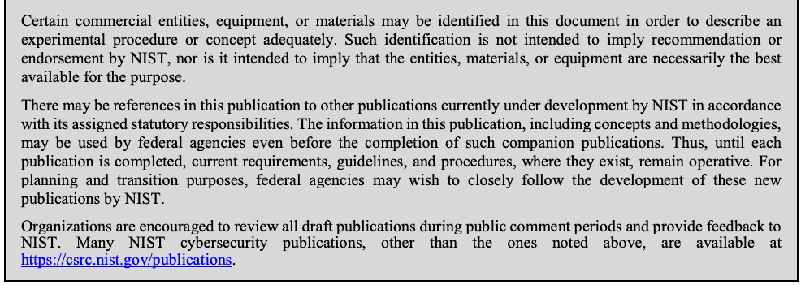
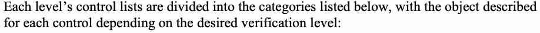
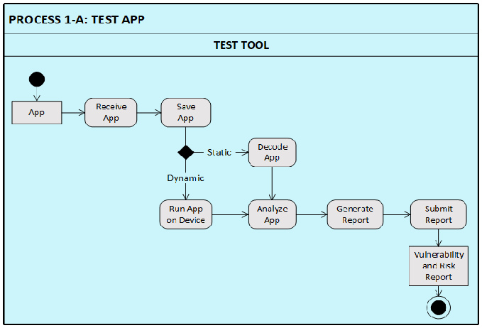

NIST SP 800-163 Rev. 1 日本語訳
英語タイトル : Vetting the Security of Mobile Applications日本語タイトル : モバイルアプリケーションのセキュリティ審査
公開日 : 2019-04-19
原文URL : https://csrc.nist.gov/pubs/sp/800/163/r1/final
翻訳編集 : 自動生成（有志による非公式の日本語訳）, 原文取得日 : 2026-09-30, 訳文 : 508 / 508 ブロック
[要約] SP 800-163 Rev. 1 は、モバイルアプリケーションのセキュリティ審査プロセスを概説し、詳述します。アプリのセキュリティ要件、受け入れから試験、承認／却下、結果の提出、再審査までの審査プロセス、脆弱性の分類を扱い、審査の限界などの考慮事項も述べます。このプロセスは、モバイルアプリケーションが組織のセキュリティ要件に適合し、合理的な範囲で脆弱性がないことの確認に利用できます。
NIST Special Publication 800-163
NIST 特別刊行物800-163
Revision 1
改訂第1版
Vetting the Security of Mobile Applications
モバイルアプリケーションのセキュリティ審査
Michael Ogata Josh Franklin Jeffrey Voas Vincent Sritapan Stephen Quirolgico
Michael Ogata Josh Franklin Jeffrey Voas Vincent Sritapan Stephen Quirolgico
This publication is available free of charge from: https://doi.org/10.6028/NIST.SP.800-163r1
本刊行物は次のURLから無料で入手できる：https://doi.org/10.6028/NIST.SP.800-163r1
C O M P U T E R S E C U R I T Y
コンピューターセキュリティ
［NIST のロゴ。公的な標章のため、この非公式サイトには掲載していない。原本 PDF を参照。］
NIST Special Publication 800-163
NIST Special Publication 800-163
Revision 1
改訂第1版
Vetting the Security of Mobile Applications
モバイルアプリケーションのセキュリティ審査
Michael Ogata, Software and Systems Division, Information Technology Laboratory
Michael Ogata、情報技術研究所ソフトウェア・システム部門
Josh Franklin*, Applied Cybersecurity Division, Information Technology Laboratory
Josh Franklin*、情報技術研究所応用サイバーセキュリティ部門
Jeffrey Voas, Computer Security Division, Information Technology Laboratory
Jeffrey Voas、情報技術研究所コンピュータセキュリティ部門
This publication is available free of charge from: https://doi.org/10.6028/NIST.SP.800-163r1
本刊行物は次のURLから無料で入手できる：https://doi.org/10.6028/NIST.SP.800-163r1
April 2019
2019年4月
Vincent Sritapan, Office of Science and Technology, U.S. Department of Homeland Security
Vincent Sritapan、米国国土安全保障省科学技術局
Stephen Quirolgico, Office of the Chief Information Officer, U.S. Department of Homeland Security
Stephen Quirolgico、米国国土安全保障省最高情報責任者室
*Former employee; all work for this publication was done while at NIST
*元職員。本刊行物のためのすべての作業はNIST在職中に行われた
U.S. Department of Commerce
米国商務省
Wilbur L. Ross, Jr., Secretary
Wilbur L. Ross, Jr.、長官
National Institute of Standards and Technology
米国国立標準技術研究所
Walter Copan, NIST Director and Under Secretary of Commerce for Standards and Technology
Walter Copan、NIST所長兼標準技術担当商務次官
Authority
権限
This publication has been developed by NIST in accordance with its statutory responsibilities under the Federal Information Security Modernization Act (FISMA) of 2014, 44 U.S.C. § 3551 et seq., Public Law (P.L.) 113-283. NIST is responsible for developing information security standards and guidelines, including minimum requirements for federal information systems, but such standards and guidelines shall not apply to national security systems without the express approval of appropriate federal officials exercising policy authority over such systems. This guideline is consistent with the requirements of the Office of Management and Budget (OMB) Circular A-130.
本刊行物は、2014年連邦情報セキュリティ近代化法（FISMA）、44 U.S.C. § 3551以降、Public Law（P.L.）113-283に基づく法定責任に従ってNISTが作成した。NISTは、連邦情報システムの最低要件を含む情報セキュリティ標準および指針を策定する責任を負う。ただし、当該システムに関する政策権限を行使する適切な連邦当局者の明示的な承認がない限り、そのような標準および指針は国家安全保障システムには適用されない。本指針は、行政管理予算局（OMB）通達A-130の要件と整合する。
Nothing in this publication should be taken to contradict the standards and guidelines made mandatory and binding on federal agencies by the Secretary of Commerce under statutory authority. Nor should these guidelines be interpreted as altering or superseding the existing authorities of the Secretary of Commerce, Director of the OMB, or any other federal official. This publication may be used by nongovernmental organizations on a voluntary basis and is not subject to copyright in the United States. Attribution would, however, be appreciated by NIST.
本刊行物のいかなる記述も、法定権限に基づき商務長官が連邦機関に義務付け、拘束力を持たせた標準および指針に矛盾するものと解釈してはならない。また、本指針を、商務長官、OMB長官、その他の連邦当局者の既存の権限を変更または置き換えるものと解釈してはならない。本刊行物は、非政府組織が任意に利用でき、米国内では著作権の対象ではない。ただし、NISTへの帰属表示を歓迎する。
National Institute of Standards and Technology Special Publication 800-163 Revision 1 Natl. Inst. Stand. Technol. Spec. Publ. 800-163 Rev. 1, 55 pages (April 2019) CODEN: NSPUE2
National Institute of Standards and Technology Special Publication 800-163 Revision 1 Natl. Inst. Stand. Technol. Spec. Publ. 800-163 Rev. 1, 55ページ（2019年4月） CODEN: NSPUE2
This publication is available free of charge from: https://doi.org/10.6028/NIST.SP.800-163r1
本刊行物は次のURLから無料で入手できる：https://doi.org/10.6028/NIST.SP.800-163r1
Certain commercial entities, equipment, or materials may be identified in this document in order to describe an experimental procedure or concept adequately. Such identification is not intended to imply recommendation or endorsement by NIST, nor is it intended to imply that the entities, materials, or equipment are necessarily the best available for the purpose.
原本PDFの抜粋画像

実験手順または概念を適切に説明するため、本書では特定の商業主体、機器または材料を特定することがある。このような特定は、NISTによる推奨または保証を意味するものではなく、当該主体、材料または機器が目的に対して入手可能な最良のものであることを示すものでもない。
There may be references in this publication to other publications currently under development by NIST in accordance with its assigned statutory responsibilities. The information in this publication, including concepts and methodologies, may be used by federal agencies even before the completion of such companion publications. Thus, until each publication is completed, current requirements, guidelines, and procedures, where they exist, remain operative. For planning and transition purposes, federal agencies may wish to closely follow the development of these new publications by NIST.
本刊行物には、割り当てられた法定責任に従ってNISTが現在策定中の他の刊行物への参照が含まれる場合がある。これらの刊行物が完成する前であっても、連邦機関は本刊行物の情報（概念および方法論を含む）を利用できる。各刊行物が完成するまでは、既存の要件、指針および手順が存在する場合、それらは引き続き有効である。計画および移行のため、連邦機関はNISTによるこれら新刊行物の策定を注意深く追跡したいと考える場合がある。
Organizations are encouraged to review all draft publications during public comment periods and provide feedback to NIST. Many NIST cybersecurity publications, other than the ones noted above, are available at https://csrc.nist.gov/publications.
組織は、パブリックコメント期間中にすべての草案を確認し、NISTに意見を提出することが推奨される。上記以外の多くのNISTサイバーセキュリティ刊行物は、https://csrc.nist.gov/publications から入手できる。
Comments on this publication may be submitted to:
本刊行物に対する意見の提出先：
National Institute of Standards and Technology Attn: Computer Security Division, Information Technology Laboratory 100 Bureau Drive (Mail Stop 8930) Gaithersburg, MD 20899-8930 Email: nist800-163@nist.gov
National Institute of Standards and Technology Attn: Computer Security Division, Information Technology Laboratory 100 Bureau Drive (Mail Stop 8930) Gaithersburg, MD 20899-8930 Email: nist800-163@nist.gov
All comments are subject to release under the Freedom of Information Act (FOIA).
すべてのコメントは、情報公開法（FOIA）に基づき公開される場合がある。
Reports on Computer Systems Technology
コンピューターシステム技術に関する報告書
The Information Technology Laboratory (ITL) at the National Institute of Standards and Technology (NIST) promotes the U.S. economy and public welfare by providing technical leadership for the Nation’s measurement and standards infrastructure. ITL develops tests, test methods, reference data, proof of concept implementations, and technical analyses to advance the development and productive use of information technology. ITL’s responsibilities include the development of management, administrative, technical, and physical standards and guidelines for the cost-effective security and privacy of other than national security-related information in federal information systems. The Special Publication 800-series reports on ITL’s research, guidelines, and outreach efforts in information system security, and its collaborative activities with industry, government, and academic organizations.
米国国立標準技術研究所（NIST）の情報技術研究所（ITL）は、国家の計測・標準インフラに技術的なリーダーシップを提供し、米国経済と公共の福祉を促進する。ITLは、情報技術の発展と生産的利用を推進するため、試験、試験方法、参照データ、概念実証の実装、技術分析を開発する。ITLの責務には、連邦情報システムにおける国家安全保障関連以外の情報の費用対効果に優れたセキュリティとプライバシーのための、管理、運用、技術、物理的な標準および指針の策定が含まれる。特別刊行物800シリーズは、情報システムセキュリティに関するITLの研究、指針、普及活動、および産業界、政府、学術機関との協力活動を報告する。
Abstract
要旨
Mobile applications are an integral part of our everyday personal and professional lives. As both public and private organizations rely more on mobile applications, ensuring that they are reasonably free from vulnerabilities and defects becomes paramount. This paper outlines and details a mobile application vetting process. This process can be used to ensure that mobile applications conform to an organization’s security requirements and are reasonably free from vulnerabilities.
モバイルアプリケーションは、私たちの日常生活と仕事に欠かせないものとなっている。公的組織も民間組織もモバイルアプリケーションへの依存を高める中、脆弱性や欠陥が合理的な範囲で存在しないことを確保することが最も重要となる。本書は、モバイルアプリケーションのセキュリティ審査プロセスを概説し、詳述する。このプロセスは、モバイルアプリケーションが組織のセキュリティ要件に適合し、合理的な範囲で脆弱性がないことを確認するために利用できる。
Keywords
キーワード
app vetting; app vetting system; malware; mobile applications; mobile security; NIAP; security requirements; software assurance; software vulnerabilities; software testing.
アプリ審査；アプリ審査システム；マルウェア；モバイルアプリケーション；モバイルセキュリティ；NIAP；セキュリティ要件；ソフトウェア保証；ソフトウェア脆弱性；ソフトウェア試験。
Trademark Information
商標情報
All registered trademarks belong to their respective organizations.
登録商標はすべて、それぞれの組織に帰属する。
Table of Contents
目次
List of Appendices
付録一覧
Appendix A— Threats to Mobile Applications — 29
付録A—モバイルアプリケーションに対する脅威—29
A.1 Ransomware — 29
A.1 ランサムウェア—29
A.2 Spyware — 29
A.2 スパイウェア—29
A.3 Adware — 30
A.3 アドウェア—30
A.4 Rooting — 30
A.4 ルート化—30
A.5 Trojan Horse — 30
A.5 トロイの木馬—30
A.6 Infostealer — 30
A.6 情報窃取型マルウェア—30
A.7 Hostile Downloader — 31
A.7 悪意のあるダウンローダー—31
A.8 SMS Fraud — 31
A.8 SMS詐欺—31
A.9 Call Fraud — 31
A.9 通話詐欺—31
A.10 Man in the Middle Attack (MITM) — 31
A.10 中間者攻撃（MITM）—31
A.11 Toll Fraud — 31
A.11 通話料金詐欺—31
Appendix B— Android App Vulnerability Types — 33
付録B—Androidアプリの脆弱性の種類—33
Appendix C— iOS App Vulnerability Types — 36
付録C—iOSアプリの脆弱性の種類—36
Appendix D— Acronyms — 39
付録D—頭字語—39
Appendix E— Glossary — 41
付録E—用語集—41
Appendix F— References — 44
付録F—参考文献—44
List of Figures
図一覧
Figure 1 - Software assurance during mobile application lifecycle — 2
図1—モバイルアプリケーションのライフサイクルにおけるソフトウェア保証—2
Figure 2 - Risk Management Framework — 10
図2—リスク管理フレームワーク—10
Figure 3 - App vetting process overview — 11
図3—アプリ審査プロセスの概要—11
Figure 4 - Four sub-processes of an app vetting process — 12
図4 - アプリ審査プロセスの四つのサブプロセス — 12
Figure 5 - Test tool workflow — 14
図5 - 試験ツールのワークフロー — 14
Figure 6 - App approval/rejection process — 15
図6 - アプリの承認／却下プロセス — 15
Figure 7 - Example app vetting system architecture — 26
図7 - アプリ審査システムのアーキテクチャ例 — 26
List of Tables
表一覧
1 Introduction
1 はじめに
Mobile applications (or apps) have had a transformative effect on organizations. Through ever-increasing functionality, ubiquitous connectivity and faster access to mission-critical information, mobile apps continue to provide unprecedented support for facilitating organizational objectives. Despite their utility, these apps can pose serious security risks to an organization and its users due to vulnerabilities that may exist within their software 1.Such vulnerabilities may be exploited to steal information, control a user’s device, deplete hardware resources, or result in unexpected app or device behavior.
モバイルアプリケーション（以下「アプリ」）は、組織に変革をもたらしてきた。機能の拡充、どこからでも利用できる接続性、ミッションクリティカルな情報への迅速なアクセスを通じて、アプリは組織目標の達成を前例のない形で支援し続けている。一方、有用である反面、ソフトウェア内に存在する脆弱性[1]により、アプリは組織とその利用者に深刻なセキュリティリスクをもたらす可能性がある。このような脆弱性が悪用されると、情報の窃取、利用者のデバイスの制御、ハードウェア資源の枯渇、またはアプリやデバイスの予期しない動作につながるおそれがある。
App vulnerabilities are caused by several factors including design flaws and programming errors, which may have been inserted intentionally or inadvertently. In the app marketplace, apps containing vulnerabilities are prevalent due in part to the submission of apps by developers who may trade security for functionality in order to reduce cost and time to market.
アプリの脆弱性は、設計上の欠陥やプログラミングエラーなど、複数の要因によって生じる。これらは意図的に、または不注意に混入する場合がある。アプリ市場では、開発者がコストと市場投入までの時間を減らすために、セキュリティより機能性を優先することもあり、脆弱性を含むアプリが広く存在している。
The commercial app stores provided by mobile operating system vendors (Android, iOS) review the apps for issues such as malware, objectionable content, collecting user information without notice, performance impact (e.g., battery), etc. prior to allowing them to be hosted in their app market. The level and type of reviews conducted are opaque to consumers and the federal government. Furthermore, these app markets serve a global customer base that numbers in the billions and their reviews of apps are consumer- and brand-focused. Enterprise organizations—federal agencies, regulated industries, other non-governmental organizations—that plan to use consumer apps for their business will need to make risk-based decisions for app acquisition based on their own security, privacy and policy requirements and risk tolerance.
モバイルOSベンダー（Android、iOS）が提供する商用アプリストアは、アプリを掲載する前に、マルウェア、不適切なコンテンツ、利用者に知らせずに行う情報収集、性能への影響（例: バッテリー消費）などの問題についてアプリを審査する。実施される審査の水準と種類は、消費者にも連邦政府にも明らかでない。さらに、これらのアプリ市場は数十億人規模の世界中の利用者を対象としており、アプリ審査は消費者とブランドを重視している。業務で消費者向けアプリを利用する予定の企業組織—連邦機関、規制対象業界、その他の非政府組織—は、自らのセキュリティ、プライバシーおよびポリシー上の要件とリスク許容度に基づき、リスクを考慮してアプリ取得を判断する必要がある。
The level of risk related to vulnerabilities varies depending on several factors including the data accessible to an app. For example, apps that access data such as precise and continuous geolocation information, personal health metrics or personally identifiable information (PII) may be considered to be of higher risk than those that do not access sensitive data. In addition, apps that depend on wireless network technologies (e.g., Wi-Fi, cellular, Bluetooth) for data transmission may also be of high risk since these technologies also can be used as vectors for remote exploits. Even apps considered low risk, however, can have significant impact if exploited. For example, public safety apps that fail due to a vulnerability exploit could potentially result in the loss of life.
脆弱性に伴うリスクの程度は、アプリがアクセスできるデータなど、複数の要因によって異なる。たとえば、正確かつ継続的な位置情報、個人の健康指標、または個人識別情報（PII）などのデータにアクセスするアプリは、機微データにアクセスしないアプリよりリスクが高いとみなされる場合がある。また、Wi-Fi、携帯電話ネットワーク、Bluetoothなどの無線ネットワーク技術にデータ伝送を依存するアプリも、これらの技術がリモート攻撃の経路として使われる可能性があるため、高リスクとなる場合がある。しかし、低リスクとみなされるアプリであっても、悪用された場合には大きな影響を及ぼし得る。たとえば、脆弱性の悪用によって公共安全アプリが機能しなくなれば、命が失われる可能性もある。
To mitigate potential security risks associated with mobile apps, organizations should employ a software assurance process that ensures a level of confidence that software is free from vulnerabilities, either intentionally designed into the software or accidentally inserted at any time during its life cycle, and that the software functions in the intended manner [2]. In this document, we define a software assurance process for mobile applications. We refer to this process as an app vetting process.
モバイルアプリに伴う潜在的なセキュリティリスクを軽減するため、組織はソフトウェア保証プロセスを導入すべきである。このプロセスは、ソフトウェアに意図的に設計された脆弱性や、ライフサイクルのいずれかの時点で誤って混入した脆弱性がないという確信を一定程度確保し、ソフトウェアが意図したとおりに機能することを確認する[2]。本書では、モバイルアプリケーション向けのソフトウェア保証プロセスを定義し、これをアプリ審査プロセスと呼ぶ。
1.1 Purpose
1.1 目的
This document defines an app vetting process and provides guidance on (1) planning and implementing an app vetting process, (2) developing security requirements for mobile apps, (3) identifying appropriate tools for testing mobile apps and (4) determining if a mobile app is acceptable for deployment on an organization’s mobile devices. An overview of techniques commonly used by software assurance professionals is provided, including methods of testing for discrete software vulnerabilities and misconfigurations related to mobile app software.
本書はアプリ審査プロセスを定義し、(1) アプリ審査プロセスの計画と実装、(2) モバイルアプリのセキュリティ要件の策定、(3) モバイルアプリの試験に適したツールの特定、(4) 組織のモバイルデバイスへの展開にアプリが適切かどうかの判断について指針を示す。また、ソフトウェア保証の専門家が一般に用いる手法を概説する。これには、モバイルアプリのソフトウェアに関する個別の脆弱性や設定不備を試験する方法が含まれる。
1.2 Scope
1.2 適用範囲
Software assurance activities for a mobile application may occur in one or more phases of the mobile application lifecycle: (1) during the development of the app by its developer (i.e., the app development phase), (2) after receiving a developed app but prior to its deployment by the end-user organization (i.e., the app acquisition phase) or (3) during deployment of the app by the end-user organization (i.e., the app deployment phase). These three phases of the mobile application lifecycle are shown in Figure 1.
モバイルアプリケーションのソフトウェア保証活動は、そのライフサイクルの一つ以上の段階で行われる場合がある。(1) 開発者によるアプリ開発中（すなわちアプリ開発段階）、(2) 開発済みアプリを受領してからエンドユーザー組織が展開するまでの間（すなわちアプリ取得段階）、または(3) エンドユーザー組織によるアプリ展開中（すなわちアプリ展開段階）である。モバイルアプリケーションのライフサイクルにおけるこの三段階を図1に示す。
![Figure 1 - Software assurance during mobile application lifecycle. An activity diagram divided into columns. The left column, headed “DEVELOPER/VENDOR”, is the “APP DEVELOPMENT PHASE” (“Source Code Analyzers”). The right part, headed “END-USER ORGANIZATION”, has two columns: “APP ACQUISITION PHASE” (“App Vetting System, Test Tools”) and “APP DEPLOYMENT PHASE” (“Endpoint Solution”). In the development phase, a start node leads to “Develop/Update App”; “Perform Source Code Analysis” outputs an “App” (solid arrow) and “Security Artifacts” (dashed box and arrow), and a line from it returns to “Develop/Update App”. The App and the Security Artifacts (dashed) lead to “Perform App Vetting Process” in the acquisition phase, which outputs an “App” that leads to “Perform App Analysis” in the deployment phase, followed by an end node.](assets/163r1/p0009-figure-01.png)
図1—モバイルアプリケーションのライフサイクルにおけるソフトウェア保証。列に分かれたアクティビティ図である。左の列は「DEVELOPER/VENDOR」（開発者／ベンダー）の見出しの下の「APP DEVELOPMENT PHASE」（アプリ開発フェーズ、「Source Code Analyzers」（ソースコード解析ツール））である。右側は「END-USER ORGANIZATION」（エンドユーザー組織）の見出しの下に、「APP ACQUISITION PHASE」（アプリ取得フェーズ、「App Vetting System, Test Tools」（アプリ審査システム、試験ツール））と「APP DEPLOYMENT PHASE」（アプリ展開フェーズ、「Endpoint Solution」（エンドポイントソリューション））の2列がある。開発フェーズでは、開始ノードから「Develop/Update App」（アプリの開発／更新）へ進む。「Perform Source Code Analysis」（ソースコード解析の実施）は「App」（アプリ、実線の矢印）と「Security Artifacts」（セキュリティ成果物、破線の箱と矢印）を出力し、そこから出る線が「Develop/Update App」へ戻る。アプリとセキュリティ成果物（破線）は取得フェーズの「Perform App Vetting Process」（アプリ審査プロセスの実施）へ進み、そこから出力された「App」が展開フェーズの「Perform App Analysis」（アプリ分析の実施）へ進み、終了ノードに至る。
Figure 1 - Software assurance during mobile application lifecycle.
図1—モバイルアプリケーションのライフサイクルにおけるソフトウェア保証。
In this document, we focus primarily on the software assurance activities of the app vetting process, which we define as part of the app acquisition phase of the mobile application lifecycle. Thus, software assurance activities performed during the app’s development phase (e.g., by source code analyzers) or during the app’s deployment phase (e.g., by endpoint solutions) are considered out of scope for this document.
本書では、アプリ審査プロセスのソフトウェア保証活動を主な対象とする。このプロセスは、モバイルアプリケーションのライフサイクルにおけるアプリ取得段階の一部として定義する。したがって、アプリの開発段階（例: ソースコード解析ツールによるもの）または展開段階（例: エンドポイントソリューションによるもの）に実施されるソフトウェア保証活動は、本書の適用範囲外とする。
In addition, this document does not address the use of Enterprise Mobility Management (EMM), mobile app management or mobile threat defense systems, although integrations with these systems are briefly examined. Further, this document does not discuss vetting the security of Internet of Things (IoT) apps or address the security of underlying mobile platforms and operating systems. These subjects are addressed in other publications [3]–[5]. Finally, discussion surrounding the security of web services and cloud infrastructures used to support backend processing of apps is also out of scope for this document.
さらに、本書ではエンタープライズモビリティ管理（EMM）、モバイルアプリ管理、またはモバイル脅威防御システムの使用を扱わない。ただし、これらのシステムとの統合については簡潔に検討する。また、モノのインターネット（IoT）アプリのセキュリティ審査や、基盤となるモバイルプラットフォームおよびオペレーティングシステムのセキュリティについても論じない。これらの主題は他の刊行物[3]–[5]で扱われている。最後に、アプリのバックエンド処理を支えるウェブサービスおよびクラウドインフラストラクチャのセキュリティに関する議論も、本書の適用範囲外である。
Finally, it should be noted that mobile apps, and the devices they run on, communicate using a variety of network infrastructures: Wi-Fi, cellular networks, Bluetooth, etc. These networks represent possible failure points for the security of an app. A deep evaluation of each of these network infrastructures is out of scope for this document.
最後に、モバイルアプリとそれらを実行するデバイスは、Wi-Fi、携帯電話ネットワーク、Bluetoothなど、さまざまなネットワークインフラストラクチャを使って通信することに留意されたい。これらのネットワークは、アプリのセキュリティにおける潜在的な障害点となる。本書では、個々のネットワークインフラストラクチャを詳細に評価することは適用範囲外である。
1.3 Intended Audience
1.3 想定読者
This document is intended for public- and private-sector organizations that seek to improve the software assurance of mobile apps deployed on their mobile devices. More specifically, this document is intended for those who are:
本書は、組織のモバイルデバイスに展開するモバイルアプリのソフトウェア保証を向上させようとする公的機関および民間組織を対象とする。具体的には、以下の担当者を対象とする。
•Responsible for establishing an organization’s mobile device security posture,
•組織のモバイルデバイスのセキュリティ態勢を確立する責任を負う者、
•Responsible for the management and security of mobile devices within an organization,
•組織内のモバイルデバイスを管理し、そのセキュリティを確保する責任を負う者、
•Responsible for determining which apps are used within an organization, and
•組織内で使用するアプリを決定する責任を負う者、および
•Interested in understanding what types of assurances the app vetting process provides.
•アプリ審査プロセスがどのような保証を提供するかを理解しようとする者。
1.4 Document Structure
1.4 本書の構成
The remainder of this document is organized into the following sections:
本書の残りの部分は、以下の各節で構成される。
•Section 2—App Security Requirements
•第2節—アプリのセキュリティ要件
•Section 3—App Vetting Process
•第3節—アプリ審査プロセス
•Section 4—App Testing Approaches and Vulnerability Classifiers
•第4節—アプリの試験アプローチと脆弱性分類
•Section 5—App Vetting Considerations
•第5節—アプリ審査に関する考慮事項
•Section 6—App Vetting Systems
•第6節—アプリ審査システム
•Appendix A—Threats to Mobile Applications
•付録A—モバイルアプリケーションに対する脅威
•Appendix B—Android App Vulnerability Types
•付録B—Androidアプリの脆弱性の種類
•Appendix C— iOS App Vulnerability Types
•付録C—iOSアプリの脆弱性の種類
•Appendix D—Acronyms and Abbreviations
•付録D—頭字語および略語
•Appendix E—Glossary
•付録E—用語集
•Appendix F—References
•付録F—参考文献
1.5 Document Conventions
1.5 本書の表記規則
Applications written specifically for a mobile platform are referred to as “apps” throughout this special publication.
本特別刊行物では、モバイルプラットフォーム向けに特別に作成されたアプリケーションを、全編を通じて「アプリ」と呼ぶ。
2 App Security Requirements
2 アプリのセキュリティ要件
Before vetting a mobile app for security, an organization must define the security requirements that an app must meet in order to be approved for use by the organization. In this document, we define two types of app security requirements that organizations should develop: general and organization-specific.
モバイルアプリのセキュリティ審査を行う前に、組織は、組織での使用を承認するためにアプリが満たすべきセキュリティ要件を定義しなければならない。本書では、組織が策定すべきアプリのセキュリティ要件を、一般要件と組織固有要件の二種類に分けて定義する。
2.1 General Requirements
2.1 一般要件
General app security requirements define the software and behavioral characteristics of an app that should or should not be present in order to ensure the security of the app. These requirements are considered “general” since they can be applied across all mobile applications and tailored to meet the security needs and risk tolerance of an organization. General app security requirements may be derived from a number of available standards, best practices, and resources including those specified by NIAP, OWASP, MITRE and NIST2.
一般的なアプリセキュリティ要件は、アプリのセキュリティを確保するために備えるべき、又は備えるべきでないソフトウェア及び動作上の特性を定める。これらの要件が「一般的」とされるのは、あらゆるモバイルアプリに適用でき、組織のセキュリティニーズ及びリスク許容度に合わせて調整できるためである。一般的なアプリセキュリティ要件は、NIAP、OWASP、MITRE及びNISTが示すものを含む、利用可能なさまざまな標準、ベストプラクティス及びリソースから導出できる2。
2.1.1 National Information Assurance Partnership (NIAP)
2.1.1 国立情報保証パートナーシップ（NIAP）
The NIAP Protection Profiles (PPs) specify an implementation-independent set of security requirements for a category of information technology (IT) products that meet specific federal customer needs. Specifically, the NIAP PPs are intended for use in certifying products for use in national security systems to meet a defined set of security requirements. NIAP PP certified products are also used by federal organizations in non-national security systems. The NIAP PPs define in detail the security objectives, requirements and assurance activities that must be met for a product evaluation to be considered International Organization for Standardization (ISO)/ International Electrotechnical Commission (IEC) 15408 certified [6]. While many mobile apps fall outside the defined scope for requiring ISO/IEC 15408 certification, security analysis of these apps is still useful. For these apps, the NIAP recommends a set of activities and evaluations defined in Requirements for Vetting Mobile Apps from the Protection Profile for Application Software [7]. The requirements defined in this document are divided into two broad categories:
NIAP保護プロファイル（PP）は、特定の連邦政府顧客のニーズを満たす情報技術（IT）製品カテゴリ向けに、実装に依存しない一連のセキュリティ要件を規定する。具体的には、NIAP PPは、定められた一連のセキュリティ要件を満たすため、国家安全保障システムで使用する製品の認証に用いることを意図している。NIAP PP認証済み製品は、国家安全保障システム以外の連邦組織でも使用される。NIAP PPは、製品評価を国際標準化機構（ISO）／国際電気標準会議（IEC）15408認証とみなすために満たすべき、セキュリティ目標、要件及び保証活動を詳細に定義する[6]。多くのモバイルアプリはISO/IEC 15408認証を必要とする定義済み範囲外であるが、これらのアプリのセキュリティ分析も有用である。こうしたアプリについて、NIAPは「アプリケーションソフトウェアの保護プロファイルに基づくモバイルアプリ審査要件」[7]に定義された活動及び評価一式を推奨している。本書で定義する要件は、次の二つの大分類に分けられる。
1) Functional Requirements—Declarations concerning the required existence or absence of particular software behavior or attributes. 2) Assurance Requirements—Declarations concerning actions the evaluator must take or stipulations that must be true for vetting to successfully execute.
1) 機能要件—特定のソフトウェア動作又は属性が必ず存在すること、又は存在しないことについての宣言。2) 保証要件—評価者が実施しなければならない行為、又は審査を適切に実施するために真でなければならない条件についての宣言。
Table 1 summarizes the NIAP functional requirements3.
表1はNIAPの機能要件を要約する3。
Table 1 - NIAP Functional Requirements.
表1—NIAPの機能要件。
| Functional Requirements |
|---|
| Access to Platform Resources |
| Anti-Exploitation Capabilities |
| Cryptographic Key Functionality |
| Cryptographic Operations |
| Encryption of Sensitive Application Data |
| Hyper Text Transfer Protocol Secure (HTTPS) |
| Integrity for Installation and Update |
| Network Communications |
| Protection of Data in Transit |
| Random Bit Generation |
| Secure by Default Configuration |
| Software Identification and Versions |
| Specification of Management Functions |
| Storage of Credentials |
| Supported Configuration Mechanism |
| Transport Layer Security Operations |
| Use of Supported Services and Application Programming Interfaces |
| Use of Third-Party Libraries |
| User Consent for Transmission of Personally Identifiable Information |
| X.509 Functionality |
| 機能要件 |
|---|
| プラットフォームリソースへのアクセス |
| 悪用対策機能 |
| 暗号鍵機能 |
| 暗号処理 |
| 機微なアプリデータの暗号化 |
| ハイパーテキスト転送プロトコルセキュア（HTTPS） |
| インストール及び更新の完全性 |
| ネットワーク通信 |
| 転送中データの保護 |
| 乱数生成 |
| デフォルトでセキュアな構成 |
| ソフトウェアの識別情報及びバージョン |
| 管理機能の仕様 |
| 認証情報の保存 |
| サポート対象の構成メカニズム |
| トランスポート層セキュリティ処理 |
| サポート対象サービス及びアプリケーションプログラミングインターフェースの使用 |
| サードパーティライブラリの使用 |
| 個人識別情報の送信に関するユーザー同意 |
| X.509機能 |
The Assurance Requirement found in the protection profile can be summarized as follows:
保護プロファイルに含まれる保証要件は、次のように要約できる。
•The application shall be labeled with a unique reference.
•アプリには、一意の参照識別子を付与しなければならない。
•The evaluator shall test a subset of the Target of Evaluation (TOE) security functions (TSF) to confirm that the TSF operates as specified.
•評価者は、評価対象（TOE）のセキュリティ機能（TSF）の一部を試験し、TSFが仕様どおりに動作することを確認しなければならない。
•The application shall be suitable for testing (free from obfuscation4)
•アプリは試験に適した状態（難読化されていない状態4）でなければならない。
•The evaluator shall perform a search of public domain sources to identify potential vulnerabilities in the TOE.
•評価者は、公開情報源を調査してTOEに潜在する脆弱性を特定しなければならない。
2.1.2 OWASP Mobile Risks, Controls and App Testing Guidance
2.1.2 OWASPのモバイルリスク、管理策及びアプリ試験ガイダンス
The Open Web Application Security Project (OWASP) maintains multiple useful resources concerning mobile app testing and security. Their Mobile Application Security Verification Standard (MASVS) [8] is a detailed model for mobile app security that can be used to provide baseline security requirements for an organization. Like the NIAP PP, the MASVS defines a set of declarations concerning the structure and behavior of an app. However, the MASVS also defines three verification levels:
Open Web Application Security Project（OWASP）は、モバイルアプリの試験及びセキュリティに関する有用なリソースを複数管理している。同プロジェクトの「モバイルアプリケーションセキュリティ検証標準」（MASVS）[8] は、組織のベースラインとなるセキュリティ要件を示すために使用できる、モバイルアプリのセキュリティの詳細なモデルである。NIAPのPPと同様に、MASVSもアプリの構造と動作に関する一連の宣言を定義している。ただし、MASVSは次の3つの検証レベルも定義している。
•標準セキュリティ（レベル1）
•Defense in Depth (Level 2)
•多層防御（レベル2）
•Resilience against Reverse Engineering and Threats (Level 3).
•リバースエンジニアリング及び脅威への耐性（レベル3）。
Each level’s control lists are divided into the categories listed below, with the object described for each control depending on the desired verification level:
原本PDFの抜粋画像

各レベルの管理策一覧は、以下のカテゴリに分かれる。各管理策が対象とする事項は、求める検証レベルによって異なる。
•Architecture, Design, and Threat Modeling Requirements
•アーキテクチャ、設計及び脅威モデリングの要件
•Data Storage and Privacy Requirements
•データ保存及びプライバシーの要件
•Cryptography Requirements
•暗号要件
•Authentication and Session Management Requirements
•認証及びセッション管理の要件
•Network Communication Requirements
•ネットワーク通信の要件
•Platform Integration Requirements
•プラットフォーム統合の要件
•Code Quality and Build-Setting Requirements
•コード品質及びビルド設定の要件
•Resilience Requirements
•レジリエンス要件
The OWASP Mobile Security Testing Guide (MSTG) [9] is a manual for testing the security of mobile apps. It describes the technical processes for verifying the requirements listed in the MASVS.
OWASP Mobile Security Testing Guide（MSTG）[9]は、モバイルアプリのセキュリティを試験するための手引書である。MASVSに列挙された要件を検証するための技術的プロセスを説明している。
2.1.3 MITRE App Evaluation Criteria
2.1.3 MITREのアプリ評価基準
In 2016, the MITRE Corporation (MITRE) performed an analysis of the effectiveness of mobile app security vetting solutions for helping enterprises automate portions of their vetting process. To perform the analysis, MITRE developed solution criteria based on NIAP’s Protection Profile for Application Software as well as additional criteria to address broader app vetting solution capabilities, threats against the app vetting solution itself, and other common mobile app vulnerabilities and malicious behaviors.
2016年、MITRE Corporation（MITRE）は、企業が審査プロセスの一部を自動化できるよう支援するモバイルアプリセキュリティ審査ソリューションの有効性を分析した。この分析のため、MITREは、NIAPのアプリケーションソフトウェア保護プロファイルを基にしつつ、より広範なアプリ審査ソリューションの機能、アプリ審査ソリューション自体に対する脅威、その他一般的なモバイルアプリの脆弱性及び悪意ある動作を扱う追加基準を組み合わせて、ソリューション基準を作成した。
Using its criteria, MITRE developed or obtained multiple vulnerable and malicious-appearing apps for use in assessing mobile app vetting solutions. MITRE used the apps to test the capabilities of mobile app vetting solutions.
MITREはこれらの基準を用いて、モバイルアプリ審査ソリューションを評価するため、脆弱又は悪意あるように見えるアプリを複数作成又は入手した。MITREはこれらのアプリを使って、モバイルアプリ審査ソリューションの機能を試験した。
MITRE published a technical report [10] describing their methodology, evaluation criteria, test applications and overall results from analyzing then-available solutions. The report and test applications are available on MITRE’s GitHub site5.
MITREは、当時利用可能であったソリューションを分析した際の方法論、評価基準、試験用アプリケーション、および全体的な結果を説明する技術報告書[10]を公表した。この報告書と試験用アプリケーションは、MITREのGitHubサイト5で入手できる。
2.1.4 NIST SP 800-53
2.1.4 NIST SP 800-53
NIST Special Publication 800-53 [5] provides an extensive catalog of security and privacy controls designed for federal information systems. In addition, the document defines a process for selecting controls to defend IT systems, individuals and other organizational assets from a variety of threats, such as hostile cyber-attacks, natural disasters, structural failures and human errors. The controls can be customized to an organization-specific process to manage information security and privacy risk. The controls can support a diverse set of security and privacy requirements across an organization’s required policies, standards, and/or business needs. A set of three security control baseline are provided based on high, medium and low impact. Going further, the publication also describes how to develop specialized sets of controls, also known as control overlays, that can be tailored for unique, or specific types of missions/business functions and technologies. The NIST 800-53 security controls address privacy and security from a functionality perspective (the strength of security functions and mechanisms provided) and an assurance perspective (the measures of confidence in the implemented security capability). Addressing both security functionality and security assurance ensures that information technology products and the information systems built from those products using sound systems and security engineering principles are sufficiently trustworthy.
NIST特別刊行物800-53[5]は、連邦情報システム向けに設計されたセキュリティ及びプライバシー管理策の包括的なカタログを提供する。また、敵対的サイバー攻撃、自然災害、構造上の故障及び人的ミスなど、さまざまな脅威からITシステム、個人及びその他の組織資産を防御する管理策を選択するプロセスを定義している。管理策は、組織固有の情報セキュリティ及びプライバシーリスク管理プロセスに合わせて調整できる。管理策は、組織に求められるポリシー、標準及び／又は業務ニーズにまたがる多様なセキュリティ及びプライバシー要件を支援できる。高、中及び低の影響度に基づき、三つのセキュリティ管理策ベースラインが提供されている。さらに、本刊行物では、独自又は特定の種類の任務／業務機能及び技術に合わせて調整できる、管理策オーバーレイとも呼ばれる特殊な管理策セットの開発方法も説明している。NIST 800-53のセキュリティ管理策は、機能面（提供するセキュリティ機能及びメカニズムの強度）と保証面（実装されたセキュリティ能力に対する信頼度の尺度）の両方からプライバシー及びセキュリティに対処する。セキュリティ機能とセキュリティ保証の両方を扱うことで、IT製品、及び健全なシステムエンジニアリング及びセキュリティエンジニアリングの原則を用いてそれらの製品から構築される情報システムが、十分に信頼できることを確保する。
2.2 Organization-Specific Requirements
2.2 組織固有の要件
Organization-specific security requirements define the policies, regulations and guidance that an organization must follow to ensure the security posture of the organization. Examples include banning social media apps from installation on the organization’s mobile devices and restricting installation of apps developed by specific vendors.
組織固有のセキュリティ要件は、組織のセキュリティ態勢を確保するために組織が従わなければならないポリシー、規制及びガイダンスを定める。例えば、組織のモバイルデバイスへのソーシャルメディアアプリのインストール禁止や、特定のベンダーが開発したアプリのインストール制限などがある。
To help develop organization-specific security requirements, it is helpful to identify non-vulnerability-related factors that can impact the security posture of mobile apps. Such factors can be derived by considering the criteria as shown in Table 2.
組織固有のセキュリティ要件を策定するには、モバイルアプリのセキュリティ態勢に影響する、脆弱性以外の要因を特定すると役立つ。こうした要因は、表2に示す基準を検討することで導出できる。
Table 2 - Organization-specific security criteria.
表2—組織固有のセキュリティ基準。
| Criterion | Description |
|---|---|
| Policies | The security, privacy and acceptable use policies; social media guidelines; and regulations applicable to the organization. |
| Provenance | Identity of the developer, developer’s organization, developer’s reputation, consumer reviews, etc. |
| Data Sensitivity | The sensitivity of data collected, stored, or transmitted by the app. |
| App Criticality | The level of importance of the app relative to the organization’s business. |
| Target Users | The app’s intended set of users from the organization. |
| Target Hardware | The intended hardware platform on which the app will be deployed. |
| 基準 | 説明 |
|---|---|
| ポリシー | 組織に適用されるセキュリティ、プライバシー及び許容される利用に関するポリシー、ソーシャルメディアのガイドライン及び規制。 |
| 来歴 | 開発者の身元、開発者の組織、開発者の評判、利用者レビューなど。 |
| データの機微度 | アプリが収集、保存又は送信するデータの機微度。 |
| アプリの重要度 | 組織の業務におけるアプリの重要性のレベル。 |
| 対象ユーザー | 組織内でアプリの利用を意図されるユーザーの範囲。 |
| 対象ハードウェア | アプリの展開先として意図されるハードウェアプラットフォーム。 |
| Target Operating Platform | The operating system, operating system version/Software Development Kit (SDK), and configuration on which the app will be deployed. | |
| Target Environment | The intended operational environment of the app (e.g., general public use vs. sensitive military environment). | |
| Digital Signature | Digital signatures applied to the app binaries, libraries, or packages. | |
| App Documentation | User Guide | When available, the app’s user guide assists testing by specifying the expected functionality and expected behaviors. This is simply a statement from the developer describing what they claim their app does and how it does it. |
| Test Plans | Reviewing the developer’s test plans may help focus app vetting by identifying any areas that have not been tested or were tested inadequately. A developer could opt to submit a test oracle in certain situations to demonstrate its internal test effort. | |
| Test Results | Code review results and other testing results will indicate which security standards were followed. For example, if an app threat model was created, this standard should be submitted. It will list weaknesses that were identified and should have been addressed during app design and coding. | |
| Service-Level Agreement | If an app was developed for an organization by a third-party, a Service-Level Agreement (SLA) may have been included as part of the vendor contract. This contract should require the app to be compatible with the organization’s security policy. | |
| 対象オペレーティングプラットフォーム | アプリの展開先となるオペレーティングシステム、オペレーティングシステムのバージョン／ソフトウェア開発キット（SDK）及び構成。 | |
| 対象環境 | アプリが動作することを意図された環境（例えば、一般公衆向けと機微な軍事環境）。 | |
| デジタル署名 | アプリのバイナリ、ライブラリ又はパッケージに適用されたデジタル署名。 | |
| アプリの文書 | ユーザーガイド | 入手可能な場合、アプリのユーザーガイドには、期待される機能及び動作が記載され、試験に役立つ。これは、アプリが何を行い、どのように動作するかについて、開発者が主張する内容を記したものである。 |
| 試験計画 | 開発者の試験計画をレビューすると、試験されていない領域又は不十分に試験された領域を特定でき、アプリ審査の焦点を絞るのに役立つ場合がある。開発者は特定の状況において、内部試験の取り組みを示すため、試験オラクルの提出を選択できる。 | |
| 試験結果 | コードレビュー結果及びその他の試験結果から、どのセキュリティ標準に従ったかが分かる。例えば、アプリの脅威モデルが作成されている場合、この標準を提出すべきである。この標準には、特定された弱点が列挙されており、アプリの設計及びコーディング中に対処されているべきである。 | |
| サービスレベル合意 | 第三者が組織向けにアプリを開発した場合、ベンダー契約の一部としてサービスレベル合意（SLA）が含まれていることがある。この契約では、アプリが組織のセキュリティポリシーに適合することを要求すべきである。 | |
Some information can be gleaned from app documentation in certain cases, but even if documentation does exist it might lack technical clarity and/or use jargon specific to the circle of users who would normally purchase the app. Since the documentation for different apps will be structured in different ways, it may also be time-consuming to find this information for evaluation. Therefore, a standardized questionnaire might be appropriate for determining the software’s purpose and assessing an app developer’s efforts to address security weaknesses. Such questionnaires aim to identify software quality issues and security weaknesses by helping developers address questions from end-users/adopters about their software development processes. For example, developers can use the Department of Homeland Security (DHS) Custom Software Questionnaire [11] to answer questions such as “Does your software validate inputs from untrusted resources?” and “What threat assumptions were made when designing protections for your software?” Another useful question, not included in the DHS questionnaire, is: “Does your app access a network application programming interface (API)?” Note that such questionnaires can be used only in certain circumstances such as when source code is available and when developers can answer questions.
場合によってはアプリの文書から情報を得られるが、文書があっても技術的に明確でなかったり、通常そのアプリを購入する利用者層に固有の専門用語が使われていたりする可能性がある。アプリごとに文書の構成が異なるため、評価に必要な情報を見つけるのにも時間がかかる場合がある。したがって、ソフトウェアの目的を確認し、セキュリティ上の弱点に対処するアプリ開発者の取り組みを評価するには、標準化された質問票が適切な場合がある。こうした質問票は、開発者がエンドユーザー又は導入者からソフトウェア開発プロセスについての質問に答えられるよう支援し、ソフトウェア品質上の問題及びセキュリティ上の弱点を特定することを目的としている。例えば、開発者は国土安全保障省（DHS）のカスタムソフトウェア質問票[11]を使用して、「ソフトウェアは信頼できないリソースからの入力を検証しますか」「ソフトウェアの保護を設計する際、どのような脅威を想定しましたか」といった質問に答えることができる。DHSの質問票には含まれていないものの、役立つ質問として「アプリはネットワークアプリケーションプログラミングインターフェース（API）にアクセスしますか」がある。こうした質問票は、ソースコードが入手できる場合や、開発者が質問に回答できる場合など、特定の状況でのみ使用できることに注意すること。
Known flaws in app design and coding may be reported in publicly accessible vulnerability databases such as the U.S. National Vulnerability Database (NVD).6 Before conducting the full vetting process for a publicly available app, analysts should check one or more vulnerability databases to determine if there are known flaws in the corresponding version of the app. If one or more serious flaws already have been discovered, this finding alone might be sufficient grounds to reject the version of the app for organizational use, thus allowing the rest of the vetting process to be skipped. However, in most cases such flaws will not be known, and the full vetting process will be needed. This necessity is because there are many forms of vulnerabilities other than known flaws in app design and coding. Identifying these weaknesses necessitates first defining the app security requirements, so that deviations from these requirements can be flagged as weaknesses.
アプリの設計およびコーディングにおける既知の欠陥は、米国国立脆弱性データベース（NVD）6など、一般に公開された脆弱性データベースに報告される場合がある。一般公開されているアプリの完全な審査プロセスを実施する前に、分析者は一つ以上の脆弱性データベースを調べ、アプリの該当バージョンに既知の欠陥があるかを確認すべきである。重大な欠陥がすでに一つ以上発見されている場合、その事実だけで当該バージョンを組織での使用対象から除外する十分な根拠となる可能性があり、残りの審査プロセスを省略できる。ただし多くの場合、そのような欠陥は知られておらず、完全な審査プロセスが必要になる。これは、アプリの設計およびコーディングにおける既知の欠陥以外にも、さまざまな形の脆弱性があるためである。こうした弱点を特定するには、まずアプリのセキュリティ要件を定義し、要件からの逸脱を弱点として指摘できるようにする必要がある。
In some cases, an organization will have no defined organization-specific requirements. As a result, analysts will evaluate the security posture of the app based solely on reports and risk assessments from test tools.
組織が組織固有の要件を定義していない場合もある。その結果、分析者は試験ツールの報告及びリスク評価のみに基づいてアプリのセキュリティ態勢を評価することになる。
Note that the satisfaction or violation of an organization-specific requirement is not based on the presence or absence of a software vulnerability and thus cannot typically be determined by test tools. Instead, the satisfaction or violation of organization-specific requirements must be determined manually by an analyst.
組織固有の要件を満たしているか、又は違反しているかは、ソフトウェア脆弱性の有無に基づくものではないため、通常、試験ツールでは判断できない点に留意する。代わりに、組織固有の要件への適合又は違反は、分析者が手作業で判定しなければならない。
2.3 Risk Management and Risk Tolerance
2.3 リスク管理及びリスク許容度
The NIST Risk Management Framework (RMF) represents a joint effort spearheaded by NIST, the Department of Defense (DoD), and the Committee on National Security Systems (CNSS). The RMF describes a process through which an organization establishes, maintains and communicates a strategy to manage organization risk in relation to an information system [13]. The RMF is a seven-step process consisting of the following steps:
NISTリスク管理フレームワーク（RMF）は、NIST、国防総省（DoD）及び国家安全保障システム委員会（CNSS）が主導する共同の取り組みである。RMFは、情報システムに関する組織のリスクを管理する戦略を組織が確立、維持及び伝達するプロセスを説明する[13]。RMFは次の手順からなる七段階のプロセスである。
•Step 0: Prepare – identifying key individuals and their assigned roles within the organization, as well as the identification, organization, and prioritization of required resources
•ステップ0：準備—組織内の主要な個人及び割り当てられた役割を特定し、必要なリソースを特定、整理及び優先順位付けする。
•Step 1: Categorize – identifying the security requirements associated with a system by classifying the system according to legislation, policies, directives, regulations, standards, and organizational mission/business/operational requirements
•ステップ1：分類—法律、ポリシー、指令、規制、標準及び組織の任務／業務／運用要件に従ってシステムを分類し、システムに関連するセキュリティ要件を特定する。
•Step 2: Select – determining the baseline set of security controls that match the organization’s risk tolerance
•ステップ2：選択—組織のリスク許容度に合ったセキュリティ管理策のベースライン一式を決定する。
•Step 3: Implement – implementing and documentation of selected controls
•ステップ3：実装—選択した管理策を実装し、文書化する。
•Step 4: Assess – examining the implementation of the security controls with respect to the organization’s requirements
•ステップ4：評価—セキュリティ管理策の実装を組織の要件に照らして検査する。
•Step 5: Authorize – enabling the system to be used within the organization
•ステップ5：認可—組織内でシステムを使用可能にする。
•Step 6: Monitor – ongoing and/or reoccurring reassessment of the selected security controls
•ステップ6：監視—選択したセキュリティ管理策を継続的及び／又は反復的に再評価する。
Figure 2 describes the relationship between the steps of the RMF, as well as showing appropriate supporting documentation for each step:
図2は、RMFの各ステップ間の関係と、各ステップを支援する適切な文書を示す。
![Figure 2 - Risk Management Framework. A set of concentric rings. At the center is “Prepare”, with dashed arrows pointing outward to six steps arranged in a cycle and linked clockwise by arrows: “Categorize System”, “Select Controls”, “Implement Controls”, “Assess Controls”, “Authorize System”, and “Monitor Controls”, which returns to Categorize System. The inner circle is labeled “Risk Management Framework Steps**”. A dark blue ring around it is divided into segments labeled with supporting publications aligned with the steps: “FIPS 199 / SP 800-60 / CUI Registry” (Categorize), “FIPS 200 / SP 800-53” (Select), “Multiple NIST Publications, e.g., SP 800-34, SP 800-61, SP 800-128” (Implement), “SP 800-53A” (Assess), “SP 800-37” (Authorize), and “SP 800-137 / SP 800-37* / SP 800-53A” (Monitor). The outer green ring is labeled “SP 800-18” (top), “SP 800-30” (right), “SP 800-39” (bottom), and “SP 800-160” (left).](assets/163r1/p0017-figure-01.png)
図2—リスク管理フレームワーク。同心円の図である。中心に「Prepare」（準備）があり、そこから破線の矢印が、時計回りに矢印でつながる6つのステップへ外向きに延びる。6つのステップは「Categorize System」（システムの分類）、「Select Controls」（管理策の選択）、「Implement Controls」（管理策の実装）、「Assess Controls」（管理策の評価）、「Authorize System」（システムの認可）、「Monitor Controls」（管理策の監視）で、監視から分類へ戻る。内側の円には「Risk Management Framework Steps**」（リスク管理フレームワークのステップ**）とある。その外側の濃紺の環は区分に分かれ、各ステップに対応する関連刊行物が記されている。「FIPS 199 / SP 800-60 / CUI Registry」（分類）、「FIPS 200 / SP 800-53」（選択）、「Multiple NIST Publications, e.g., SP 800-34, SP 800-61, SP 800-128」（複数のNIST刊行物、例：SP 800-34、SP 800-61、SP 800-128、実装）、「SP 800-53A」（評価）、「SP 800-37」（認可）、「SP 800-137 / SP 800-37* / SP 800-53A」（監視）である。最も外側の緑の環には、上に「SP 800-18」、右に「SP 800-30」、下に「SP 800-39」、左に「SP 800-160」とある。
Figure 2 - Risk Management Framework
図2—リスク管理フレームワーク
A key activity in Step 0 involves identifying an organization’s risk tolerance [14]. Risk tolerance is the level of risk, or degree of uncertainty, that is acceptable to an organization [15]. A defined risk tolerance level identifies the degree to which an organization should be protected against confidentiality, integrity or availability compromise.
ステップ0の主要な活動には、組織のリスク許容度の特定が含まれる[14]。リスク許容度とは、組織が許容できるリスクのレベル又は不確実性の程度である[15]。定義されたリスク許容度のレベルは、機密性、完全性又は可用性の侵害に対して組織をどの程度保護すべきかを示す。
Risk tolerance should take into account the following factors:
リスク許容度では、次の要因を考慮すべきである。
•Compliance with security regulations, recommendations and best practices;
•セキュリティ規制、勧告及びベストプラクティスへの準拠；
•Privacy risks;
•プライバシーリスク；
•Security threats;
•セキュリティ上の脅威；
•Data and asset value;
•データ及び資産の価値；
•Industry and competitive pressure; and
•業界及び競争上の圧力；及び
•Management preferences.
•経営陣の選好。
3 App Vetting Process
3 アプリ審査プロセス
An app vetting process is a sequence of activities performed by an organization to determine if a mobile app conforms to the organization’s app security requirements7. If an app is found to conform to the organization’s app security requirements, the app is typically accepted for deployment on the organization’s devices. An overview of the app vetting process is shown in Figure 3.
アプリ審査プロセスとは、モバイルアプリが組織のアプリセキュリティ要件に適合するかどうかを判断するために組織が実施する一連の活動である7。アプリが組織のアプリセキュリティ要件に適合すると判断された場合、通常、そのアプリは組織のデバイスへの展開が承認される。アプリ審査プロセスの概要を図3に示す。
![Figure 3 - App vetting process overview. An activity diagram. A start node leads to “App Vetting Process”, which also receives input from a box “App Security Requirements” above it and from a box “App” below it. The process leads to a decision diamond: “Accept App” leads to “Deploy App” and then to an end node; “Reject App” leads down to a second decision diamond. From the second diamond, “Reject App” leads to an end node, and “Vendor Feedback” leads to “Remediate App”, which leads to the “App” box and back into the App Vetting Process.](assets/163r1/p0018-figure-01.png)
図3—アプリ審査プロセスの概要。アクティビティ図である。開始ノードから「App Vetting Process」（アプリ審査プロセス）へ進み、このプロセスには上の「App Security Requirements」（アプリのセキュリティ要件）の箱と下の「App」（アプリ）の箱からも入力がある。プロセスは判断のひし形へ進み、「Accept App」（アプリの受理）なら「Deploy App」（アプリの展開）を経て終了ノードへ、「Reject App」（アプリの却下）なら下の2つ目のひし形へ進む。2つ目のひし形からは、「Reject App」なら終了ノードへ、「Vendor Feedback」（ベンダーへのフィードバック）なら「Remediate App」（アプリの修正）へ進み、そこから「App」の箱を経てアプリ審査プロセスへ戻る。
Figure 3 - App vetting process overview.
図3—アプリ審査プロセスの概要。
Although app vetting processes may vary among organizations, each instance of the process should be repeatable, efficient and consistent. The process should also limit errors to the extent possible (e.g., false-positive results). Typically, an app vetting process is performed manually or by an app vetting system that manages and automates all or part of the app vetting activities [16]. As part of an app vetting system, one or more test tools may be used to analyze an app for the existence of software vulnerabilities or malicious behavior consistent with malware.
組織によってアプリ審査プロセスは異なる場合があるが、個々のプロセスは再現可能で、効率的かつ一貫しているべきである。また、誤り（例えば偽陽性）を可能な限り抑えるべきである。通常、アプリ審査プロセスは、手作業で行うか、審査活動の全部又は一部を管理し自動化するアプリ審査システムによって実施する[16]。アプリ審査システムの一部として、一つ以上の試験ツールを使い、アプリにソフトウェア脆弱性又はマルウェアに一致する悪意ある動作が存在するかを分析する場合がある。
As shown in Figure 1, organizations perform an app vetting process during the app acquisition phase of a mobile application lifecycle; that is, when the app is received by the organization but prior to the app’s deployment on the organization’s devices. The rationale for this approach stems from the fact that while developers may perform their own software assurance processes on an app, there is no guarantee the app will conform to an organization’s security requirements. Furthermore, because testing of the app by the developer occurs outside the vetting process, an organization must trust the work of these previously-performed assurance activities. Organizations should not assume an app has been fully vetted or conforms to their security requirements simply because it is available through an official app store.
図1に示すとおり、組織はモバイルアプリケーションのライフサイクルにおけるアプリ取得段階、すなわちアプリを受け取ってから組織のデバイスに展開するまでの間に、アプリ審査プロセスを実施する。この方法の根拠は、開発者がアプリに対して独自のソフトウェア保証プロセスを実施していても、そのアプリが組織のセキュリティ要件に適合する保証はないことである。さらに、開発者によるアプリ試験は審査プロセスの外で行われるため、組織は、それ以前に実施された保証活動の成果を信頼しなければならない。公式アプリストアから入手できるという理由だけで、アプリが完全に審査済みである、又は組織のセキュリティ要件に適合すると想定するべきではない。
It should be noted, when organizations have a close relationship with the app developer, the core loop of app vetting→rejection→vendor feedback→app vetting shown in Figure 3 can be accelerated if organizations are tightly embedded in an app developer’s testing infrastructure. That is, organizations can leverage modern agile software development models [17] to better meet their security requirements.
組織がアプリ開発者と緊密な関係にある場合、組織がアプリ開発者の試験基盤に深く組み込まれていれば、図3に示すアプリ審査→却下→ベンダーフィードバック→アプリ審査という中核的なループを短縮できることに留意すべきである。つまり、組織は最新のアジャイルソフトウェア開発モデル[17]を活用し、セキュリティ要件をより適切に満たすことができる。
Performing an app vetting process prior to deployment on a mobile device affords certain benefits including rigorous and comprehensive analysis that can leverage scalable computational resources. Furthermore, since testing occurs before deployment, the vetting process is not limited by timing constraints for remediating discovered threats. However, while this document focuses on the vetting of mobile apps during the organization’s app acquisition phase, NIST recommends organizations also perform security analysis during the deployment phase using, for example, an endpoint solution on a mobile device.
モバイルデバイスへの展開前にアプリ審査を行うと、拡張可能な計算リソースを活用した厳密かつ包括的な分析などの利点がある。さらに、展開前に試験を実施するため、発見された脅威を修正する時間上の制約に審査プロセスが縛られない。ただし本書は組織のアプリ取得段階でのモバイルアプリ審査に焦点を当てているが、NISTは、例えばモバイルデバイス上のエンドポイントソリューションを使用し、展開段階でもセキュリティ分析を行うことを組織に推奨している。
An app vetting process comprises four sub-processes: app intake, app testing, app approval/rejection, and results submission processes. These processes are shown in Figure 4.
アプリ審査プロセスは、アプリ受け入れ、アプリ試験、アプリの承認／却下、及び結果提出という四つのサブプロセスから成る。これらのプロセスを図4に示す。
![Figure 4 - Four sub-processes of an app vetting process. An activity diagram with four columns: “APP INTAKE” (“Administrator/Vetting System”), “APP TESTING” (“Testing Tool(s)”), “APPROVAL/REJECTION” (“Security Analyst”, “Authorizing Official”), and “RESULTS SUBMISSION” (“Administrator/Vetting System”). In App Intake, a start node leads to an “App” box and, by a dashed line, to a dashed “Security Artifacts” box; both lead to “Register, Preprocess App”, which outputs an “App” and, by a dashed line, a second dashed “Security Artifacts” box. The App leads to “Test App” (labeled 1-A) in App Testing, which outputs a “Vulnerability and Risk Report”. The report and the second Security Artifacts (dashed) lead to “Assess App Security Rqmts Conformance” (1-B), which also receives “Org Security Policies” and outputs a “Recommendation”. The Recommendation leads to “Approve/Reject App” (1-C), which also receives “Additional Requirements” and outputs an “Approval/Rejection Report”. The report leads to “Prepare Artifacts” in Results Submission, which outputs “Approval/Rejection Artifacts”, followed by an end node.](assets/163r1/p0019-figure-01.png)
図4—アプリ審査プロセスの四つのサブプロセス。4つの列からなるアクティビティ図で、列は「APP INTAKE」（アプリの受け入れ、「Administrator/Vetting System」（管理者／審査システム））、「APP TESTING」（アプリ試験、「Testing Tool(s)」（試験ツール））、「APPROVAL/REJECTION」（承認／却下、「Security Analyst」（セキュリティ分析担当者）、「Authorizing Official」（認可担当者））、「RESULTS SUBMISSION」（結果の提出、「Administrator/Vetting System」）である。受け入れの列では、開始ノードから「App」（アプリ）の箱へ、また破線で破線の「Security Artifacts」（セキュリティ成果物）の箱へ進み、両者が「Register, Preprocess App」（アプリの登録・前処理）へ進む。そこから「App」と、破線で2つ目の破線の「Security Artifacts」の箱が出力される。アプリは試験の列の「Test App」（アプリの試験、1-A）へ進み、「Vulnerability and Risk Report」（脆弱性・リスク報告書）が出力される。報告書と2つ目のセキュリティ成果物（破線）は「Assess App Security Rqmts Conformance」（アプリのセキュリティ要件への適合性の評価、1-B）へ進み、この評価には「Org Security Policies」（組織のセキュリティポリシー）も入力され、「Recommendation」（推奨）が出力される。推奨は「Approve/Reject App」（アプリの承認／却下、1-C）へ進み、これには「Additional Requirements」（追加要件）も入力され、「Approval/Rejection Report」（承認／却下報告書）が出力される。報告書は結果提出の列の「Prepare Artifacts」（成果物の準備）へ進み、「Approval/Rejection Artifacts」（承認／却下の成果物）が出力されて終了ノードに至る。
Figure 4 - Four sub-processes of an app vetting process.
図4—アプリ審査プロセスの四つのサブプロセス。
3.1 App Intake
3.1 アプリの受け入れ
The app intake process begins when an app is received for analysis. This process is typically performed manually by an organization administrator or automatically by an app vetting system. The app intake process has two primary inputs: the app under consideration (required) and additional testing artifacts such as reports from previous app vetting results (optional).
アプリ受け入れプロセスは、分析対象のアプリを受領した時点で始まる。通常、このプロセスは組織の管理者が手作業で実施するか、アプリ審査システムが自動で実施する。アプリ受け入れプロセスには主に二つの入力がある。審査対象のアプリ（必須）と、過去のアプリ審査結果の報告書など、追加の試験成果物（任意）である。
After receiving an app, the app may be registered by recording information about the app including developer information, time and data of submission, and any other relevant information needed for the app vetting process. After registration, an app may also be preprocessed. Preprocessing typically involves decoding or decompiling the app to extract required meta-data (e.g., app name, version number) and to confirm that the app can be properly decoded or decompiled since test tools may need to perform this operation prior to performing their analyses.
アプリを受領した後、アプリに関する情報（開発者情報、提出日時、アプリ審査プロセスに必要なその他の関連情報など）を記録して登録してもよい。登録後、アプリを前処理してもよい。前処理では通常、必要なメタデータ（アプリ名、バージョン番号など）を抽出するためにアプリをデコードまたは逆コンパイルし、適切にデコードまたは逆コンパイルできることを確認する。試験ツールは、分析を行う前にこの処理を実行する必要がある場合があるためである。
In addition to the app itself, the app developer may optionally provide software assurance artifacts including previous security analysis reports. It should be noted that organizations accepting these artifacts must accept the validity and integrity of app quality statements made by the artifacts at the word of the app developer.
アプリそのものに加え、アプリ開発者は、過去のセキュリティ分析報告書などのソフトウェア保証資料を任意で提供してもよい。ただし、こうした資料を受け入れる組織は、アプリの品質に関する資料中の記述の妥当性と完全性を、アプリ開発者の申告として受け入れることになる点に留意すべきである。
3.2 App Testing
3.2 アプリ試験
The app testing process begins after an app has been registered and preprocessed and is forwarded to one or more test tools. A test tool is a software tool or service that tests an app for the presence of software vulnerabilities8. Such testing will involve the use of different analysis methodologies (e.g., static analysis) and may be performed manually or automatically. Note that the tests performed by a test tool may identify software vulnerabilities that are common across different apps and will often satisfy general app security requirements (such as those specified by NIAP).
アプリの試験プロセスは、アプリが登録され、前処理された後、1つ以上の試験ツールに転送された時点で始まる。試験ツールとは、アプリにソフトウェア脆弱性が存在するかどうかを試験するソフトウェアツールまたはサービスである8。この試験では、さまざまな分析手法（例：静的解析）が用いられ、手動または自動で実施される場合がある。試験ツールが実施する試験は、異なるアプリに共通するソフトウェア脆弱性を識別することがあり、多くの場合、（NIAPが規定するものなどの）一般的なアプリのセキュリティ要件を満たすことに留意する。
After testing an app, a test tool will generate a report that identifies any detected software vulnerabilities or potentially harmful behaviors. Additionally, the report typically will include a score that estimates the likelihood that a detected vulnerability or behavior will be exploited and the impact the detected vulnerability may have on the app or its related device or network. Note that a test tool may generate a report that conforms to an existing standard such as NIAP. Further note that some test tools will be able to detect violations of general app security requirements but not violations of organization-specific policies, regulations, etc.
アプリを試験した後、試験ツールは検出されたソフトウェア脆弱性または潜在的に有害な振る舞いを特定する報告書を作成する。さらに、この報告書には通常、検出された脆弱性または振る舞いが悪用される可能性と、脆弱性がアプリ、関連デバイス、またはネットワークに及ぼし得る影響を推定するスコアが含まれる。試験ツールはNIAPなどの既存標準に準拠した報告書を作成する場合がある。また、一部の試験ツールは一般的なアプリセキュリティ要件への違反を検出できても、組織固有の方針、規制などへの違反は検出できない点にも留意する。
Figure 5 shows the workflow for a typical test tool. When an app is received by a test tool, it is typically saved as a file on the tool vendor’s server. If the test tool is static (i.e., the app’s code is analyzed), the app is typically decoded, decompiled or decrypted from its binary executable form to an intermediate form that can be analyzed.9 If the test tool is dynamic (i.e., the run-time behavior of the app is analyzed), the app is typically installed and executed on a device or emulator where the behavior of the app can be analyzed. After the tool analyzes the app, it generates a vulnerability report and risk assessment and submits this report to the app vetting system.
図5は、典型的な試験ツールのワークフローを示す。アプリが試験ツールに受け渡されると、通常はツールベンダーのサーバーにファイルとして保存される。試験ツールが静的である（すなわち、アプリのコードを解析する）場合、アプリは通常、バイナリ実行形式から、解析可能な中間形式にデコード、逆コンパイル、または復号される。9試験ツールが動的である（すなわち、アプリの実行時の振る舞いを解析する）場合、アプリは通常、アプリの振る舞いを解析できるデバイスまたはエミュレーターにインストールされて実行される。ツールはアプリを解析した後、脆弱性報告書とリスク評価を生成し、この報告書をアプリ審査システムに提出する。

図5—試験ツールのワークフロー。「PROCESS 1-A: TEST APP」（プロセス1-A：アプリの試験）という見出しの、「TEST TOOL」（試験ツール）の1レーンからなるアクティビティ図である。開始ノードから「App」（アプリ）の箱、「Receive App」（アプリの受領）、「Save App」（アプリの保存）を経て判断のひし形へ進む。「Static」（静的）なら「Decode App」（アプリのデコード）を経て「Analyze App」（アプリの分析）へ、「Dynamic」（動的）なら「Run App on Device」（デバイス上でのアプリの実行）を経て「Analyze App」へ進む。分析の後は「Generate Report」（報告書の生成）、「Submit Report」（報告書の提出）と進み、「Vulnerability and Risk Report」（脆弱性・リスク報告書）が出力されて終了ノードに至る。
Figure 5 - Test tool workflow.
図5—試験ツールのワークフロー。
3.3 App Approval/Rejection
3.3 アプリの承認／却下
The app approval/rejection process begins after a vulnerability and risk report is generated by a test tool and made available to one or more security analysts. A security analyst (or analyst) inspects vulnerability reports and risk assessments from one or more test tools to ensure that an app meets all general app security requirements. An analyst will also evaluate organization-specific app security requirements to determine if an app violates any security policies or regulations. After evaluating all general and organization-specific app security requirements, an analyst will collate this information into a report that specifies a recommendation for approving or rejecting the app for deployment on the organization’s mobile devices.
アプリの承認／却下プロセスは、試験ツールが脆弱性・リスク報告書を生成し、1人以上のセキュリティ分析担当者が利用できるようにした後に始まる。セキュリティ分析担当者（以下「分析担当者」）は、1つ以上の試験ツールによる脆弱性報告書とリスク評価を調査し、アプリがすべての一般的なアプリセキュリティ要件を満たすことを確認する。また、組織固有のアプリセキュリティ要件を評価し、アプリがセキュリティ方針または規制に違反するかを判断する。すべての一般的および組織固有のアプリセキュリティ要件を評価した後、分析担当者は情報を報告書にまとめ、組織のモバイルデバイスへのアプリ展開を承認または却下するための推奨を記載する。
The recommendation report from an analyst is then made available to an authorizing official, who is a senior official of the organization responsible for determining which apps will be deployed on the organization’s mobile devices. An authorizing official decides the approval or rejection of an app using the recommendations provided by the analysts and considers other organization-specific (non-security-related) criteria including cost, need, etc. The analyst may add potential mitigating controls for some findings such as the use of a per-app Virtual Private Network (VPN) to protect data in transit. When making the app determination, the authorizing official considers these mitigations as well the sensitivity of data generated or accessed by the app, the type of users and how the app will be used, who owns and manages the device and whether the app will access back-end systems or data (see Step 1of the Risk Management Framework [13]). These analyst reports describe the app’s security posture as well as possibly other non-security-related requirements. The organization’s official approval or rejection is specified in a final approval/rejection report. Figure 6 shows the app approval/rejection process.
分析担当者の推奨報告書は、組織の上級職員であり、組織のモバイルデバイスに展開するアプリを決定する責任者である認可担当者に提示される。認可担当者は、分析担当者の推奨を用いてアプリの承認または却下を決定し、費用、必要性など、組織固有のその他の（セキュリティ以外の）基準も考慮する。分析担当者は、通信中のデータを保護するアプリ単位の仮想プライベートネットワーク（VPN）の利用など、一部の所見に対する潜在的な緩和策を追加してもよい。アプリの決定時、認可担当者はこれらの緩和策に加え、アプリが生成またはアクセスするデータの機微性、ユーザーの種類とアプリの利用方法、デバイスの所有者と管理者、アプリがバックエンドシステムまたはデータにアクセスするかどうかを考慮する（リスク管理フレームワークのステップ1[13]を参照）。分析担当者の報告書には、アプリのセキュリティ態勢だけでなく、セキュリティ以外の要件も記載される場合がある。組織の正式な承認または却下は最終承認／却下報告書に記載される。図6はアプリの承認／却下プロセスを示す。
![Figure 6 - App approval/rejection process. An activity diagram in two panels. The left panel, “PROCESS 1-B: ASSESS APP”, has the lane “SECURITY ANALYST”: a start node leads to “Vulnerability and Risk Reports”, then to “Normalize and Interpret Reports”, which leads to “Assess Org-Specific Requirements Compliance”; that step also receives “Org-Specific Security Requirements” and outputs a “Recommendation”. The Recommendation leads to the right panel, “PROCESS 1-C: APPROVE/REJECT APP”, with the lane “AUTHORIZING OFFICIAL”: “Review Recommendation”, then “Assess All Criteria” (which also receives “Other Non-Security Criteria”), then “Approve or Reject App”, then “Submit Authorization”, which outputs “Final App Approval/Rejection Authorization”, followed by an end node.](assets/163r1/p0022-figure-01.png)
図6—アプリの承認／却下プロセス。2つのパネルからなるアクティビティ図である。左のパネル「PROCESS 1-B: ASSESS APP」（プロセス1-B：アプリの評価）は「SECURITY ANALYST」（セキュリティ分析担当者）のレーンで、開始ノードから「Vulnerability and Risk Reports」（脆弱性・リスク報告書）、「Normalize and Interpret Reports」（報告書の正規化と解釈）へ進み、「Assess Org-Specific Requirements Compliance」（組織固有の要件への準拠の評価）へ進む。この評価には「Org-Specific Security Requirements」（組織固有のセキュリティ要件）も入力され、「Recommendation」（推奨）が出力される。推奨は右のパネル「PROCESS 1-C: APPROVE/REJECT APP」（プロセス1-C：アプリの承認／却下）の「AUTHORIZING OFFICIAL」（認可担当者）のレーンへ進み、「Review Recommendation」（推奨の確認）、「Assess All Criteria」（全基準の評価。「Other Non-Security Criteria」（セキュリティ以外のその他の基準）も入力される）、「Approve or Reject App」（アプリの承認または却下）、「Submit Authorization」（認可の提出）と進み、「Final App Approval/Rejection Authorization」（アプリの承認／却下の最終認可）が出力されて終了ノードに至る。
Figure 6 - App approval/rejection process.
図6—アプリの承認／却下プロセス。
3.4 Results Submission
3.4 結果の提出
The results submission process begins after the final app approval/rejection report is finalized by the authorizing official and artifacts are prepared for submission to the requesting source. These artifacts may include the final approval/rejection report, test tool reports and possibly a digitally signed version of the app that indicates the app has completed the app vetting process. The use of a digital signature provides source authentication and integrity protection, attesting that the version of the analyzed app is the same as the version that was initially submitted and was not deliberately modified.
結果提出プロセスは、認可担当者が最終アプリ承認／却下報告書を確定し、依頼元に提出する資料を準備した後に始まる。資料には、最終承認／却下報告書、試験ツールの報告書、さらにアプリ審査プロセスを完了したことを示すデジタル署名付きアプリ版が含まれる場合がある。デジタル署名を使うと情報源認証と完全性保護が得られ、分析対象アプリのバージョンが最初に提出されたバージョンと同一であり、意図的に改変されていないことを証明できる。
3.5 App Re-Vetting
3.5 アプリの再審査
The threat landscape for mobile apps is a constantly moving target. As time progresses, new vulnerabilities are discovered. Likewise, the tools used to identify them attempt to keep pace. As such, vulnerabilities can be discovered in an app at any point of an app’s lifecycle, even post deployment. Furthermore, the current paradigm of mobile app development allows for apps to receive multiple updates and patches that add functionality, provide bug fixes, and patch vulnerabilities. From the perspective of a security analyst, these updates can force the evaluation of updated apps to be treated as wholly new pieces of software. Depending on the risk tolerance of an organization, this can make the re-vetting of mobile apps critical for certain apps. Organizations will need to establish protocols for what conditions trigger app re-vetting. A complete analysis of these triggers is out of scope for this document. However, organizations should consider the following when establishing their re-vetting policies:
モバイルアプリの脅威環境は絶えず変化する。時間の経過とともに新たな脆弱性が発見され、それを特定するツールも追随しようとする。そのため、アプリのライフサイクル中、展開後であっても、いつでも脆弱性が発見される可能性がある。さらに、現在のモバイルアプリ開発では、機能追加、バグ修正、脆弱性へのパッチ適用を目的として、アプリに複数の更新を配信できる。セキュリティ分析担当者の観点では、こうした更新により、更新版アプリをまったく新しいソフトウェアとして評価せざるを得ない場合がある。組織のリスク許容度によっては、一部アプリでは再審査が重要となる。組織は、どのような条件でアプリの再審査を開始するかを定めるプロトコルを確立する必要がある。これらの契機の完全な分析は本書の範囲外である。ただし、再審査方針を定める際、組織は次の事項を考慮すべきである。
•Depending on the risk tolerance of an organization, applications that are not receiving regular updates can be re-vetting periodically (e.g. quarterly, biannually, annually) to benefit from improved analysis tools and techniques.
•組織のリスク許容度によっては、定期的な更新を受けていないアプリも、改善された分析ツールや技法を活用するために定期的（四半期ごと、半年ごと、年次など）に再審査できる。
•Organizations can leverage business relationships with app developers who purpose build applications for their use to understand the degree to which app updates may affect an app’s risk profile.
•組織は、利用目的に合わせてアプリを専用開発する開発者との業務関係を活用し、アプリ更新がアプリのリスクプロファイルに及ぼす影響の程度を把握できる。
•If allowed/enforced by organization policy, apps originating from commercial app stores can receive updates automatically. This can occur either by allowing devices to pull app updates directly from their respective app store or by having Mobile Application Management (MAM)10 software push updated apps to enrolled devices. These actions can dramatically alter the risk profile of an organization at scale.
•組織方針で許可または強制されている場合、商用アプリストア由来のアプリは自動更新を受けることがある。デバイスがそれぞれのアプリストアからアプリ更新を直接取得できるようにするか、モバイルアプリケーション管理（MAM）10ソフトウェアで登録済みデバイスに更新アプリを配信することで実現できる。これらの措置により、組織全体のリスクプロファイルが大きく変化する可能性がある。
Ideally, an organization would be able to track and analyze all apps after an update prior to allowing installation; however, this is resource intensive and introduces delay for users. Some app security vendors provide ‘continuous mobile app vetting’ of an organization’s managed apps through automated tracking of installed apps and security analysis of updates. While this practice doesn’t stop app updates that are pushed to a device, it does reduce the window of exposure for a potentially vulnerable updated app.
理想的には、組織は更新後のすべてのアプリを追跡・分析してからインストールを許可できる。しかし、これには多くの資源が必要で、ユーザーの利用開始を遅らせる。アプリセキュリティベンダーの中には、インストール済みアプリの自動追跡と更新のセキュリティ分析を通じて、組織の管理対象アプリを「継続的にモバイルアプリ審査」するサービスを提供するところもある。この実務ではデバイスに配信されるアプリ更新を止められないが、脆弱性を含む可能性のある更新アプリへの曝露期間を短縮できる。
4 App Testing and Vulnerability Classifiers
4 アプリ試験と脆弱性分類器
During the app testing process, test tools are used to test for the existence of app vulnerabilities and malicious behavior. Often, such tools are based on standards such as NIAP and thus, may be used to used determine the satisfaction of general app security requirements. This section covers some of the strategies and approaches used by test tools and services to analyze mobile apps for vulnerabilities. It also describes various classifiers and quantifiers used to describe vulnerabilities.
アプリ試験プロセスでは、試験ツールを用いてアプリの脆弱性や悪意ある振る舞いの有無を検査する。このようなツールはNIAPなどの標準に基づくことが多く、そのため一般的なアプリセキュリティ要件への適合性判断に利用できる。本節では、試験ツールおよびサービスがモバイルアプリの脆弱性を分析するために用いる戦略と手法の一部を扱う。また、脆弱性の説明に用いる各種の分類指標と定量指標についても説明する。
4.1 Testing Approaches
4.1 試験アプローチ
Test tools employ several different analysis techniques including correctness testing, analysis of source code or binary code, use of static or dynamic analysis, and manual or automatic app testing.
試験ツールは、正確性試験、ソースコードまたはバイナリーコードの分析、静的または動的分析、アプリの手動または自動試験など、複数の分析技法を用いる。
4.1.1 Correctness Testing
4.1.1 正確性試験
One approach for testing an app is software correctness testing [18]. Software correctness testing is the process of executing a program to detect errors. Although the objective of software correctness testing is improving quality assurance as well as verifying and validating described functionality or estimating reliability, it also can help reveal potential security vulnerabilities that often can have a negative effect on the quality, functionality and reliability of the software. For example, software that crashes or exhibits unexpected behavior is often indicative of a security flaw. A prime advantage of software correctness testing is that it is traditionally based on specifications of the software to be tested. These specifications can be transformed into requirements that specify how the software is expected to behave while undergoing testing. This is distinguished from security assessment approaches that often require the tester to derive requirements themselves; often such requirements are largely based on security requirements that are common across many different software artifacts and may not test for vulnerabilities that are unique to the software under test. Nonetheless, because of the tight coupling between security and quality, and functionality and reliability, it is recommended that software correctness testing be performed when possible.
アプリ試験の手法の一つに、ソフトウェア正確性試験[18]がある。ソフトウェア正確性試験とは、エラーを検出するためにプログラムを実行するプロセスである。ソフトウェア正確性試験の目的は品質保証の向上、記述された機能の検証・妥当性確認、信頼性の推定であるが、ソフトウェアの品質、機能、信頼性に悪影響を与え得る潜在的なセキュリティ脆弱性の発見にも役立つ。例えば、ソフトウェアのクラッシュや予期しない振る舞いは、多くの場合セキュリティ上の欠陥を示す。ソフトウェア正確性試験の大きな利点は、従来、試験対象ソフトウェアの仕様に基づいていることである。これらの仕様を、試験中にソフトウェアがどのように振る舞うべきかを定める要件に変換できる。この点は、試験担当者自身が要件を導き出すことを求めることが多いセキュリティ評価アプローチと異なる。そうした要件は多くの場合、さまざまなソフトウェア成果物に共通するセキュリティ要件を主に根拠とし、試験対象ソフトウェア固有の脆弱性を検査できないことがある。それでも、セキュリティと品質、機能、信頼性の強い結び付きから、可能な場合はソフトウェア正確性試験を実施することが推奨される。
4.1.2 Source and Binary Code Testing
4.1.2 ソースコードおよびバイナリーコードの試験
A major factor in performing app testing is whether source code is available. Typically, apps downloaded from an app store do not come with access to source code. When source code is available, such as in the case of an open-source app, a variety of tools can be used to analyze it. The goals of a source code review are to find vulnerabilities in the source code and to verify the results of test tools. Even with automated aids, the analysis is labor-intensive. Benefits to using automated static analysis tools include introducing consistency between different reviews and making possible reviews of large codebases. Reviewers should generally use automated static analysis tools whether they are conducting an automated or a manual review and they should express their findings in terms of Common Weakness Enumeration (CWE) identifiers or some other widely accepted nomenclature. Performing a secure code review requires software development and domain-specific knowledge in the area of app security. Organizations should ensure the individuals performing source code reviews have the required skills and expertise.
アプリ試験を行う上で、ソースコードが入手可能かどうかは重要な要因である。アプリストアからダウンロードしたアプリは通常、ソースコードにアクセスできない。オープンソースアプリなど、ソースコードが入手可能な場合は、さまざまなツールで分析できる。ソースコードレビューの目的は、ソースコード内の脆弱性を発見し、試験ツールの結果を検証することである。自動化支援を用いても分析には多くの労力を要する。自動静的分析ツールを使用する利点には、異なるレビュー間の一貫性を高め、大規模なコードベースのレビューを可能にすることが含まれる。レビュー担当者は、自動レビューか手動レビューかにかかわらず、一般に自動静的分析ツールを使用し、所見を共通脆弱性タイプ一覧（CWE）の識別子、または広く受け入れられている他の命名体系で表現すべきである。セキュアコードレビューを実施するには、ソフトウェア開発とアプリセキュリティ分野固有の知識が必要である。組織は、ソースコードレビューの担当者が必要な技能と専門知識を備えることを確保すべきである。
Organizations that intend to develop apps in-house also should refer to guidance on secure programming techniques and software quality assurance processes to appropriately address the entire software development lifecycle [19] [20].
アプリを社内開発する組織は、ソフトウェア開発ライフサイクル全体に適切に対処するため、セキュアプログラミング技法とソフトウェア品質保証プロセスに関する指針も参照すべきである[19] [20]。
When an app’s source code is not available, its binary code can be analyzed instead. In the context of apps, the term “binary code” can refer to either byte-code or machine code. For example, Android apps are compiled to byte code that is executed on a virtual machine, similar to the Java Virtual Machine (JVM), but they can also come with custom libraries that are provided in the form of machine code, i.e., code executed directly on a mobile device’s CPU. Android binary apps include byte-code that can be analyzed without hardware support using emulated and virtual environments.
アプリのソースコードを入手できない場合は、代わりにバイナリーコードを分析できる。アプリの文脈で「バイナリーコード」とは、バイトコードまたは機械語を指す。例えば、AndroidアプリはJava仮想マシン（JVM）に類似する仮想マシン上で実行されるバイトコードにコンパイルされるが、モバイルデバイスのCPU上で直接実行される機械語形式の独自ライブラリーを含む場合もある。Androidのバイナリーアプリには、エミュレーション環境や仮想環境を使えばハードウェア支援なしで分析できるバイトコードが含まれる。
4.1.3 Static and Dynamic Testing
4.1.3 静的試験と動的試験
Analysis tools are often characterized as either static or dynamic.11 Static analysis examines the app source code and binary code and attempts to reason all possible behaviors that might arise at runtime. It provides a level of assurance that analysis results accurately describe the program’s behavior regardless of the input or execution environment. Dynamic analysis operates by executing a program using a set of input use-cases and analyzing the program’s runtime behavior. In some cases, the enumeration of input test cases is large, resulting in lengthy processing times. However, methods such as combinatorial testing can reduce the number of dynamic input test case combinations, reducing the amount of time needed to derive analysis results [22]. However, dynamic analysis is unlikely to provide 100 percent code coverage [23]. Organizations should consider the technical tradeoff differences between what static and dynamic tools offer and balance their usage given the organization’s software assurance goals.
分析ツールは、静的または動的のいずれかに分類されることが多い。11静的分析はアプリのソースコードとバイナリーコードを調べ、実行時に生じ得るすべての振る舞いを推論しようとする。入力や実行環境にかかわらず、分析結果がプログラムの振る舞いを正確に記述するという一定の保証を提供する。動的分析は、入力ユースケース一式を用いてプログラムを実行し、その実行時の振る舞いを分析する。一部の場合、入力試験ケースの組合せが膨大となり、処理に長時間かかる。組合せ試験などの方法によって動的入力試験ケースの組合せ数を減らし、分析結果を得るのに必要な時間を短縮できる[22]。ただし、動的分析でコードを100パーセント網羅できる可能性は低い[23]。組織は静的ツールと動的ツールの技術的なトレードオフを考慮し、組織のソフトウェア保証目標に照らしてそれらの利用のバランスを取るべきである。
Static analysis requires that binary code be reverse engineered when source code is not available, which is relatively easy for byte code12 but can be difficult for machine code. Many commercial static analysis tools already support bytecode as do a number of open-source and academic tools.13 For machine code, it is especially hard to track the flow of control across many functions and to track data flow through variables, since most variables are stored in anonymous memory locations that can be accessed in different ways. The most common way to reverse engineer machine code is to use a disassembler or a decompiler that attempts to recover the original source code. These techniques are especially useful if the purpose of reverse engineering is to allow humans to examine the code because the outputs are in a form that can be understood by humans with appropriate skills. However, even the best disassemblers make mistakes [25]. If the code is being reverse engineered for static analysis, it is preferable to disassemble the machine code directly to a form that the static analyzer understands rather than creating human-readable code as an intermediate byproduct. A static analysis tool aimed at machine code is likely to automate this process.
ソースコードが入手できない場合、静的分析にはバイナリーコードのリバースエンジニアリングが必要である。これはバイトコード12では比較的容易だが、機械語では困難な場合がある。多くの商用静的分析ツールと一部のオープンソース・学術ツールは、すでにバイトコードに対応している。13機械語では、多くの関数にまたがる制御フローの追跡や変数を通じたデータフローの追跡が特に難しい。これは、ほとんどの変数が匿名のメモリー位置に保存され、さまざまな方法でアクセスできるためである。機械語をリバースエンジニアリングする最も一般的な方法は、逆アセンブラーまたはデコンパイラーを使って元のソースコードを復元しようとすることである。出力が適切な技能を持つ人間に理解可能な形式となるため、コードを人間が調べることがリバースエンジニアリングの目的である場合、これらの技法は特に有用である。ただし、最も優れた逆アセンブラーでも誤りを犯す[25]。静的分析のためにコードをリバースエンジニアリングする場合、中間生成物として人間可読コードを作るよりも、機械語を静的アナライザーが理解できる形式に直接逆アセンブルする方が望ましい。機械語を対象とする静的分析ツールは、このプロセスを自動化する可能性が高い。
In contrast to static analysis, the most important dynamic analysis requirement is to see the workings of the code as it is being executed. There are two primary ways to obtain this information. First, an executing app can be connected to a remote debugger. Second, the code can be run on an emulator that has built-in debugging capabilities. Running the code on the intended mobile device allows the test tool to select the exact characteristics of the device and can provide a more accurate view about how the app will be behave. On the other hand, an emulator provides more control, especially when the emulator is open-source and can be modified by the evaluator to capture whatever information is needed. Although emulators can simulate different devices, they do not simulate all of them and therefore the simulation may not be completely accurate. Note that malware increasingly detects the use of emulators as a testing platform and changes its behavior accordingly to avoid detection. Therefore, it is recommended that test tools use a combination of emulated and physical mobile devices to avoid false-negatives from malware that employs anti-detection techniques.
静的分析と異なり、動的分析で最も重要な要件は、コード実行中の動作を観察することである。この情報を得る主な方法は2つある。第1に、実行中のアプリをリモートデバッガーに接続できる。第2に、デバッグ機能が組み込まれたエミュレーター上でコードを実行できる。実際に使用予定のモバイルデバイス上でコードを実行すると、試験ツールがデバイスの特性を正確に選択でき、アプリの動作に関するより正確な見通しが得られる。一方、エミュレーターはより高い制御性を提供する。特にオープンソースのエミュレーターであれば、評価者が必要な情報を取得できるよう変更できる。エミュレーターは異なるデバイスを模擬できるが、すべてを模擬するわけではないため、シミュレーションが完全に正確とは限らない。マルウェアは試験基盤としてのエミュレーター使用を検知し、検知を回避するために振る舞いを変えることが増えている点に留意する。したがって、対検知技法を使うマルウェアによる偽陰性を避けるため、試験ツールではエミュレーターと物理モバイルデバイスを組み合わせて使用することが推奨される。
Useful information can be gleaned by observing an app’s behavior even without knowing the purposes of individual functions. For example, a test tool can observe how the app interacts with its external resources, recording the services it requests from the operating system and the permissions it exercises. Although many of the device capabilities used by an app may be inferred by a test tool (e.g., access to a device’s camera will be required of a camera app), an app may be permitted access to additional device capabilities that are beyond the scope of its described functionality (e.g., a camera app accessing the device’s network). Moreover, if the behavior of the app is observed for specific inputs, the evaluator can ask whether the capabilities being exercised make sense in the context of those particular inputs. For example, a calendar app may legitimately have permission to send calendar data across the network to sync across multiple devices, but if the user merely has asked for a list of the day’s appointments and the app sends data that is not part of the handshaking process needed to retrieve data, the test tool might investigate what data is being sent and for what purpose.
個々の関数の目的を知らなくても、アプリの振る舞いを観察することで有用な情報を得られる。例えば、試験ツールはアプリが外部資源とどのようにやり取りするかを観察し、オペレーティングシステムに要求するサービスや、行使するアクセス許可を記録できる。アプリが使うデバイス機能の多くは試験ツールが推測できる（例えば、カメラアプリにはデバイスのカメラへのアクセスが必要となる）が、アプリが記述された機能の範囲を超える追加のデバイス機能（カメラアプリによるデバイスネットワークへのアクセスなど）を許可されている場合がある。さらに、特定の入力に対するアプリの振る舞いを観察した場合、評価者は行使された機能がその入力の文脈で妥当かを問うことができる。例えば、カレンダーアプリが複数デバイス間の同期のためネットワーク経由でカレンダーデータを送信するアクセス許可を持つことは正当な場合がある。しかし、ユーザーがその日の予定一覧を求めただけなのに、データ取得に必要なハンドシェイクの一部でないデータをアプリが送信した場合、試験ツールは送信データとその目的を調査できる。
4.2 Vulnerability Classifiers and Quantifiers
4.2 脆弱性の分類指標と定量指標
It is advantageous to use a common language to describe vulnerabilities in mobile apps. The following sections describe some of the more commonly used classifiers and quantifiers used to identify, describe, and measure the severity of vulnerabilities.
モバイルアプリの脆弱性を記述するには、共通の用語を用いると有益である。以下の節では、脆弱性の特定、記述、深刻度の測定に一般に用いられる分類指標と定量指標の一部を説明する。
4.2.1 Common Weakness Enumeration (CWE)
4.2.1 共通脆弱性タイプ一覧（CWE）
CWE is a software weakness classification system maintained by the MITRE Corporation [28]. CWE serves as a common language of sorts for software weakness categories. Different programming languages can create language-specific versions of the same software error. CWE ensures terminology exists to refer to the same error across disparate languages and offers mitigation strategies for each. The CWE is used worldwide in industry, government and academia.
CWEはMITRE Corporationが維持するソフトウェア弱点の分類システムである[28]。CWEは、いわばソフトウェア弱点カテゴリーを記述する共通言語として機能する。異なるプログラミング言語で、同じソフトウェアエラーの言語固有版が生じることがある。CWEは、異なる言語間で同じエラーを指す用語を用意し、それぞれの緩和策を示す。CWEは産業界、政府、学術界で世界的に使用されている。
4.2.2 Common Vulnerabilities and Exposures (CVE)
4.2.2 共通脆弱性識別子（CVE）
The CVE dictionary is a naming scheme for software vulnerabilities [12] that also is hosted by MITRE. When a vulnerability is identified, it can be reported to a CVE Numbering Authority, which provides a unique, industrywide identifier for the vulnerability. CVEs are reported to the NVD for scoring and description. The NVD is the U.S. government repository of standards-based vulnerability management data and collects, analyzes and stores data describing specific computer system vulnerabilities. Additionally, the NVD hosts databases of security checklists, security-related software flaws, misconfigurations, product names, and impact metrics. NVD extensively uses the CWE as well as the CVE to accomplish its mission.
CVE辞書はソフトウェア脆弱性の命名体系[12]であり、これもMITREがホストする。脆弱性が特定されると、CVE採番機関に報告できる。採番機関は、その脆弱性に業界全体で一意の識別子を付与する。CVEは、採点と説明のためにNVDに報告される。NVDは、標準に基づく脆弱性管理データを扱う米国政府のリポジトリであり、特定のコンピューターシステムの脆弱性を記述するデータを収集、分析、保存する。さらにNVDは、セキュリティチェックリスト、セキュリティ関連のソフトウェア欠陥、誤構成、製品名、影響指標のデータベースをホストする。NVDはその任務の遂行にあたり、CWEとCVEを広く利用する。
4.2.3 Common Vulnerability Scoring System (CVSS)
4.2.3 共通脆弱性評価システム（CVSS）
The Common Vulnerability Scoring System Version (CVSS) is a vulnerability scoring system owned and maintained by the Forum of Incident Response and Security Teams (FIRST) [29]. The CVSS model attempts to ensure repeatable and accurate measurement, while enabling users to view the underlying vulnerability characteristics used to generate numerical scores. This common measurement system can be used by industries, organizations and governments that require accurate and consistent vulnerability exploit and impact scores. The algorithm used to calculate vulnerability scores is open to all and is derived principally by human analyst-provided inputs for three metric categories: base, temporal and environmental. Common uses of CVSS are calculating the severity and prioritization of vulnerability remediation activities. The NVD provides vulnerability scores via the CVSS.
共通脆弱性評価システムバージョン（CVSS）は、インシデント対応・セキュリティチームフォーラム（FIRST）が所有し維持する脆弱性採点システムである[29]。CVSSモデルは、再現可能で正確な測定を確保しようとすると同時に、数値スコアの生成に使われた根本的な脆弱性特性をユーザーが確認できるようにする。この共通測定システムは、正確で一貫した脆弱性の悪用可能性および影響スコアを必要とする産業、組織、政府が使用できる。脆弱性スコアの算出アルゴリズムは公開されており、主として人間の分析担当者が入力する基本、時間、環境の3つの指標カテゴリーに基づく。CVSSの一般的な用途は、脆弱性の深刻度の算出と、脆弱性修復活動の優先順位付けである。NVDはCVSSを用いた脆弱性スコアを提供する。
5 App Vetting Considerations
5 アプリ審査に関する考慮事項
This section describes additional criteria that organizations should consider when establishing their app vetting processes.
本節では、アプリ審査プロセスの確立に際して組織が考慮すべき追加基準を説明する。
5.1 Managed and Unmanaged Apps
5.1 管理対象アプリと非管理対象アプリ
Enterprise applications, or third-party applications deployed on enterprise devices (or personal devices used for enterprise tasks), may be managed throughout the deployment lifecycle, from initial deployment and configuration through removal of the app from a device. Administering such managed applications can be performed using enterprise Mobile Application Management (MAM) systems which are designed to enable enterprise control over mobile applications that access enterprise services and/or data. Unmanaged (personal use) applications are applications that are not administered by MAM (or similar) systems.
企業アプリケーション、または企業デバイス（あるいは企業業務に使う個人デバイス）に展開された第三者アプリケーションは、初期展開・構成からデバイスからの削除まで、展開ライフサイクル全体を通して管理できる。このような管理対象アプリケーションは、企業サービスおよび／またはデータにアクセスするモバイルアプリケーションを企業が制御できるよう設計された企業向けモバイルアプリケーション管理（MAM）システムを使って管理できる。非管理対象（個人利用）アプリケーションとは、MAM（または同様の）システムで管理されていないアプリケーションである。
One benefit of managing only applications (as opposed to the entire device) is that MAM systems do not require the user/owner to enroll the entire device under enterprise management, nor must the owner accept installation of an enterprise profile on the device. MAM solutions can enable an enterprise to integrate an in-house enterprise applications catalog with a mobile device vendor’s App Store (e.g., Apple’s App Store, Google Play, or the Microsoft Store) to allow mobile users to easily install an enterprise app. Enterprise system administrators may be able to deploy apps or push out over-the-air app updates to mobile users; they may also be able to restrict app functionalities without affecting the entire device, which may be preferred by Bring Your Own Device (BYOD) users. Some Mobile Device Management (MDM) systems also include MAM functionality, enabling fine grained control over different applications on a single managed device. MDM and MAM features can be used to restrict flow of enterprise data between managed and unmanaged applications.
デバイス全体ではなくアプリケーションのみを管理する利点の一つは、MAMシステムではユーザー／所有者がデバイス全体を企業管理に登録する必要も、デバイスへの企業プロファイルのインストールに同意する必要もないことである。MAMソリューションは、社内企業アプリケーションカタログをモバイルデバイスベンダーのアプリストア（Apple App Store、Google Play、Microsoft Storeなど）と統合し、モバイルユーザーが企業アプリを簡単にインストールできるようにする。企業システム管理者はアプリを展開したり、無線経由でモバイルユーザーにアプリ更新をプッシュ配信したりできる場合がある。また、デバイス全体に影響を与えずにアプリ機能を制限できる場合もあり、これは私物デバイスの業務利用（BYOD）ユーザーに好まれることがある。一部のモバイルデバイス管理（MDM）システムにはMAM機能も含まれ、単一の管理対象デバイス上で異なるアプリケーションをきめ細かく制御できる。MDMおよびMAM機能は、管理対象アプリケーションと非管理対象アプリケーション間の企業データの流れを制限するために利用できる。
An enterprise should consider the tradeoffs between managed and unmanaged apps when designing its mobility solutions, requirements, and policies for managing mobile applications (examples of such security requirements can be found in the DoD Chief Information Officer memo on “Mobile Application Security Requirements” [30]). Tradeoffs may include the administrative overhead and extra cost versus the security guarantees obtained by allowing only managed apps on mobile devices that access enterprise networks and services.
企業は、モバイルアプリケーション管理のモビリティソリューション、要件、方針を設計する際に、管理対象アプリと非管理対象アプリのトレードオフを考慮すべきである（このようなセキュリティ要件の例は、DoD最高情報責任者による「モバイルアプリケーションセキュリティ要件」の覚書に記載されている[30]）。トレードオフには、管理上の負担と追加コスト、および企業ネットワークやサービスにアクセスするモバイルデバイスで管理対象アプリのみを許可することで得られるセキュリティ保証との比較が含まれる。
5.2 App Whitelisting and App Blacklisting
5.2 アプリのホワイトリスト登録とブラックリスト登録
Application whitelisting and blacklisting refers to allowing or disallowing the use of applications based on a pre-specified list to protect against installation of malicious, vulnerable, or flawed applications. NIST SP 800-53 Rev. 4 [31] defines these control enhancements under configuration management (CM) control number CM-7, least functionality, as follows:
アプリケーションのホワイトリスト登録とブラックリスト登録とは、悪意ある、脆弱な、または欠陥のあるアプリケーションのインストールを防ぐため、事前に指定したリストに基づいてアプリケーションの使用を許可または禁止することを指す。NIST SP 800-53 Rev. 4 [31]では、構成管理（CM）管理策番号CM-7「最小機能性」における次の管理策強化として定義されている。
•Enhancement CM-7 (4) Least Functionality, Unauthorized Software‒Blacklisting is an allow-all, deny-by-exception policy that prohibits the execution of unauthorized software programs on a system. Blacklisting requires the organization to develop and maintain a list of unauthorized software (apps)
•管理策強化CM-7 (4) 最小機能性、未認可ソフトウェア—ブラックリスト登録は、すべて許可し例外により拒否する方針であり、システム上で未認可ソフトウェアプログラム（アプリ）の実行を禁止する。ブラックリスト登録では、組織が未認可ソフトウェア（アプリ）の一覧を作成・維持する必要がある。
•Enhancement CM-7 (5) Least Functionality, Unauthorized Software−Whitelisting is a deny-all, permit-by-exception policy to allow the execution of only authorized software programs on the system. This requires the organization to develop and maintain a list of authorized software (apps)
•管理策強化CM-7 (5) 最小機能性、未認可ソフトウェア—ホワイトリスト登録は、すべて拒否し例外により許可する方針であり、システム上で認可済みソフトウェアプログラムのみの実行を許可する。これには、組織が認可済みソフトウェア（アプリ）の一覧を作成・維持する必要がある。
Both whitelisting and blacklisting can be augmented and facilitated via MAM/MDM software. For federal organizations it is important to note at the time of this document’s publication, 800-53 Rev. 4 recommends blacklisting for systems in the moderate baseline allocation and whitelisting for systems with high baseline allocation. Future revisions of 800-5314 may also recommend blacklisting and whitelisting in both the moderate and high baseline allocations.
ホワイトリスト登録とブラックリスト登録は、MAM／MDMソフトウェアによって拡張・支援できる。連邦組織は、本書刊行時点で800-53 Rev. 4が、中程度のベースライン割当システムにはブラックリスト登録、高ベースライン割当システムにはホワイトリスト登録を推奨している点に留意することが重要である。800-53の将来の改訂14では、中程度と高の両方のベースライン割当でブラックリスト登録とホワイトリスト登録の双方を推奨する可能性もある。
5.3 App Vetting Limitations
5.3 アプリ審査の限界
As with any software assurance process, there is no guarantee that even the most thorough vetting process will uncover all potential vulnerabilities or malicious behavior. Organizations should be made aware that although app security assessments generally improve the security posture of the organization, the degree to which they do so may not be easily or immediately ascertained. Organizations should also be made aware of what the vetting process does and does not provide in terms of security.
あらゆるソフトウェア保証プロセスと同様に、最も徹底した審査プロセスであっても、潜在的な脆弱性や悪意ある振る舞いをすべて発見できる保証はない。アプリセキュリティ評価は一般に組織のセキュリティ態勢を改善するものの、その改善の程度は容易にも直ちにも確認できない場合があることを組織は認識すべきである。また、セキュリティの観点から、審査プロセスが提供するものと提供しないものを組織が理解すべきである。
Organizations should also be educated on the value of humans in security assessment processes and ensure that their app vetting does not rely solely on automated tests. Security analysis is primarily a human-driven process [19] [32]; automated tools by themselves cannot address many of the contextual and nuanced interdependencies that underlie software security. The most obvious reason for this is that fully understanding software behavior is one of the classic impossible problems of computer science [33], and in fact current technology has not even reached the limits of what is theoretically possible. Complex, multifaceted software architectures cannot be fully analyzed by automated means.
組織はセキュリティ評価プロセスにおける人間の価値についても教育を受け、アプリ審査が自動試験のみに依存しないようにすべきである。セキュリティ分析は主として人間主導のプロセスである[19] [32]。自動ツールだけでは、ソフトウェアセキュリティの根底にある文脈的で微妙な相互依存関係の多くに対処できない。最も明白な理由は、ソフトウェアの振る舞いを完全に理解することが計算機科学における古典的な解決不能問題の一つであり[33]、実際、現在の技術は理論上可能な限界にさえ達していないことである。複雑で多面的なソフトウェアアーキテクチャは、自動化手段だけでは完全に分析できない。
Additionally, current software analysis tools do not inherently understand what software has to do to behave in a secure manner in a particular context. For example, failure to encrypt data transmitted to the cloud may not be a security issue if the transmission is tunneled through a virtual private network (VPN). Even if the security requirements for an app have been correctly predicted and are completely understood, there is no current technology for unambiguously translating human-readable requirements into a form that can be understood by machines.
さらに、現在のソフトウェア分析ツールには、特定の状況において安全に動作するためにソフトウェアが行うべきことを本質的に理解する能力がない。例えば、クラウドに送信するデータを暗号化しないことは、送信が仮想プライベートネットワーク（VPN）経由でトンネリングされていれば、セキュリティ問題ではない場合がある。アプリのセキュリティ要件が正しく予測され、完全に理解されていても、人間可読の要件を機械が理解できる形式へ曖昧さなく変換する現在の技術は存在しない。
For these reasons, security analysis requires human analysts be in the loop, and by extension the quality of the outcome depends, among other things, on the level of human effort and expertise available for an evaluation. Analysts should be familiar with standard processes and best practices for software security assessment [19] [34–36]. In order to be successful, a robust app vetting process should use a toolbox approach where multiple assessment tools and processes, as well as human interaction work together. Reliance on only a single tool, even with human interaction, is a significant risk because of the inherent limitations of each tool.
このような理由から、セキュリティ分析では人間の分析担当者をプロセスに関与させる必要がある。その結果の品質は、とりわけ評価に利用できる人間の労力と専門知識の水準に依存する。分析担当者は、ソフトウェアセキュリティ評価の標準プロセスとベストプラクティスに精通すべきである[19] [34–36]。効果的なアプリ審査プロセスには、複数の評価ツールとプロセス、および人間の関与が連携するツールボックス型アプローチを用いるべきである。人間が関与していても単一ツールのみに依存することは、各ツール固有の限界があるため重大なリスクとなる。
5.4 Local and Remote Tools and Services
5.4 ローカルおよびリモートのツールとサービス
There are many tools and services dedicated to analyzing mobile apps [37] [38]. Depending on the model employed by the tool/service provider, app analysis may occur in different physical locations. For example, an analysis tool may be installed and run within the network of the organization for whom the app is intended. Other vendors may host their test services offsite. Offsite tools may reside on premise of the tool/service provider or may reside in a cloud infrastructure. Each of these scenarios should be understood by an organization prior to employing a vetting tool/service, especially in those cases where the app’s code base may contain sensitive or classified information.
モバイルアプリの分析に特化したツールやサービスは多数ある[37] [38]。ツール／サービス提供者が採用するモデルによって、アプリ分析が行われる物理的な場所は異なる。例えば、アプリの利用を想定する組織のネットワーク内に分析ツールをインストールして実行する場合がある。他のベンダーは試験サービスを組織外でホストする場合がある。組織外のツールは、ツール／サービス提供者の施設内にある場合も、クラウド基盤上にある場合もある。特にアプリのコードベースに機微情報または機密情報が含まれる可能性がある場合、審査ツール／サービスを利用する前に、組織はこれらの各シナリオを理解すべきである。
5.5 Automated Approval/Rejection
5.5 自動承認／却下
In some cases, the activities conducted by analysts to derive recommendations for approving or rejecting an app can be automated, particularly if no organization-specific policies, regulation, etc. are required. Here, an app vetting system used to support the specification of rules can be configured to automatically approve or reject an app based on risk assessments from multiple tools. For example, an app vetting system could be configured to automatically recommend an app if all test tools deem the app as having “LOW” risk. Similarly, an app vetting system could be configured to automatically enforce organization-specific requirements. For example, using metadata extracted during the preprocessing of an app, an app vetting system could automatically reject an app from a specific vendor.
場合によっては、アプリの承認または却下を推奨するため分析担当者が行う作業を自動化できる。特に、組織固有の方針や規制などを考慮する必要がない場合に可能である。ここでは、規則の仕様を支援するアプリ審査システムを構成し、複数ツールによるリスク評価に基づいてアプリを自動承認または却下できる。例えば、すべての試験ツールがアプリのリスクを「低」と判定した場合、アプリ審査システムがそのアプリを自動的に推奨するよう構成できる。同様に、アプリ審査システムを構成して組織固有の要件を自動的に実施できる。例えば、アプリの前処理で抽出したメタデータを用い、特定のベンダーのアプリを自動的に却下できる。
5.6 Reciprocity
5.6 相互利用
Reciprocity involves sharing results across app vetting teams to reduce re-work; it occurs when a federal agency’s app vetting process leverages results from another agency that has previously performed app vetting on the same app [39]. It enables the receiving agency to reuse the app testing results when making their own risk determination on deployment of the app. To share the security vetting results, the testing agency captures the results of app security testing against a common set of security requirements (e.g., NIAP) in a standardized reciprocity report format, with the intention to make the information available for use by other agencies.
相互利用とは、手戻りを減らすためにアプリ審査チーム間で結果を共有することである。連邦機関のアプリ審査プロセスが、同じアプリを以前に審査した別機関の結果を活用する場合に成立する[39]。これにより、受領機関はアプリ展開に関する独自のリスク判断を行う際に、アプリ試験結果を再利用できる。セキュリティ審査結果を共有するには、試験機関がアプリセキュリティ試験の結果を、共通のセキュリティ要件一式（NIAPなど）に対するものとして、標準化された相互利用報告書形式で記録する。これは、他機関が利用できるよう情報を提供することを意図している。
Given the different potential uses any individual app may have and different mobile architectures between different agencies, sharing risk decisions (approval/rejection) is not recommended. The alternative is to make findings from tests conducted by one federal agency available to other federal agencies, allowing agencies to make their own risk-based determinations without having to repeat tests already conducted by other agencies. This sharing of an organization's findings for an app can greatly reduce the duplication and cost of app vetting efforts for other organizations. Information sharing within the software assurance community is vital and can help test tools benefit from the collective efforts of security professionals around the world. The National Vulnerability Database (NVD) [40] is the U.S. government repository of standards-based vulnerability management data represented using the Security Content Automation Protocol (SCAP) [41]. This data enables automation of vulnerability management, security measurement, and compliance. The NVD includes databases of security checklists, security-related software flaws, misconfigurations, product names, and impact metrics. SCAP is a suite of specifications that standardize the format and nomenclature by which security software products communicate software flaw and security configuration information. SCAP is a multipurpose protocol that supports automated vulnerability checking, technical control compliance activities, and security measurements. Goals for the development of SCAP include standardizing system security management, promoting interoperability of security products, and fostering the use of standard expressions of security content. The CWE [28] and Common Attack Pattern Enumeration and Classification (CAPEC) [42] collections can provide a useful list of weaknesses and attack approaches to drive a binary or live system penetration test. Classifying and expressing software vulnerabilities is an ongoing and developing effort in the software assurance community, as is how to prioritize among the various weaknesses that can be in an app so that an organization can know that those that pose the most danger to the app, given its intended use/mission, are addressed by the vetting activity given the difference in the effectiveness and coverage of the various available tools and techniques.
個々のアプリの用途が異なり、機関ごとにモバイルアーキテクチャも異なるため、リスク判断（承認／却下）を共有することは推奨されない。代わりに、ある連邦機関が実施した試験の所見を他の連邦機関に提供し、他機関がすでに実施された試験を繰り返さずに独自のリスクベース判断を行えるようにする。組織のアプリ所見の共有は、他組織における審査作業の重複と費用を大幅に減らせる。ソフトウェア保証コミュニティ内の情報共有は不可欠であり、世界中のセキュリティ専門家の集合的な取り組みから試験ツールが恩恵を受ける助けとなる。National Vulnerability Database（NVD）[40]は、Security Content Automation Protocol（SCAP）[41]を用いて表現された標準ベースの脆弱性管理データを収録する米国政府のリポジトリである。このデータは、脆弱性管理、セキュリティ測定、コンプライアンスの自動化を可能にする。NVDには、セキュリティチェックリスト、セキュリティ関連のソフトウェア欠陥、誤構成、製品名、影響指標のデータベースが含まれる。SCAPは、セキュリティソフトウェア製品がソフトウェア欠陥やセキュリティ構成情報を伝達する形式と用語を標準化する仕様群である。SCAPは、自動脆弱性検査、技術的管理策への適合活動、セキュリティ測定を支援する多目的プロトコルである。SCAPの策定目標には、システムセキュリティ管理の標準化、セキュリティ製品の相互運用性促進、セキュリティコンテンツの標準表現の利用促進が含まれる。CWE [28]および共通攻撃パターン列挙・分類（CAPEC）[42]のコレクションは、バイナリーまたは稼働中システムの侵入試験を進めるための弱点や攻撃手法の有用な一覧となる。ソフトウェア保証コミュニティでは、ソフトウェア脆弱性の分類・表現方法と、アプリ内に存在するさまざまな弱点の優先順位付け方法の両方について、継続的に取り組みが進められている。これにより、利用可能なさまざまなツールと技法の有効性・網羅性の違いを踏まえ、組織は意図された用途／使命に照らしてアプリに最も危険を及ぼす弱点が審査活動で対処されているかを把握できる。
5.7 Tool Report Analysis
5.7 ツール報告書の分析
One issue related to report and risk analysis stems from the difficulty in collating, normalizing and interpreting different reports and risk assessments due to the wide variety of security-related definitions, semantics, nomenclature and metrics used by different test tools. For example, one test tool may classify the estimated risk for using an app as low, moderate, high or severe risk, while another may classify the estimated risk as pass, warning or fail. While some standards exist for expressing risk assessment15 and vulnerability reporting16 the current adoption of these standards by test tools is low. To the extent possible, it is recommended that an organization use test tools that leverage vulnerability reporting and risk assessment standards. If this approach is not possible, it is recommended that the organization provide sufficient training to analysts on the interpretation of reports and risk assessments generated by test tools.
異なる試験ツールが用いるセキュリティ関連の定義、意味論、用語、指標が多岐にわたるため、報告書とリスク分析に関する問題の一つは、異なる報告書やリスク評価をまとめ、正規化し、解釈することが難しい点である。例えば、ある試験ツールはアプリ利用の推定リスクを低、中、高、重大と分類する一方、別のツールは合格、警告、不合格と分類する場合がある。リスク評価15や脆弱性報告16の表現に関する標準はいくつか存在するものの、試験ツールによる現在の採用率は低い。可能な範囲で、組織は脆弱性報告およびリスク評価の標準を活用する試験ツールを使用することが推奨される。この方法が不可能な場合、組織は試験ツールが生成する報告書とリスク評価の解釈について、分析担当者に十分な訓練を提供することが推奨される。
5.8 Compliance versus Certification
5.8 適合と認証
For mobile application vetting, two terms are frequently used to demonstrate proof of successful implementation of mobile app security requirements. For a mobile application that has been developed to include security aimed at a particular requirement (e.g. National Information Assurance Partnership – Requirements for Vetting Mobile Apps from the Protection Profile for Application Software [7]) developers may choose to note that they are compliant or certified. The difference depends on the organization’s need for compliance or certification.
モバイルアプリケーションの審査では、モバイルアプリのセキュリティ要件の実装が成功したことを示すため、2つの用語がよく使われる。特定要件（例：National Information Assurance Partnership – Requirements for Vetting Mobile Apps from the Protection Profile for Application Software [7]）を目的としたセキュリティを含むよう開発されたモバイルアプリケーションについて、開発者は「適合」または「認証済み」と記載する場合がある。その違いは、組織が適合性と認証のどちらを必要とするかによる。
Compliance for mobile application security means either self-attestation or attestation from an unofficial third party that has validated the mobile app meets such security requirements. For example an enterprise may choose to use their own internally developed mobile application vetting process to validate the security and privacy of a mobile application. By going through their own internal process they approve the mobile application for use in their organization or on their organization’s mobile assets.
モバイルアプリケーションセキュリティにおける適合とは、自己証明、またはモバイルアプリがそのようなセキュリティ要件を満たすことを検証した非公式な第三者による証明のいずれかを意味する。例えば、企業は独自に社内開発したモバイルアプリ審査プロセスを用いて、モバイルアプリケーションのセキュリティとプライバシーを検証してもよい。独自の内部プロセスを経ることで、企業は自組織または自組織のモバイル資産で使用するモバイルアプリケーションを承認する。
On the other hand, certification means successful validation from the authorized validator. For example, for NIAP certification, a formal NIAP validation process must be followed.17 In this case, vendors may choose an approved Common Criterial Testing Lab to conduct the product evaluation against an applicable NIAP-approved Protection Profile. Following successful completion of the validation process, a formal certification would be granted and listed on an approved product list.
一方、認証とは、認可された検証機関による検証に合格することを意味する。たとえば、NIAP認証では、正式なNIAP検証プロセスに従わなければならない。17この場合、ベンダーは、該当するNIAP承認済み保護プロファイルに照らして製品を評価するため、承認済みのCommon Criterial試験機関を選択できる。検証プロセスが正常に完了すると、正式な認証が付与され、承認済み製品リストに掲載される。
NIAP lists products on a product-compliant list [43] when a certification has been successfully granted. This is an official list and requires NIAP’s official certification for use in federal information systems. It should be noted that the certification requirements evaluated by NIAP certification may not map directly into non-federal requirements. In the case of regulated industries, such as the financial and health industries, it is important that organizations should follow their respective compliance requirements as appropriate. This distinction may also extend to state and local organizations as well.
認証が正式に付与されると、NIAPは製品適合リスト[43]に製品を掲載する。これは公式リストであり、連邦情報システムで使用するにはNIAPの正式な認証が必要である。NIAP認証で評価される認証要件が、連邦政府以外の要件に直接対応するとは限らない点に留意されたい。金融業界や医療業界などの規制対象業界では、組織がそれぞれの適合要件に応じて従うことが重要である。この違いは州および地方の組織にも当てはまる場合がある。
5.9 Budget and Staffing
5.9 予算と人員配置
App software assurance activity costs should be included in project budgets and should not be an afterthought. Such costs may be significant and can include licensing costs for test tools and salaries for analysts, approvers, and administrators. Organizations that hire contractors to develop apps should specify that app assessment costs be included as part of the app development process. Note, however, that for apps developed in-house, attempting to implement app vetting solely at the end of the development effort will lead to increased costs and lengthened project timelines. It is strongly recommended to identify potential vulnerabilities or weaknesses during the development process when they can still be addressed by the original developers. Identifying and fixing errors during the development process is also significantly cheaper than fixing errors once a product is released [44].
アプリのソフトウェア保証活動にかかる費用は、後回しにせずプロジェクト予算に含めるべきである。費用は多額になる場合があり、テストツールのライセンス費用や、分析担当者、承認者、管理者の人件費などが含まれる。アプリ開発を請負業者に委託する組織は、アプリ評価費用をアプリ開発プロセスの一部として含めるよう指定すべきである。ただし、社内で開発するアプリについて、開発作業の最後に限ってアプリ審査を実施しようとすると、費用が増加しプロジェクトの期間が延びる。対処を元の開発者がまだ行える開発段階で、潜在的な脆弱性や弱点を特定することを強く推奨する。開発段階でエラーを特定して修正するほうが、製品のリリース後に修正するよりも大幅に低コストである[44]。
To provide an optimal app vetting process implementation, it is critical for the organization to hire personnel with appropriate expertise. For example, organizations should hire analysts experienced in software security and information assurance as well as administrators experienced in mobile security.
最適なアプリ審査プロセスを実装するには、組織が適切な専門知識を持つ人員を採用することが重要である。たとえば、組織はソフトウェアセキュリティと情報保証の経験を持つ分析担当者に加え、モバイルセキュリティの経験を持つ管理者を採用すべきである。
6 App Vetting Systems
6 アプリ審査システム
While an app vetting process may be performed manually, it is typically advantageous to perform an app vetting process in a semi-or full-automated fashion using an app vetting system (e.g., the DHS AppVet system [16]). An app vetting system is a system that manages and automates an app vetting process and may be implemented as a web-based service and is typically part of a larger app vetting ecosystem that comprises test tools/services, app stores, EMMs, and users.
アプリ審査プロセスは手作業でも実施できるが、通常はアプリ審査システム（例: DHS AppVetシステム[16]）を使い、半自動または全自動で実施するのが有利である。アプリ審査システムは、アプリ審査プロセスを管理・自動化するシステムであり、ウェブベースのサービスとして実装される場合がある。通常、試験ツール／サービス、アプリストア、EMM、利用者などから成る、より大きなアプリ審査エコシステムの一部である。
An app vetting system is used by a security analyst (often an enterprise system administrator) to identify app security issues before an app is deployed to a user’s mobile device. After the system analyzes the app, the security analyst considers the vetting results within the context of the security posture of the larger enterprise environment and makes a security recommendation. An authorizing official then decides whether to approve the use of the app, given the user’s role, the mission need addressed by the app, and the security recommendation of the security analyst. Figure 7 depicts a reference architecture for an app vetting system.
アプリ審査システムは、アプリが利用者のモバイルデバイスに展開される前にアプリのセキュリティ上の問題を特定するため、セキュリティ分析担当者（多くの場合、企業システム管理者）が使用する。システムによるアプリ分析後、セキュリティ分析担当者は、より大きな企業環境のセキュリティ態勢を踏まえて審査結果を検討し、セキュリティ上の推奨を行う。その後、認可担当者は、利用者の役割、アプリが支援する任務上の必要性、およびセキュリティ分析担当者の推奨を考慮して、アプリの使用を承認するかどうかを決定する。図7にアプリ審査システムの参照アーキテクチャを示す。
![Figure 7 - Example app vetting system architecture. A diagram with a server labeled “App Vetting System” in the center, connected by lines to other components with labeled arrows showing what flows each way. “App Store, EMM, etc.” (a server) sends “app” to the vetting system and receives “signed app, artifacts”. The vetting system sends “app” to each of “Test Tool 1”, “Test Tool 2”, and “Test Tool n” and receives “vulnerability report, risk score” from each. A person at a desk labeled “Security Analyst” receives “vulnerability reports, risk scores” and sends “recommendation”. A person at a desk labeled “Authorizing Official” receives “recommendations” and sends “approval/rejection”. The vetting system is also connected to a “Database”.](assets/163r1/p0033-figure-01.png)
図7—アプリ審査システムの構成例。中央に「App Vetting System」（アプリ審査システム）と記したサーバーがあり、線で他の構成要素とつながり、矢印付きのラベルで各方向に流れるものを示す。「App Store, EMM, etc.」（アプリストア、EMMなど）のサーバーは審査システムへ「app」（アプリ）を送り、「signed app, artifacts」（署名済みアプリ、成果物）を受け取る。審査システムは「Test Tool 1」「Test Tool 2」「Test Tool n」（試験ツール1、2、n）のそれぞれへ「app」を送り、それぞれから「vulnerability report, risk score」（脆弱性報告書、リスクスコア）を受け取る。「Security Analyst」（セキュリティ分析担当者）と記した机に向かう人物は「vulnerability reports, risk scores」を受け取り、「recommendation」（推奨）を送る。「Authorizing Official」（認可担当者）と記した机に向かう人物は「recommendations」を受け取り、「approval/rejection」（承認／却下）を送る。審査システムは「Database」（データベース）にも接続している。
Figure 7 - Example app vetting system architecture.
図7—アプリ審査システムの構成例。
At the center of the diagram is the app vetting system. This system is the central hub to the larger app vetting ecosystem. The app vetting system coordinates requests and responses among all the other system components, the security analyst and the authorizing official. A crucial component and function of the vetting system is that it serves as the long-term memory and decision repository for the app vetting process. In the diagram, this is represented by the database symbol connected to the app vetting system. This database should store testing reports as well as the inputs of the security analyst and authorizing official for posterity.
図の中央にはアプリ審査システムがある。このシステムは、より大きなアプリ審査エコシステムの中核となるハブである。アプリ審査システムは、他のすべてのシステム構成要素、セキュリティ分析担当者、認可担当者の間で要求と応答を調整する。審査システムの重要な構成要素・機能は、アプリ審査プロセスの長期記録および意思決定の保管場所として機能することである。図では、アプリ審査システムに接続されたデータベース記号で表されている。このデータベースには、将来の参照に備えてテスト報告書とセキュリティ分析担当者および認可担当者からの入力を保存すべきである。
An enterprise mobile device seeking to use an app may do so in several ways. The enterprise may host a specific app store that only contains vetted applications. Alternately, the device may have policy rules enforced by an enterprise mobility management (EMM) system that regulates what apps may be installed from any source. These systems are represented by the box in the upper left corner of the diagram. Information about the requested app (usually app binary code, but sometimes app source code for apps developed “in house”) is sent from this system to the app vetting coordination hub to begin the app vetting process
企業のモバイルデバイスは、いくつかの方法でアプリを利用できる。企業は、審査済みアプリのみを含む専用のアプリストアを運営してもよい。あるいは、エンタープライズモビリティ管理（EMM）システムによってポリシー規則を適用し、あらゆる提供元からインストールできるアプリを制限してもよい。図の左上のボックスは、これらのシステムを表す。要求されたアプリに関する情報（通常はアプリのバイナリコードだが、「社内」開発アプリの場合はアプリのソースコードであることもある）が、このシステムからアプリ審査調整ハブに送られ、アプリ審査プロセスが始まる
There are many different strategies for examining an app and evaluating its security characteristics. No single algorithm, tool or product offers a complete picture of an app’s security characteristics. The reference architecture shows how an organization might take input from multiple (three are shown at right in the figure) test tools to better inform the security analyst. After the request for app vetting is sent from the App Store or EMM system to the vetting hub, the hub contacts each of the three test tools in the diagram. Each tool receives a copy of the information provided about the app (e.g., binary or source code), performs its independent assessment and returns a vulnerability report and some form of risk score.
アプリを調査し、そのセキュリティ特性を評価する方法にはさまざまなものがある。単一のアルゴリズム、ツール、製品だけで、アプリのセキュリティ特性を完全に把握することはできない。参照アーキテクチャは、組織が複数のテストツール（図の右側に三つを示す）から入力を得て、セキュリティ分析担当者への情報提供を充実させる方法を示している。アプリストアまたはEMMシステムからアプリ審査要求が審査ハブに送られると、ハブは図に示す三つのテストツールそれぞれに連絡する。各ツールはアプリに関して提供された情報（例: バイナリまたはソースコード）の複製を受け取り、独立して評価を行い、脆弱性報告書と何らかのリスクスコアを返す。
The vetting hub then gathers the results reported by the various test tools, potentially summarizing those results and offering them to the security analyst in a dashboard view. After reviewing the results of the various tests, the security analyst submits a recommendation, which is recorded by the vetting hub. The authorizing official can then consider the security analyst’s recommendation together with mission needs to approve or reject the use of the app by the mobile user. If the app is approved for installation, the vetting hub can provide digitally-signed artifacts, including digitally-signed apps, back to the App Store or EMM system to enable the app deployment.
審査ハブは各種テストツールから報告された結果を集め、必要に応じて要約し、ダッシュボードに表示してセキュリティ分析担当者に提示する。各種テストの結果を確認したセキュリティ分析担当者は推奨事項を提出し、審査ハブに記録する。その後、認可担当者は、任務上の必要性とセキュリティ分析担当者の推奨を併せて考慮し、モバイル利用者によるアプリの使用を承認または却下できる。アプリのインストールが承認された場合、審査ハブはデジタル署名済みアプリを含む署名済み成果物をアプリストアまたはEMMシステムに返し、アプリ展開を可能にする。
While the figure depicts a locally hosted app vetting system (i.e., the app vetting hub, test tools, database and App Store are shown as residing on hosts), many app vetting systems may be hosted in a cloud environment. In a cloud-hosted scenario, the boxes shown in the diagram would be hosted by a private or public cloud service provider and much of the functionality would be virtualized. The security analyst and authorizing official need not know how the vetting system is implemented. In either type of deployment, users in these roles would interact with the system through a dashboard providing the appropriate services and views. Both types of deployment enable modular extension of the app vetting system to accommodate new vetting test tools as these become available.
図はローカルでホストされるアプリ審査システム（すなわち、アプリ審査ハブ、テストツール、データベース、アプリストアがホスト上に存在する構成）を示しているが、多くのアプリ審査システムはクラウド環境でホストされる場合がある。クラウドホスト型では、図に示すボックスがプライベートまたはパブリックのクラウドサービスプロバイダーによってホストされ、機能の多くが仮想化される。セキュリティ分析担当者や認可担当者が、審査システムの実装方法を把握している必要はない。どちらの展開形態でも、これらの役割の利用者は、適切なサービスとビューを提供するダッシュボードを通じてシステムを操作する。どちらの展開形態も、新しい審査テストツールが利用可能になったときに対応できるよう、アプリ審査システムをモジュール式に拡張できる。
An app vetting system uses application programming interfaces (APIs), network protocols and schemas to integrate with distributed third-party test tools as well as clients including app stores. An app vetting system may also include a user interface (UI) dashboard that allows users such as administrators, analysts and authorizing officials to view reports and risk assessments, provide recommendations and approve or reject apps. Figure 7 shows an example of how an app vetting system utilizing APIs and a UI can be used to support integration with all components and users in an app vetting ecosystem.
アプリ審査システムは、アプリケーションプログラミングインターフェース（API）、ネットワークプロトコル、スキーマを使用して、分散配置されたサードパーティのテストツールやアプリストアなどのクライアントと統合する。アプリ審査システムには、管理者、分析担当者、認可担当者などの利用者が報告書やリスク評価を閲覧し、推奨を提示し、アプリを承認または却下できるユーザーインターフェース（UI）ダッシュボードが含まれる場合もある。図7は、APIとUIを利用するアプリ審査システムが、アプリ審査エコシステムのすべての構成要素および利用者との統合をどのように支援できるかの例を示す。
Appendix A—Threats to Mobile Applications
付録A—モバイルアプリケーションに対する脅威
Like all software, mobile apps often contain vulnerabilities (introduced by errors in design or implementation or by malicious intent) that can expose a user, a mobile device and its data or enterprise services or its data to attacks. There are a number of common classes of mobile software errors that can create such vulnerabilities, including errors in the use or implementation of cryptographic primitives and other security services, risky interactions among software components on a mobile device, and risky interactions between the mobile device and systems within its environment. Common errors in using security services or cryptography include weak authentication of users or systems, incorrect implementation of cryptographic primitives, choosing outdated or broken cryptographic algorithms or parameters, or failure to encrypt app traffic between a mobile device and web- or enterprise-hosted services. Risky interactions among software components on a mobile device include the use of data from untrustworthy sources as input to security-sensitive operations, use of vulnerable third-party-provided software libraries, and app code that leaks sensitive data outside of the app (e.g., through logs of app activity). Also, mobile systems may be exposed to malicious code or injections of data through communication with a compromised web or enterprise service.
他のソフトウェアと同様、モバイルアプリには、設計・実装上のエラーや悪意によって生じた脆弱性が含まれることが多く、利用者、モバイルデバイスとそのデータ、企業サービスとそのデータが攻撃にさらされるおそれがある。このような脆弱性を生む一般的なモバイルソフトウェアのエラーには、暗号プリミティブやその他のセキュリティサービスの使用・実装上の誤り、モバイルデバイス上のソフトウェア構成要素間の危険な相互作用、モバイルデバイスとその環境内のシステムとの危険な相互作用がある。セキュリティサービスや暗号の使用に関する一般的な誤りには、利用者またはシステムの認証が弱いこと、暗号プリミティブの実装が正しくないこと、古いまたは破られた暗号アルゴリズムやパラメータを選択すること、モバイルデバイスとウェブまたは企業がホストするサービスとの間のアプリ通信を暗号化しないことが含まれる。モバイルデバイス上のソフトウェア構成要素間の危険な相互作用には、セキュリティ上重要な処理への入力として信頼できない情報源のデータを使うこと、脆弱なサードパーティ製ソフトウェアライブラリを使うこと、ログなどを通じて機微データをアプリ外に漏らすアプリコードが含まれる。また、侵害されたウェブサービスまたは企業サービスとの通信を通じて、モバイルシステムが悪意あるコードやデータの注入にさらされる場合がある。
Vetting mobile apps before deploying them onto a user’s mobile device can enable an enterprise system administrator to detect software or configuration flaws that may create vulnerabilities or violate enterprise security or privacy policies. Mobile app vetting systems typically include automated testing and analysis tools and may interact with externally hosted vetting services. This section will discuss different classes of malware that affect mobile devices. Mobile app vetting systems are designed to look for evidence of such malware.
モバイルアプリを利用者のデバイスに展開する前に審査すれば、企業システム管理者は、脆弱性を生じさせたり、企業のセキュリティまたはプライバシーポリシーに違反したりする可能性のあるソフトウェア上の欠陥や設定不備を検出できる。モバイルアプリ審査システムには、通常、自動テスト・分析ツールが含まれ、外部でホストされる審査サービスと連携する場合もある。本節では、モバイルデバイスに影響を及ぼすさまざまな種類のマルウェアを説明する。モバイルアプリ審査システムは、このようなマルウェアの兆候を検出するよう設計されている。
It is important to recognize the constantly shifting attack landscape while considering the following classes of mobile application threats. This list is not intended to be exhaustive, nor should it be taken a conclusive and/or prescriptive rubric to evaluate the strength of a vetting solution, legislation, or security posture. Rather, it is intended to be an illustrative list of currently observed threats.
以下のモバイルアプリケーションの脅威分類を検討する際には、攻撃環境が絶えず変化していることを認識することが重要である。この一覧は網羅的なものではなく、審査ソリューション、法令、またはセキュリティ態勢の強さを評価するための決定的または規範的な基準として扱うべきでもない。ここでは、現在確認されている脅威の例を示すことを目的としている。
A.1 Ransomware
A.1 ランサムウェア
Ransomware is malware that encrypts data and holds the decryption key hostage for payment [45]. In the mobile environment, new ransomware [46] has been observed that not only encrypts the data of users, but also locks them out of their devices by changing the lock screen PIN. Such ransomware has been spreading as a fake software updates via compromised websites.
ランサムウェアは、データを暗号化し、身代金の支払いと引き換えに復号鍵を渡すと脅すマルウェアである[45]。モバイル環境では、利用者のデータを暗号化するだけでなく、ロック画面のPINを変更して利用者をデバイスから締め出す新たなランサムウェア[46]が確認されている。この種のランサムウェアは、侵害されたウェブサイトを通じて偽のソフトウェア更新として拡散している。
A.2 Spyware
A.2 スパイウェア
Spyware [47] is malware designed to gather information about an individual or organization without their knowledge and send that information to the attacker's systems. While spyware often has been used to track internet user’s movements on the Web, it may also be used to capture short messing service (SMS) messages, photos, phone call logs or sensitive data such as user logins or banking information. Most spyware is installed without a device user’s (or the organization’s) knowledge, often using deceptive tactics that trick the user into installation. Nation-state actors also have used spyware to gather information from mobile users [48].
スパイウェア[47]は、個人または組織に知らせずに情報を収集し、その情報を攻撃者のシステムに送信するよう設計されたマルウェアである。スパイウェアは、ウェブ上でのインターネット利用者の行動を追跡するために使われることが多いが、ショートメッセージサービス（SMS）のメッセージ、写真、通話履歴、利用者のログイン情報や銀行情報などの機微データの取得にも使われる場合がある。多くのスパイウェアは、利用者をだましてインストールさせる欺瞞的な手口を使い、デバイス利用者（または組織）に気づかれないままインストールされる。国家主体もモバイル利用者から情報を収集するためにスパイウェアを使用してきた[48]。
A.3 Adware
A.3 アドウェア
Adware is malware that is embedded within or loaded as part of advertisements and is one of the most common threats to mobile devices worldwide. Mobile ads are instrumental to the current mobile ecosystem because they provide a source of funding for software developers that offer free mobile apps. Ads may be served from third-party websites and may contain that often is used to capture personal information without a user’s permission or knowledge. Recent reports [49] have shown some low-end mobile devices were shipped from the manufacturer with adware pre-installed. Users with affected phones experience popup ads and other annoying problems and because the adware is installed at the firmware level it is incredibly difficult to remove.
アドウェアは広告に組み込まれる、または広告の一部として読み込まれるマルウェアであり、世界中のモバイルデバイスに対する最も一般的な脅威の一つである。モバイル広告は、無料のモバイルアプリを提供するソフトウェア開発者の資金源となるため、現在のモバイルエコシステムにおいて重要な役割を果たす。広告は第三者のウェブサイトから配信されることがあり、ユーザーの許可や認識なしに個人情報を取得するためにしばしば使われるものを含む場合がある。最近の報告[49]では、一部の低価格モバイルデバイスがアドウェアをプリインストールした状態でメーカーから出荷されたことが示されている。影響を受けた携帯電話の利用者には、ポップアップ広告やその他の煩わしい問題が発生する。また、アドウェアはファームウェアレベルでインストールされているため、削除が非常に困難である。
A.4 Rooting
A.4 ルート化
“Rooting” is the process of enabling users to gain privileged (root) access on the device’s operating system (OS)18. Rooting is often performed to overcome restrictions that carriers and device manufacturers enforce on some mobile devices. Rooting enables alteration or replacement of a system’s applications and settings, execution of specialized apps requiring administrative privileges, or performance of carrier-prohibited operations. There are two types of rooting [50]
「ルート化」とは、利用者がデバイスのオペレーティングシステム（OS）18上で特権（root）アクセスを得られるようにするプロセスである。ルート化は、通信事業者やデバイス製造事業者が一部のモバイルデバイスに課している制限を回避するために行われることが多い。ルート化により、システムのアプリケーションや設定の変更・置換、管理者権限を必要とする特殊なアプリの実行、通信事業者が禁止している操作の実行が可能になる。ルート化には2種類ある [50]
•“Soft rooting” typically is performed via a third-party application that uses a security vulnerability called a “root exploit”.
•「ソフトルート化」は通常、「root exploit」と呼ばれるセキュリティ脆弱性を利用するサードパーティ製アプリケーションを通じて行われる。
•“Hard rooting” requires flashing binary executables and provides super-user privileges.
•「ハードルート化」ではバイナリ実行ファイルの書込みが必要となり、スーパーユーザー権限が付与される。
On some mobile platforms (e.g., Android), techniques beyond rooting exist which unlock the device bootloader to facilitate the complete removal and replacement of the device's OS, e.g., to install a newer or modified version of it.
一部のモバイルプラットフォーム（例: Android）には、ルート化以外にも、デバイスのブートローダーをアンロックしてOSを完全に削除・置換できるようにする手法がある。たとえば、より新しいバージョンや改変版をインストールするために用いられる。
A.5 Trojan Horse
A.5 トロイの木馬
A Trojan horse (or a Trojan) is malware that poses as legitimate and often familiar software, thereby tricking a user into running it. For traditional computing platforms, attackers typically hide malware using file names with well-known extensions, such as .doc or .jpg. Users open the Trojan file and the malware begins to execute. In the mobile environment, mobile banking Trojans are a worrisome new trend [51] that describes malware installed after victims respond to a phishing message that appears to be from their bank. The malware gathers financial information, login credentials and sometimes credit card information.
トロイの木馬（トロイの木馬型マルウェア）は、正規の、しばしば見慣れたソフトウェアを装い、利用者をだまして実行させるマルウェアである。従来のコンピューティングプラットフォームでは、攻撃者は通常、.docや.jpgなど広く知られた拡張子を持つファイル名を使ってマルウェアを隠す。利用者がトロイの木馬ファイルを開くと、マルウェアが実行を開始する。モバイル環境では、銀行からのものに見えるフィッシングメッセージに被害者が応答した後でインストールされるマルウェアを指すモバイルバンキング型トロイの木馬が、新たな懸念事項となっている[51]。このマルウェアは金融情報、ログイン認証情報、場合によってはクレジットカード情報を収集する。
A.6 Infostealer
A.6 情報窃取型マルウェア
An infostealer is a Trojan horse that gathers information, including confidential data, from an infected system and sends it to an attacker’s system. The most common types of information stolen include user credentials (e.g., login user name and password) or financial data. Infostealers commonly have affected traditional computing platforms but have more recently begun impacting mobile platforms. Recent reports [52] describe malware that poses as a Google Chrome update for Android devices and disables antivirus applications. The malware can harvest user banking information, call logs, SMS data and browser history, which are sent to remote servers.
情報窃取型マルウェアは、感染したシステムから機密データなどの情報を収集し、攻撃者のシステムに送信するトロイの木馬である。最も一般的に盗まれる情報は、利用者の認証情報（例: ログインユーザー名とパスワード）または金融データである。情報窃取型マルウェアは従来のコンピューティングプラットフォームで広く被害をもたらしてきたが、近年はモバイルプラットフォームにも影響を及ぼし始めている。最近の報告[52]では、Androidデバイス向けGoogle Chromeの更新を装い、ウイルス対策アプリケーションを無効にするマルウェアが説明されている。このマルウェアは、利用者の銀行情報、通話履歴、SMSデータ、ブラウザー履歴を収集し、リモートサーバーに送信する。
A.7 Hostile Downloader
A.7 悪意のあるダウンローダー
A Hostile Downloader is malware whose primary purpose is to download content, usually from the Internet. Downloaded content may often include other malicious apps (which often are launched by the downloader), configurations or commands for the downloader or for other software installed on the system, and additional software components to facilitate an attack. For example, in 2017, attackers used a malicious PowerPoint presentation embedded in a spam email to launch a banking Trojan [53]. Opening the PowerPoint file and just hovering the mouse pointer over a displayed hyperlink—no clicking required–caused PowerPoint to execute a malicious script that downloaded a Trojan horse.
悪意のあるダウンローダーとは、主な目的が（通常はインターネットから）コンテンツをダウンロードすることであるマルウェアである。ダウンロードしたコンテンツには、他の悪意あるアプリ（ダウンローダーが起動することが多い）、ダウンローダーまたはシステムにインストール済みの他のソフトウェアに対する設定やコマンド、攻撃を実行しやすくする追加ソフトウェア構成要素が含まれる場合がある。たとえば2017年、攻撃者はスパムメールに添付された悪意あるPowerPointプレゼンテーションを使い、銀行系トロイの木馬を起動させた[53]。PowerPointファイルを開き、表示されたハイパーリンクにマウスポインターを合わせるだけで（クリックは不要）、PowerPointが悪意あるスクリプトを実行し、トロイの木馬をダウンロードした。
A.8 SMS Fraud
A.8 SMS詐欺
Scams once perpetrated via email now are perpetrated via SMS messaging. Fraudulent business transactions, phishing (called “smishing” when delivered via SMS messages), phony requests for donations, fees to claim lottery prizes and cons originating from dating sites are all SMS scams [54]. Users must be wary of unsolicited texts from strangers or unknown numbers, especially requests for money or personal/sensitive information.
かつて電子メールで行われていた詐欺は、現在ではSMSメッセージを通じて行われている。不正な商取引、フィッシング（SMSで送信される場合は「スミッシング」と呼ばれる）、寄付の偽の依頼、宝くじの賞金を受け取るための手数料、出会い系サイトに端を発する詐欺は、いずれもSMS詐欺である[54]。利用者は、見知らぬ人や不明な番号からの未承諾テキストメッセージ、特に金銭や個人情報・機微情報を求めるものに注意しなければならない。
A.9 Call Fraud
A.9 通話詐欺
Call fraud refers to several malicious and illegal activities. For example, some users of cellular services may receive calls that appear to originate from domestic area codes but are actually associated with international pay-per-call services. These calls often disconnect after one ring. When the target returns the call he or she is connected to an international line that charges a fee for connecting in addition to significant per-minute fees if the victim stays on the line. These charges usually show up on the victim’s cellular bill as premium services.
通話詐欺とは、悪意ある違法行為をいくつかまとめた呼称である。たとえば、携帯電話サービスの利用者に、国内の市外局番から発信されたように見えるものの、実際には国際有料通話サービスに関連する電話がかかってくる場合がある。このような電話は、1回鳴っただけで切れることが多い。対象者が折り返し電話をかけると、国際回線につながり、接続料金に加えて、通話を続けた場合には高額な分単位の料金が請求される。通常、これらの料金は被害者の携帯電話料金明細にプレミアムサービスとして記載される。
A.10 Man in the Middle Attack (MITM)
A.10 中間者攻撃（MITM）
A Man in the Middle attack (MiTM) is defined simply as any method of intercepting communication between two systems [55]. Mobile applications are specifically vulnerable to these types of attacks because the misuse/misconfiguration of the primary defense against it: Transport Layer Security (TLS). The acceptance of untrusted SSL certificates, permitting the use of weaker TLS modes, and vulnerabilities in the trust model itself can leave a mobile application vulnerable to MiTM attacks leading to potential information leaks and privacy violations.
中間者（MiTM）攻撃とは、2つのシステム間の通信を傍受するあらゆる手法を指す[55]。モバイルアプリケーションは、この攻撃に対する主要な防御策であるTransport Layer Security（TLS）の誤用や設定不備により、特にこの種の攻撃に対して脆弱である。信頼できないSSL証明書の受け入れ、より弱いTLSモードの許可、信頼モデル自体の脆弱性によって、モバイルアプリケーションがMiTM攻撃に対して脆弱になり、情報漏えいやプライバシー侵害につながる可能性がある。
A.11 Toll Fraud
A.11 トール詐欺
Toll fraud occurs when a mobile device user makes a call—often using premium services—that is charged to a third-party that did not authorize the call. A common attack involves a hacker leasing phone numbers from a web-based service that charges callers for each call and provides a percentage of the profit to the hacker. To make a lucrative fraud-based business, the hacker breaches an independent business’s Voice Over IP (VoIP) network to forward calls to the hacker’s premium service numbers. The independent company is billed for the calls by the web-based service and the hacker gets a percentage of the profits. To resist these type of attacks, organizations must implement strong network security protections.
トール詐欺は、モバイルデバイスの利用者が、多くの場合プレミアムサービスを利用して通話を行い、その通話を承認していない第三者に料金が請求されるときに発生する。一般的な攻撃では、ハッカーが、通話ごとに発信者へ課金し、その収益の一定割合をハッカーに分配するウェブベースのサービスから電話番号を借り受ける。大きな利益を得られる詐欺ビジネスを実現するため、ハッカーは独立した事業者のボイスオーバーIP（VoIP）ネットワークに侵入し、通話をハッカーのプレミアムサービス番号へ転送させる。この独立した企業は、当該ウェブベースのサービスから通話料を請求され、ハッカーは収益の一定割合を得る。これらの種類の攻撃に対抗するには、組織は強力なネットワークセキュリティ保護を実施しなければならない。
Appendix B—Android App Vulnerability Types
付録B—Androidアプリの脆弱性の種類
This appendix identifies vulnerabilities specific to apps running on Android mobile devices. The scope of this appendix includes app vulnerabilities for Android-based mobile devices running apps written in Java. The scope does not include vulnerabilities in the mobile platform hardware and communications networks. Although some of the vulnerabilities described below are common across mobile device environments, this appendix focuses only on Android-specific vulnerabilities.
本付録では、Androidモバイルデバイス上で動作するアプリに固有の脆弱性を特定する。本付録の対象には、Javaで書かれたアプリを実行するAndroidベースのモバイルデバイスのアプリ脆弱性が含まれる。モバイルプラットフォームのハードウェアおよび通信ネットワークの脆弱性は対象に含まれない。以下に説明する脆弱性の中にはモバイルデバイス環境全般に共通するものもあるが、本付録ではAndroid固有の脆弱性のみを扱う。
The vulnerabilities in this appendix are broken into three hierarchical levels, A, B, and C. The A level is referred to as the vulnerability class and is the broadest description for the vulnerabilities specified under that level. The B level is referred to as the sub-class and attempts to narrow down the scope of the vulnerability class into a smaller, common group of vulnerabilities. The C level specifies the individual vulnerabilities that have been identified. The purpose of this hierarchy is to guide the reader to finding the type of vulnerability they are looking for as quickly as possible.
本付録の脆弱性は、A、B、Cの3つの階層レベルに分けられる。Aレベルは脆弱性クラスと呼ばれ、そのレベルに含まれる脆弱性を最も広く記述する。Bレベルはサブクラスと呼ばれ、脆弱性クラスの範囲をより小さく共通性のある脆弱性群に絞り込む。Cレベルは特定された個々の脆弱性を示す。この階層は、読者が探している種類の脆弱性をできるだけ早く見つけられるよう案内することを目的とする。
Table 3 shows the A level general categories of Android app vulnerabilities.
表3はAndroidアプリの脆弱性をAレベルの一般カテゴリで示す。
Table 3 - Android Vulnerabilities, A Level.
表3—Androidの脆弱性、レベルA。
| Type | Description | Negative Consequence |
|---|---|---|
| Incorrect Permissions | Permissions allow accessing controlled functionality such as the camera or Global Positioning System (GPS) and are requested in the program. Permissions can be implicitly granted to an app without the user’s consent. | An app with too many permissions may perform unintended functions outside the scope of the app’s intended functionality. Additionally, the permissions are vulnerable to hijacking by another app. If too few permissions are granted, the app will not be able to perform the functions required. |
| Exposed Communications | Internal communications protocols are the means by which an app passes messages internally within the device, either to itself or to other apps. External communications allow information to leave the device. | Exposed internal communications allow apps to gather unintended information and inject new information. Exposed external communication (data network, Wi-Fi, Bluetooth, Near-Field Communication (NFC), etc.) leave information open to disclosure or man-in-the-middle attacks. |
| Exposed Data Storage | Files created by apps on Android can be stored in Internal Storage, External Storage, or the Keystore. Files stored in External Storage may be read and modified by all other apps with the External Storage permission. | Sensitive data can be exfiltrated or tampered by other apps, or unintentionally transferred to another system in a backup. It should be noted, there are cases when apps require this behavior to function as intended. |
| Potentially Dangerous Functionality | Controlled functionality that accesses system-critical resources or the user’s personal information. This functionality can be invoked through API calls or hard coded into an app. | Unintended functions could be performed outside the scope of the app’s functionality. |
| App Collusion | Two or more apps passing information to each other in order to increase the capabilities of one or both apps beyond their declared scope. | Collusion can allow apps to obtain data that was unintended such as a gaming app obtaining access to the user’s contact list. |
| 種類 | 説明 | 悪影響 |
|---|---|---|
| 不適切なアクセス許可 | アクセス許可は、プログラム内で要求され、カメラや全地球測位システム（GPS）などの制御対象機能へのアクセスを可能にする。利用者の同意なしにアクセス許可がアプリに暗黙的に付与される場合がある。 | 過剰なアクセス許可を持つアプリは、意図された機能の範囲外で意図しない機能を実行する場合がある。また、そのアクセス許可は他のアプリによる乗っ取りの危険にさらされる。アクセス許可が少なすぎると、アプリは必要な機能を実行できない。 |
| 露出した通信 | 内部通信プロトコルは、デバイス内でアプリ自身または他のアプリにメッセージを渡す手段である。外部通信は情報をデバイスの外部へ送信する。 | 内部通信が露出すると、アプリが意図しない情報を収集したり、新たな情報を注入したりできる。外部通信（データネットワーク、Wi-Fi、Bluetooth、近距離無線通信（NFC）など）が露出すると、情報漏えいや中間者攻撃にさらされる。 |
| 露出したデータ保管 | Android上でアプリが作成したファイルは、内部ストレージ、外部ストレージ、またはキーストアに保管できる。外部ストレージに保管されたファイルは、外部ストレージのアクセス許可を持つ他のすべてのアプリが読み取り・変更できる場合がある。 | 機微データが他のアプリによって持ち出されたり改ざんされたり、バックアップ時に別のシステムへ意図せず転送されたりする可能性がある。アプリが意図したとおりに動作するために、このような挙動を必要とする場合がある点に留意すべきである。 |
| 危険性のある機能 | システムの重要資源または利用者の個人情報にアクセスする制御された機能。この機能はAPI呼び出しを通じて起動するか、アプリにハードコードされる場合がある。 | アプリの機能範囲外で意図しない機能が実行される可能性がある。 |
| アプリ間の共謀 | 2つ以上のアプリが情報を相互に受け渡し、宣言された範囲を超えて一方または両方のアプリの能力を高めること。 | 共謀によって、ゲームアプリが利用者の連絡先リストにアクセスするなど、アプリが意図されていないデータを取得できる場合がある。 |
| Type | Description | Negative Consequence |
|---|---|---|
| Obfuscation | Functionality or control flows that are hidden or obscured from the user. For the purposes of this appendix, obfuscation was defined as three criteria: external library calls, reflection, and native code usage. | 1. External libraries can contain unexpected and/or malicious functionality. 2. Reflective calls can obscure the control flow of an app and/or subvert permissions within an app. 3. Native code (code written in languages other than Java in Android) can perform unexpected and/or malicious functionality. |
| Excessive Power Consumption | Excessive functions or unintended apps running on a device which intentionally or unintentionally drain the battery. | Shortened battery life could affect the ability to perform mission-critical functions. |
| Traditional Software Vulnerabilities | All vulnerabilities associated with traditional Java code including: Authentication and Access Control, Buffer Handling, Control Flow Management, Encryption and Randomness, Error Handling, File Handling, Information Leaks, Initialization and Shutdown, Injection, Malicious Logic, Number Handling, and Pointer and Reference Handling. | Common consequences include unexpected outputs, resource exhaustion, denial of service, etc. |
| 種類 | 説明 | 悪影響 |
|---|---|---|
| 難読化 | 利用者から機能または制御フローを隠す、あるいは分かりにくくすること。本付録では、外部ライブラリ呼び出し、リフレクション、ネイティブコードの使用という三つの基準で難読化を定義する。 | 1. 外部ライブラリには、予期しない機能や悪意ある機能が含まれる場合がある。 2. リフレクティブ呼び出しは、アプリの制御フローを不明瞭にしたり、アプリ内のアクセス許可を無効化したりする可能性がある。 3. ネイティブコード（AndroidでJava以外の言語で記述されたコード）は、予期しない機能や悪意ある機能を実行する場合がある。 |
| 過剰な電力消費 | デバイス上で過剰な機能または意図しないアプリが実行され、意図的または偶発的にバッテリーを消耗させること。 | バッテリー寿命の短縮により、ミッションクリティカルな機能を実行できなくなる可能性がある。 |
| 従来型ソフトウェアの脆弱性 | 従来型のJavaコードに関連するすべての脆弱性。これには、認証とアクセス制御、バッファ処理、制御フロー管理、暗号化と乱数、エラー処理、ファイル処理、情報漏えい、初期化と終了、インジェクション、悪意あるロジック、数値処理、ポインターと参照の処理が含まれる。 | 一般的な悪影響には、予期しない出力、資源枯渇、サービス拒否などがある。 |
Table 4 shows the hierarchy of Android app vulnerabilities from A level to C level.
表4はAndroidアプリの脆弱性の階層をAレベルからCレベルまで示す。
Table 4 - Android Vulnerabilities by level.
表4—レベル別Android脆弱性。
| Level A | Level B | Level C |
|---|---|---|
| Incorrect Permissions | Over Granting | Over Granting in Code |
| Over Granting in API | ||
| Under Granting | Under Granting in Code | |
| Under Granting in API | ||
| Developer Created Permissions | Developer Created in Code | |
| Developer Created in API | ||
| Implicit Permission | Granted through API | |
| Granted through Other Permissions | ||
| Granted through Grandfathering | ||
| Exposed Communications | External Communications | Bluetooth |
| GPS | ||
| Network/Data Communications | ||
| NFC Access | ||
| Internal Communications | Unprotected Intents | |
| Unprotected Activities | ||
| Unprotected Services | ||
| Unprotected Content Providers | ||
| Unprotected Broadcast Receivers | ||
| Debug Flag | ||
| Exposed Data Storage | Over Exposing Data | Over exposing sensitive data in external storage |
| Over exposing data as world readable in |
| レベルA | レベルB | レベルC |
|---|---|---|
| 不適切なアクセス許可 | 過剰付与 | コード内での過剰付与 |
| APIでの過剰付与 | ||
| 過少付与 | コード内での過少付与 | |
| APIでの過少付与 | ||
| 開発者が作成したアクセス許可 | コード内で開発者が作成 | |
| API内で開発者が作成 | ||
| 暗黙のアクセス許可 | APIを通じた付与 | |
| 他のアクセス許可を通じた付与 | ||
| 既得権による付与 | ||
| 露出した通信 | 外部通信 | Bluetooth |
| GPS | ||
| ネットワーク／データ通信 | ||
| NFCアクセス | ||
| 内部通信 | 保護されていないインテント | |
| 保護されていないアクティビティ | ||
| 保護されていないサービス | ||
| 保護されていないコンテンツプロバイダー | ||
| 保護されていないブロードキャストレシーバー | ||
| デバッグフラグ | ||
| 露出したデータ保管 | データの過剰公開 | 外部ストレージ内での機微データの過剰公開 |
| データを全ユーザーが読み取り可能な状態で過剰に公開する |
| Level A | Level B | Level C |
|---|---|---|
| internal storage | ||
| Potentially Dangerous Functionality | Direct Addressing | Memory Access |
| Internet Access | ||
| Potentially Dangerous API | Cost Sensitive APIs | |
| Personal Information APIs | ||
| Device Management APIs | ||
| Privilege Escalation | Altering File Privileges | |
| Accessing Super User/Root | ||
| App Collusion | Content Provider/Intents | Unprotected Content Providers |
| Permission Protected Content Providers | ||
| Pending Intents | ||
| Broadcast Receiver | Broadcast Receiver for Critical Messages | |
| Data Creation/ | Creation/ | |
| Creation/ | ||
| Number of Services | Excessive Checks for Service State | |
| Obfuscation | Library Calls | Use of Potentially Dangerous Libraries |
| Potentially Malicious Libraries Packaged but Not Used | ||
| Native Code Detection | ||
| Reflection | ||
| Packed Code | ||
| Excessive Power Consumption | CPU Usage | |
| I/O |
| レベルA | レベルB | レベルC |
|---|---|---|
| 内部ストレージ | ||
| 危険性のある機能 | 直接アドレス指定 | メモリアクセス |
| インターネットアクセス | ||
| 危険性のあるAPI | 料金に関わるAPI | |
| 個人情報API | ||
| デバイス管理API | ||
| 権限昇格 | ファイル権限の変更 | |
| スーパーユーザー／rootへのアクセス | ||
| アプリ間の共謀 | コンテンツプロバイダー／インテント | 保護されていないコンテンツプロバイダー |
| アクセス許可で保護されたコンテンツプロバイダー | ||
| 保留中のインテント | ||
| ブロードキャストレシーバー | 重要メッセージ用ブロードキャストレシーバー | |
| データの作成／変更／削除 | ファイル資源の作成／変更／削除 | |
| データベース資源の作成／変更／削除 | ||
| サービス数 | サービス状態の過剰な確認 | |
| 難読化 | ライブラリ呼び出し | 危険性のあるライブラリの使用 |
| パッケージに含まれるが使用されない、悪意のある可能性があるライブラリ | ||
| ネイティブコードの検出 | ||
| リフレクション | ||
| パックされたコード | ||
| 過剰な電力消費 | CPU使用率 | |
| I/O |
Appendix C—iOS App Vulnerability Types
付録C—iOSアプリの脆弱性の種類
This appendix identifies and defines the various types of vulnerabilities that are specific to apps running on mobile devices utilizing the Apple iOS operating system. The scope does not include vulnerabilities in the mobile platform hardware and communications networks. Although some of the vulnerabilities described below are common across mobile device environments, this appendix focuses on iOS-specific vulnerabilities.
本付録では、AppleのiOSオペレーティングシステムを使用するモバイルデバイス上で動作するアプリに固有の各種脆弱性を特定し、定義する。モバイルプラットフォームのハードウェアおよび通信ネットワークの脆弱性は対象に含まれない。以下に説明する脆弱性の中にはモバイルデバイス環境全般に共通するものもあるが、本付録ではiOS固有の脆弱性のみを扱う。
The vulnerabilities in this appendix are broken into three hierarchical levels, A, B, and C. The A level is referred to as the vulnerability class and is the broadest description for the vulnerabilities specified under that level. The B level is referred to as the sub-class and attempts to narrow down the scope of the vulnerability class into a smaller, common group of vulnerabilities. The C level specifies the individual vulnerabilities that have been identified. The purpose of this hierarchy is to guide the reader to finding the type of vulnerability they are looking for as quickly as possible.
本付録の脆弱性は、A、B、Cの三つの階層レベルに分けられる。Aレベルは脆弱性クラスと呼ばれ、そのレベルに含まれる脆弱性を最も広く記述する。Bレベルはサブクラスと呼ばれ、脆弱性クラスの範囲をより小さく共通性のある脆弱性群に絞り込む。Cレベルは特定された個々の脆弱性を示す。この階層は、読者が探している種類の脆弱性をできるだけ早く見つけられるよう案内することを目的とする。
Table 5 shows the A level general categories of iOS app vulnerabilities.
表5はiOSアプリの脆弱性をAレベルの一般カテゴリで示す。
Table 5 - iOS Vulnerability Descriptions, A Level.
表5—iOS脆弱性の説明、レベルA。
| Type | Description | Negative Consequence |
|---|---|---|
| Incorrect Permissions | Permissions allow accessing controlled functionality such as the camera or GPS and are requested in the program. Permissions can be implicitly granted to an app without the user’s consent. | An app with too many permissions may perform unintended functions outside the scope of the app’s intended functionality. Additionally, the permissions are vulnerable to hijacking by another app. If too few permissions are granted, the app will not be able to perform the functions required. |
| Exposed Communication-Internal and External | Internal communications protocols allow apps to process information and communicate with other apps. External communications allow information to leave the device. | Exposed internal communications allow apps to gather unintended information and inject new information. Exposed external communication (data network, Wi-Fi, Bluetooth, etc.) leave information open to disclosure or man-in-the-middle attacks. |
| Potentially Dangerous Functionality | Controlled functionality that accesses system-critical resources or the user’s personal information. This functionality can be invoked through API calls or hard coded into an app. | Unintended functions could be performed outside the scope of the app’s functionality. |
| App Collusion | Two or more apps passing information to each other in order to increase the capabilities of one or both apps beyond their declared scope. | Collusion can allow apps to obtain data that was unintended such as a gaming app obtaining access to the user’s contact list. |
| Obfuscation | Functionality or control flow that is hidden or obscured from the user. For the purposes of this appendix, obfuscation was defined as three criteria: external library calls, reflection, and packed code. | 1. External libraries can contain unexpected and/or malicious functionality. 2. Reflective calls can obscure the control flow of an app and/or subvert permissions within an app. 3. Packed code prevents code reverse engineering and can be used to hide malware. |
| 種類 | 説明 | 悪影響 |
|---|---|---|
| 不適切なアクセス許可 | アクセス許可は、プログラム内で要求され、カメラやGPSなどの制御対象機能へのアクセスを可能にする。利用者の同意なしにアクセス許可がアプリに暗黙的に付与される場合がある。 | 過剰なアクセス許可を持つアプリは、意図された機能の範囲外で意図しない機能を実行する場合がある。また、そのアクセス許可は他のアプリによる乗っ取りの危険にさらされる。アクセス許可が少なすぎると、アプリは必要な機能を実行できない。 |
| 露出した通信—内部および外部 | 内部通信プロトコルにより、アプリは情報を処理し、他のアプリと通信できる。外部通信は情報をデバイスの外部へ送信する。 | 内部通信が露出すると、アプリが意図しない情報を収集したり、新たな情報を注入したりできる。外部通信（データネットワーク、Wi-Fi、Bluetoothなど）が露出すると、情報漏えいや中間者攻撃にさらされる。 |
| 危険性のある機能 | システムの重要資源または利用者の個人情報にアクセスする制御対象機能。この機能はAPI呼び出しを通じて起動するか、アプリにハードコードされる場合がある。 | アプリの機能範囲外で意図しない機能が実行される可能性がある。 |
| アプリ間の共謀 | 2つ以上のアプリが情報を相互に受け渡し、宣言された範囲を超えて一方または両方のアプリの能力を高めること。 | 共謀によって、ゲームアプリが利用者の連絡先リストにアクセスするなど、アプリが意図されていないデータを取得できる場合がある。 |
| 難読化 | 利用者に対して隠されている、または不明瞭にされている機能または制御フロー。本付録では、外部ライブラリ呼び出し、リフレクション、パックされたコードという三つの基準で難読化を定義した。 | 1. 外部ライブラリには、予期しない機能や悪意ある機能が含まれる場合がある。 2. リフレクティブ呼び出しは、アプリの制御フローを不明瞭にしたり、アプリ内のアクセス許可を回避したりする可能性がある。 3. パックされたコードは、コードのリバースエンジニアリングを妨げ、マルウェアを隠すために使用される可能性がある。 |
| Type | Description | Negative Consequence |
|---|---|---|
| Excessive Power Consumption | Excessive functions or unintended apps running on a device which intentionally or unintentionally drain the battery. | Shortened battery life could affect the ability to perform mission-critical functions. |
| Traditional Software Vulnerabilities | All vulnerabilities associated with Objective C and others. This includes: Authentication and Access Control, Buffer Handling, Control Flow Management, Encryption and Randomness, Error Handling, File Handling, Information Leaks, Initialization and Shutdown, Injection, Malicious Logic, Number Handling and Pointer and Reference Handling. | Common consequences include unexpected outputs, resource exhaustion, denial of service, etc. |
| Exposed Data Storage | All files and keychain items on iOS are assigned Data Protection classes. These dictate whether the item is 1) accessible while the device is locked, 2) accessible when the associated app is closed, and 3) if the item can be transferred to another device. | Sensitive data can be less protected on the file system while not being used, or unintentionally transferred to another system in a backup. However, restricting the use of this mechanism may impair an app’s ability to perform desired functionality |
| 種類 | 説明 | 悪影響 |
|---|---|---|
| 過剰な電力消費 | デバイス上で過剰な機能または意図しないアプリが実行され、意図的または偶発的にバッテリーを消耗させること。 | バッテリー寿命の短縮により、ミッションクリティカルな機能を実行できなくなる可能性がある。 |
| 従来型ソフトウェアの脆弱性 | Objective-Cその他に関連するすべての脆弱性。これには、認証とアクセス制御、バッファ処理、制御フロー管理、暗号化と乱数、エラー処理、ファイル処理、情報漏えい、初期化と終了、インジェクション、悪意あるロジック、数値処理、ポインターと参照の処理が含まれる。 | 一般的な悪影響には、予期しない出力、資源枯渇、サービス拒否などがある。 |
| 露出したデータ保管 | iOS上のすべてのファイルとキーチェーン項目には、データ保護クラスが割り当てられている。これらのクラスは、項目が1) デバイスのロック中にアクセス可能か、2) 関連付けられたアプリが閉じているときにアクセス可能か、3) 別のデバイスに転送可能かを定める。 | 未使用時にファイルシステム上の機微データが十分に保護されない、またはバックアップ時に別のシステムへ意図せず転送される可能性がある。ただし、この機構の使用を制限すると、アプリが望ましい機能を実行する能力が損なわれる場合がある。 |
Table 6 shows the hierarchy of iOS app vulnerabilities from A level to C level.
表6はiOSアプリの脆弱性の階層をAレベルからCレベルまで示す。
Table 6 - iOS Vulnerabilities by level.
表6—レベル別iOS脆弱性。
| Level A | Level B | Level C |
|---|---|---|
| Incorrect Permissions | Sensitive Information | Contacts |
| Calendar Information | ||
| Tasks | ||
| Reminders | ||
| Photos | ||
| Bluetooth Access | ||
| Exposed Communications | External Communications | Telephony |
| Bluetooth | ||
| GPS | ||
| SMS/MMS | ||
| Network/Data Communications | ||
| Internal Communications | Abusing Protocol Handlers | |
| Potentially Dangerous Functionality | Direct Memory Mapping | Memory Access |
| File System Access | ||
| Potentially Dangerous API | Cost Sensitive APIs | |
| Device Management APIs | ||
| Personal Information APIs | ||
| App Collusion | Data Change | Changes to Shared File Resources |
| Changes to Shared Database Resources | ||
| Changes to Shared Content Providers | ||
| Data Creation/Deletion | Creation/Deletion to Shared File Resources |
| レベルA | レベルB | レベルC |
|---|---|---|
| 不適切なアクセス許可 | 機微情報 | 連絡先 |
| カレンダー情報 | ||
| タスク | ||
| リマインダー | ||
| 写真 | ||
| Bluetoothアクセス | ||
| 露出した通信 | 外部通信 | 電話機能 |
| Bluetooth | ||
| GPS | ||
| SMS/MMS | ||
| ネットワーク／データ通信 | ||
| 内部通信 | プロトコルハンドラーの悪用 | |
| 危険性のある機能 | 直接メモリマッピング | メモリアクセス |
| ファイルシステムアクセス | ||
| 危険性のあるAPI | 料金に関わるAPI | |
| デバイス管理API | ||
| 個人情報API | ||
| アプリ間の共謀 | データの変更 | 共有ファイル資源の変更 |
| 共有データベース資源の変更 | ||
| 共有コンテンツプロバイダーの変更 | ||
| データの作成／削除 | 共有ファイル資源の作成／削除 |
| Level A | Level B | Level C |
|---|---|---|
| Obfuscation | Number of Services | Excessive Checks for Service State |
| Native Code | Potentially Malicious Libraries Packaged but not Used | |
| Use of Potentially Dangerous Libraries | ||
| Reflection Identification | ||
| Class Introspection | ||
| Library Calls | Constructor Introspection | |
| Field Introspection | ||
| Method Introspection | ||
| Packed Code | ||
| Excessive Power Consumption | CPU Usage | |
| I/O | ||
| Exposed Data Storage | Over Exposing Data | Over Granting File Data Protection Class |
| Over Granting Keychain Data Protection Class |
| レベルA | レベルB | レベルC |
|---|---|---|
| 難読化 | サービス数 | サービス状態の過剰な確認 |
| ネイティブコード | パッケージに含まれるが使用されない、悪意のある可能性があるライブラリ | |
| 危険性のあるライブラリの使用 | ||
| リフレクションの識別 | ||
| クラスのイントロスペクション | ||
| ライブラリ呼び出し | コンストラクターのイントロスペクション | |
| フィールドのイントロスペクション | ||
| メソッドのイントロスペクション | ||
| パックされたコード | ||
| 過剰な電力消費 | CPU使用率 | |
| I/O | ||
| 露出したデータ保管 | データの過剰公開 | ファイルのデータ保護クラスの過剰付与 |
| キーチェーンのデータ保護クラスの過剰付与 |
Appendix D—Acronyms
付録D—略語
Selected acronyms and abbreviations used in this paper are defined below
本書で使用する選定された頭字語および略語を以下に定義する。
API — Application Programming Interface
API — アプリケーションプログラミングインタフェース
BYOD — Bring Your Own Device
BYOD — 私物デバイスの業務利用（Bring Your Own Device）
CAPEC — Common Attack Pattern Enumeration and Classification
CAPEC — 共通攻撃パターン一覧（Common Attack Pattern Enumeration and Classification）
CERT — Computer Emergency Response Team
CERT — コンピュータ緊急対応チーム
CPU — Central Processing Unit
CPU — 中央処理装置
CVE — Common Vulnerabilities and Exposures
CVE — 共通脆弱性識別子（Common Vulnerabilities and Exposures）
CWE — Common Weakness Enumeration
CWE — Common Weakness Enumeration
DHS — Department of Homeland Security
DHS — 米国国土安全保障省
DoD — Department of Defense
DoD — 米国国防総省
EMM — Enterprise Mobility Management
EMM — エンタープライズモビリティ管理
GPS — Global Positioning System
GPS — 全地球測位システム
IEEE — Institute of Electrical and Electronics Engineers
IEEE — 電気電子技術者協会
I/O — Input/Output
I/O — 入出力
IoT — Internet of Things
IoT — モノのインターネット
ISO — International Organization for Standardization
ISO — 国際標準化機構
ITL — Information Technology Laboratory
ITL — 情報技術研究所
JVM — Java Virtual Machine
JVM — Java仮想マシン（Java Virtual Machine）
NFC — Near Field Communication
NFC — 近距離無線通信
NIST — National Institute of Standards and Technology
NIST — 米国国立標準技術研究所
NVD — National Vulnerability Database
NVD — 国家脆弱性データベース
OMB — Office of Management and Budget
OMB — 行政管理予算局
PII — Personally Identifiable Information
PII — 個人を特定できる情報
PIN — Personal Identification Number
PIN — 個人識別番号
PIV — Personal Identity Verification
PIV — Personal Identity Verification（本人確認）
SAMATE — Software Assurance Metrics and Tool Evaluation
SAMATE — Software Assurance Metrics and Tool Evaluation
SCAP — Security Content Automation Protocol
SCAP — セキュリティコンテンツ自動化プロトコル
SLA — Service Level Agreement
SLA — サービスレベル合意
SP — Special Publication
SP — 特別刊行物
UI — User Interface
UI — ユーザーインタフェース
VPN — Virtual Private Network
VPN — 仮想プライベートネットワーク
Wi-Fi — Wireless Fidelity.
Wi-Fi — Wireless Fidelity。
Appendix E—Glossary
付録E—用語集
The definition of selected terms used in this publication are below
本書で使用する選定された用語の定義を以下に示す。
Administrator — A member of an organization who is responsible for deploying, maintaining and securing the organization’s mobile devices as well as ensuring deployed devices and their installed apps conform to security requirements.
Administrator — 組織の一員で、組織のモバイルデバイスの導入、保守、保護を担当し、導入されたデバイスとそこにインストールされたアプリがセキュリティ要件に適合していることを確実にする者。
Analyst — A member of an organization who inspects reports and risk assessments from one or more test tools as well as organization-specific criteria to verify an app meets the organization’s security requirements.
Analyst — 組織の一員で、1つ以上の試験ツールからの報告書とリスク評価、および組織固有の基準を調べて、アプリが組織のセキュリティ要件を満たしていることを検証する者。
App Vetting Process — A sequence of activities performed by an organization to determine if a mobile app conforms to the organization’s security requirements.
App Vetting Process — モバイルアプリが組織のセキュリティ要件に適合しているかどうかを判断するために、組織が実施する一連の活動。
App Vetting System A system for managing and automating an app vetting process.
アプリ審査システム アプリ審査プロセスを管理し、自動化するためのシステム。
Authorizing Official An organization member who decides whether an app is approved or denied for use by the organization.
認可担当者 アプリの組織での使用を承認するか拒否するかを決定する組織の構成員。
Dynamic Analysis — Detecting software vulnerabilities by executing an app using a set of input use-cases and analyzing the app’s runtime behavior.
Dynamic Analysis — 一連の入力ユースケースを用いてアプリを実行し、アプリの実行時の振る舞いを解析することによって、ソフトウェア脆弱性を検出すること。
Enterprise Mobility Manager — A set of people, processes and technology focused on managing mobile devices, wireless networks and other mobile computing services in a business environment.
Enterprise Mobility Manager — 業務環境におけるモバイルデバイス、無線ネットワーク、その他のモバイルコンピューティングサービスの管理に焦点を当てた、人、プロセス、技術の集合。
Functionality Testing — Verifying an app’s user interface content and features perform and display as designed.
Functionality Testing — アプリのユーザーインタフェースの内容と機能が、設計どおりに動作し、表示されることを確認すること。
General App Security Requirements — The software and behavioral characteristics of an app that should or should not be present in order to ensure the security of the app.
General App Security Requirements — アプリのセキュリティを確保するために、存在すべき、または存在すべきでない、アプリのソフトウェア上および振る舞い上の特性。
Malware — Software or firmware intended to perform an unauthorized process that will have adverse impact on the confidentiality, integrity, or availability of an information system. A virus, worm, Trojan horse, or other code-based entity that infects a host. Spyware and some forms of adware are also examples of malicious code [31].
Malware — 情報システムの機密性、完全性、可用性に悪影響を与える、許可されていない処理を実行することを意図したソフトウェアまたはファームウェア。ホストに感染するウイルス、ワーム、トロイの木馬、その他のコードベースの存在。スパイウェアや一部のアドウェアも悪意のあるコードの例である[31]。
Mobile Device Management — The administration of mobile devices such as smartphones, tablet computers, laptops and desktop computers. MDM usually is implemented through a third-party product that has management features for particular vendors of mobile devices.
Mobile Device Management — スマートフォン、タブレットコンピューター、ラップトップ、デスクトップコンピューターなどのモバイルデバイスの管理。MDMは通常、特定のモバイルデバイスベンダー向けの管理機能を備えたサードパーティ製品によって実装される。
National Security System — Any information system, including any telecommunications system, used or operated by an agency or by a contractor of an agency or other organization on behalf of an agency:
National Security System — 政府機関、または政府機関に代わってその請負業者もしくは他の組織が使用または運用する、通信システムを含むあらゆる情報システムであって、
The function, operation or use of which--
その機能、運用、または使用が、
involves intelligence activities;
諜報活動を伴うもの、
involves cryptologic activities related to national security;
国家安全保障に関連する暗号活動を伴うもの、
involves command and control of military forces;
軍隊の指揮統制を伴うもの、
involves equipment that is an integral part of a weapon or weapons system; or
兵器または兵器システムの不可欠な一部である装置を伴うもの、または
subject to subparagraph (B) is critical to the direct fulfillment of military or intelligence missions; or
副項(B)を条件として、軍事または諜報の任務の直接的な遂行に不可欠なもの、または
Is protected at all times by procedures established for information that have been specifically authorized under criteria established by an Executive Order or an Act of Congress to be kept classified in the interest of national defense or foreign policy [56].
国防または外交政策の利益のため、行政命令または連邦議会法が定める基準に従って機密扱いとすることが特別に認められた情報について定める手続きにより、常時保護されるもの [56]。
Organization-Specific Security Requirements — Policies, regulations, and guidance that an organization must follow to ensure the security posture of an organization
Organization-Specific Security Requirements — 組織のセキュリティ態勢を確保するために、組織が従わなければならないポリシー、規則、指針。
Personally Identifiable Information — Information about an individual that can be used by a malicious actor to distinguish or trace the individual’s identity and any other information that is linked or linkable to the individual [45].
Personally Identifiable Information — 悪意のある者がその個人を識別または追跡するために使用できる個人に関する情報、およびその個人に結び付けられている、または結び付けることができるその他のあらゆる情報[45]。
Risk Assessment — A value that states a test tool’s estimated level of security risk when an app is used. Risk assessments typically are based on the likelihood that a detected vulnerability will be exploited and the impact the detected vulnerability may have on the app or its related device or network. Risk assessments typically are represented as categories (e.g., low-, moderate- and high-risk).
Risk Assessment — アプリが使用される際のセキュリティリスクについて、試験ツールが推定したレベルを示す値。リスク評価は通常、検出された脆弱性が悪用される可能性と、その脆弱性がアプリまたは関連するデバイスやネットワークに及ぼしうる影響に基づく。リスク評価は通常、カテゴリ（例：低、中、高リスク）として表される。
Static Analysis — Detecting software vulnerabilities by examining an app’s source code and binary and attempting to determine all possible behaviors that might arise at runtime.
Static Analysis — アプリのソースコードとバイナリを調べ、実行時に生じうるすべての振る舞いを特定しようとすることによって、ソフトウェア脆弱性を検出すること。
Software Assurance — The level of confidence that software is free from vulnerabilities— either intentionally designed into the software or accidentally inserted during its lifecycle—and functions in the intended manner.
Software Assurance — ソフトウェアに、意図的に設計に組み込まれた、またはライフサイクル中に偶発的に混入した脆弱性がなく、意図したとおりに機能するという信頼の水準。
Software Correctness Testing — The process of executing a program to finding errors. The purpose of this testing is to improve quality assurance, verify and validate described functionality, or estimate reliability.
Software Correctness Testing — エラーを見つけるためにプログラムを実行するプロセス。この試験の目的は、品質保証を改善すること、記述された機能を検証および妥当性確認すること、または信頼性を推定することである。
Software Vulnerability — A security flaw, glitch or weakness found in software that can be exploited by an attacker.
Software Vulnerability — ソフトウェアに見られるセキュリティ上の欠陥、不具合、または弱点で、攻撃者に悪用されうるもの。
Test Tool — A tool or service that tests an app to determine if specific software vulnerabilities are present.
Test Tool — アプリを試験して、特定のソフトウェア脆弱性が存在するかどうかを判断するツールまたはサービス。
Appendix F—References
付録F—参考文献
[1] P. E. Black, L. Badger, B. Guttman, and E. Fong, Dramatically Reducing Software Vulnerabilities: Report to the White House Office of Science and Technology Policy, NIST IR 8151, National Institute of Standards and Technology, Gaithersburg, Maryland, November 2016. https://doi.org/10.6028/NIST.IR.8151
[1] P. E. Black, L. Badger, B. Guttman, and E. Fong, Dramatically Reducing Software Vulnerabilities: Report to the White House Office of Science and Technology Policy, NIST IR 8151, National Institute of Standards and Technology, Gaithersburg, Maryland, November 2016. https://doi.org/10.6028/NIST.IR.8151
[2] National Institute of Standards and Technology, Software Assurance, Computer Security Resource Center: Glossary [Web site]. Available at https://csrc.nist.gov/glossary/term/software-assurance
[2] National Institute of Standards and Technology, Software Assurance, Computer Security Resource Center: Glossary [ウェブサイト]. 入手先： https://csrc.nist.gov/glossary/term/software-assurance
[3] M. Souppaya and K. Scarfone, Guidelines for Managing the Security of Mobile Devices in the Enterprise, NIST Special Publication (SP) 800-124 Revision 1, National Institute of Standards and Technology, Gaithersburg, Maryland, June 2013. https://doi.org/10.6028/NIST.SP.800-124r1
[3] M. Souppaya and K. Scarfone, Guidelines for Managing the Security of Mobile Devices in the Enterprise, NIST Special Publication (SP) 800-124 Revision 1, National Institute of Standards and Technology, Gaithersburg, Maryland, June 2013. https://doi.org/10.6028/NIST.SP.800-124r1
[4] National Information Assurance Partnership, Protection Profile for Mobile Device Fundamentals, Version 3.1, June 16, 2017. Available at https://www.niap-ccevs.org/MMO/PP/pp_md_v3.1.pdf
[4] National Information Assurance Partnership, Protection Profile for Mobile Device Fundamentals, Version 3.1, June 16, 2017. 入手先： https://www.niap-ccevs.org/MMO/PP/pp_md_v3.1.pdf
[5] Joint Task Force Transformation Initiative, Security and Privacy Controls for Federal Information Systems and Organizations, NIST Special Publication (SP) 800-53 Revision 4, National Institute of Standards and Technology, Gaithersburg, Maryland, April 2013 (including updates as of 01-15-2014), https://doi.org/10.6028/NIST.SP.800-53r4.
[5] Joint Task Force Transformation Initiative, Security and Privacy Controls for Federal Information Systems and Organizations, NIST Special Publication (SP) 800-53 Revision 4, National Institute of Standards and Technology, Gaithersburg, Maryland, April 2013 (including updates as of 01-15-2014), https://doi.org/10.6028/NIST.SP.800-53r4.
[6] International Organization for Standardization/International Electrotechnical Commission, Information technology – Security techniques – Evaluation criteria for IT security – Part 1: Introduction and general model, ISO/IEC 15408-1:2009, December 2009 (Corrected January 2014). Available at https://www.iso.org/standard/50341.html
[6] International Organization for Standardization/International Electrotechnical Commission, Information technology – Security techniques – Evaluation criteria for IT security – Part 1: Introduction and general model, ISO/IEC 15408-1:2009, December 2009 (Corrected January 2014). 入手先：https://www.iso.org/standard/50341.html
[7] National Information Assurance Partnership, Requirements for Vetting Mobile Apps from the Protection Profile for Application Software, Version 1.2, April 22, 2016. Available at https://www.niap-ccevs.org/MMO/PP/394.R/pp_app_v1.2_table-reqs.htm
[7] National Information Assurance Partnership, Requirements for Vetting Mobile Apps from the Protection Profile for Application Software, Version 1.2, April 22, 2016. 入手先：https://www.niap-ccevs.org/MMO/PP/394.R/pp_app_v1.2_table-reqs.htm
[8] OWASP Foundation, Mobile AppSec Verification, Version 1.1.3, January 2019. Available at https://github.com/OWASP/owasp-masvs/releases/download/1.1.3/OWASP_Mobile_AppSec_Verification_Standard_1.1.3_Document.pdf
[8] OWASP Foundation, Mobile AppSec Verification, Version 1.1.3, January 2019. 入手先：https://github.com/OWASP/owasp-masvs/releases/download/1.1.3/OWASP_Mobile_AppSec_Verification_Standard_1.1.3_Document.pdf
[9] OWASP Foundation, Mobile Security Testing Guide (MSTG), 1.1.0 Release, November 30, 2018. Available at https://www.owasp.org/index.php/OWASP_Mobile_Security_Testing_Guide
[9] OWASP Foundation, Mobile Security Testing Guide (MSTG), 1.1.0 Release, November 30, 2018. 入手先： https://www.owasp.org/index.php/OWASP_Mobile_Security_Testing_Guide
[10] M. Peck and C. Northern, Analyzing the Effectiveness of App Vetting Tools in the Enterprise, The MITRE Corporation, August 22, 2016. Available at https://www.mitre.org/sites/default/files/publications/pr-16-4772-analyzing-effectiveness-mobile-app-vetting-tools-report.pdf
[10] M. Peck and C. Northern, Analyzing the Effectiveness of App Vetting Tools in the Enterprise, The MITRE Corporation, August 22, 2016. 入手先： https://www.mitre.org/sites/default/files/publications/pr-16-4772-analyzing-effectiveness-mobile-app-vetting-tools-report.pdf
[11] Department of Homeland Security, Build Security In, US-CERT [Web site].
[11] Department of Homeland Security, Build Security In, US-CERT [ウェブサイト].
Available at https://www.us-cert.gov/bsi#ques
入手先： https://www.us-cert.gov/bsi#ques
[12] The MITRE Corporation, CVE - Common Vulnerabilities and Exposures [Web site].
[12] The MITRE Corporation, CVE - Common Vulnerabilities and Exposures [ウェブサイト].
Available at https://cve.mitre.org
入手先： https://cve.mitre.org
[13] Joint Task Force Transformation Initiative, Guide for Conducting Risk Assessments, NIST Special Publication (SP) 800-30 Revision 1, National Institute of Standards and Technology, Gaithersburg, Maryland, September 2012. https://doi.org/10.6028/NIST.SP.800-30r1
[13] Joint Task Force Transformation Initiative, Guide for Conducting Risk Assessments, NIST Special Publication (SP) 800-30 Revision 1, National Institute of Standards and Technology, Gaithersburg, Maryland, September 2012. https://doi.org/10.6028/NIST.SP.800-30r1
[14] Joint Task Force, Risk Management Framework for Information Systems and Organizations: A Security Life Cycle Approach for Security and Privacy, NIST Special Publication (SP) 800-37 Revision 2, National Institute of Standards and Technology, December 2018, Gaithersburg, Maryland. https://doi.org/10.6028/NIST.SP.800-37r2
[14] Joint Task Force, Risk Management Framework for Information Systems and Organizations: A Security Life Cycle Approach for Security and Privacy, NIST Special Publication (SP) 800-37 Revision 2, National Institute of Standards and Technology, December 2018, Gaithersburg, Maryland. https://doi.org/10.6028/NIST.SP.800-37r2
[15] National Institute of Standards and Technology, Risk Tolerance, Computer Security Resource Center: Glossary [Web site]. Available at https://csrc.nist.gov/glossary/term/risk-tolerance
[15] National Institute of Standards and Technology, Risk Tolerance, Computer Security Resource Center: Glossary [Web site]. 入手先：https://csrc.nist.gov/glossary/term/risk-tolerance
[16] Department of Homeland Security, AppVet Mobile App Vetting Service [Web site]. Available at https://sharedservices.dhs.gov/appvet_info/about/
[16] Department of Homeland Security, AppVet Mobile App Vetting Service [Web site]. 入手先：https://sharedservices.dhs.gov/appvet_info/about/
[17] K. Beck, et al., Manifesto for Agile Software Development [Web site]. Available at http://agilemanifesto.org/
[17] K. Beck, et al., Manifesto for Agile Software Development [Web site]. 入手先：http://agilemanifesto.org/
[18] M. Pezzè and M. Young, Software Testing and Analysis: Process, Principles and Techniques, Hoboken, New Jersey: John Wiley & Sons, Inc., 2008.
[18] M. Pezzè and M. Young, Software Testing and Analysis: Process, Principles and Techniques, Hoboken, New Jersey: John Wiley & Sons, Inc., 2008.
[19] G. McGraw, Software Security: Building Security In, Upper Saddle River, New Jersey: Addison-Wesley, 2006.
[19] G. McGraw, Software Security: Building Security In, Upper Saddle River, New Jersey: Addison-Wesley, 2006.
[20] G. G. Schulmeyer, Handbook of Software Quality Assurance, Fourth Edition.
[20] G. G. Schulmeyer, Handbook of Software Quality Assurance, Fourth Edition.
Norwood, Massachusetts: Artech House, Inc., 2008.
Norwood, Massachusetts: Artech House, Inc., 2008.
[21] B. B. Agarwal, S. P. Tayal, and M. Gupta, Software Engineering & Testing: An Introduction, Sudbury, Massachusetts: Jones and Bartlett, 2010.
[21] B. B. Agarwal, S. P. Tayal, and M. Gupta, Software Engineering & Testing: An Introduction, Sudbury, Massachusetts: Jones and Bartlett, 2010.
[22] J. R. Maximoff, D. R. Kuhn, M. D. Trela, and R. Kacker, “A method for analyzing system state-space coverage within a t-wise testing framework,” 2010 IEEE International Systems Conference, San Diego, California, April 5-8, 2010, pp. 598-603. https://doi.org/10.1109/SYSTEMS.2010.5482481
[22] J. R. Maximoff, D. R. Kuhn, M. D. Trela, and R. Kacker, “A method for analyzing system state-space coverage within a t-wise testing framework,” 2010 IEEE International Systems Conference, San Diego, California, April 5-8, 2010, pp. 598-603. https://doi.org/10.1109/SYSTEMS.2010.5482481
[23] G. J. Myers, T. Badgett, T. M. Thomas, and C. Sandler, The art of software testing, 3rd ed. Hoboken, New Jersey: John Wiley & Sons, 2012.
[23] G. J. Myers, T. Badgett, T. M. Thomas, and C. Sandler, The art of software testing, 3rd ed. Hoboken, New Jersey: John Wiley & Sons, 2012.
[24] H. Chen, T. Zou, and D. Wang, “Data-flow Based Vulnerability Analysis and Java Bytecode,” 7th WSEAS International Conference on Applied Computer Science, Venice, Italy, November 21-23, 2007, pp. 201-207. Available at http://www.wseas.us/e-library/conferences/2007venice/papers/570-602.pdf
[24] H. Chen, T. Zou, and D. Wang, “Data-flow Based Vulnerability Analysis and Java Bytecode,” 7th WSEAS International Conference on Applied Computer Science, Venice, Italy, November 21-23, 2007, pp. 201-207. 入手先：http://www.wseas.us/e-library/conferences/2007venice/papers/570-602.pdf
[25] University of Maryland, FindBugs - Find Bugs in Java Programs [Web site]. Available at http://findbugs.sourceforge.net/
[25] University of Maryland, FindBugs - Find Bugs in Java Programs [Web site]. 入手先：http://findbugs.sourceforge.net/
[26] R. Shah, Vulnerability Assessment of Java Bytecode [Thesis], Auburn University, December 16, 2005. http://hdl.handle.net/10415/203
[26] R. Shah, Vulnerability Assessment of Java Bytecode [Thesis], Auburn University, December 16, 2005. http://hdl.handle.net/10415/203
[27] 2008 The Ninth International Conference on Web-Age Information Management, WAIM 2008. Piscataway, New Jersey: IEEE [Web site]. http://ieeexplore.ieee.org/servlet/opac?punumber=4596966
[27] 2008 The Ninth International Conference on Web-Age Information Management, WAIM 2008. Piscataway, New Jersey: IEEE [Web site]. http://ieeexplore.ieee.org/servlet/opac?punumber=4596966
[28] The MITRE Corporation, CWE - Common Weakness Enumeration [Web site]. Available at https://cwe.mitre.org
[28] The MITRE Corporation, CWE - Common Weakness Enumeration [Web site]. 入手先：https://cwe.mitre.org
[29] Common Vulnerability Scoring System v3.0: Specification Document, v1.8, FIRST.Org, Inc., [August 2017]. Available at https://www.first.org/cvss/cvss-v30-specification-v1.8.pdf
[29] Common Vulnerability Scoring System v3.0: Specification Document, v1.8, FIRST.Org, Inc., [August 2017]. 入手先：https://www.first.org/cvss/cvss-v30-specification-v1.8.pdf
[30] Department of Defense (DoD), Mobile Application Security Requirements, DoD Memorandum, October 6, 2017. Available at https://iasecontent.disa.mil/stigs/pdf/2017-10-06_DoD_CIO_Mobile_Applications_Security_Memo_Signed.pdf
[30] Department of Defense (DoD), Mobile Application Security Requirements, DoD Memorandum, October 6, 2017. 入手先：https://iasecontent.disa.mil/stigs/pdf/2017-10-06_DoD_CIO_Mobile_Applications_Security_Memo_Signed.pdf
[31] National Institute of Standards and Technology, NIST Special Publication 800-53, [Web site]. Available at https://nvd.nist.gov/800-53
[31] National Institute of Standards and Technology, NIST Special Publication 800-53, [Web site]. 入手先：https://nvd.nist.gov/800-53
[32] M. Dowd, J. McDonald, and J. Schuh, The art of software security assessment: identifying and preventing software vulnerabilities. Upper Saddle River, New Jersey: Addison-Wesley, 2007.
[32] M. Dowd, J. McDonald, and J. Schuh, The art of software security assessment: identifying and preventing software vulnerabilities. Upper Saddle River, New Jersey: Addison-Wesley, 2007.
[33] H. G. Rice, “Classes of recursively enumerable sets and their decision problems,” Transactions of the American Mathematical Society, vol. 74, no. 2, pp. 358-366, March 1953. https://doi.org/10.2307/1990888
[33] H. G. Rice, “Classes of recursively enumerable sets and their decision problems,” Transactions of the American Mathematical Society, vol. 74, no. 2, pp. 358-366, March 1953. https://doi.org/10.2307/1990888
[34] J. H. Allen, Ed., Software security engineering: a guide for project managers. Upper Saddle River, New Jersey: Addison-Wesley, 2008.
[34] J. H. Allen, Ed., Software security engineering: a guide for project managers. Upper Saddle River, New Jersey: Addison-Wesley, 2008.
[35] Microsoft Corporation, The STRIDE Threat Model [Web site], November 11, 2009. Available at https://docs.microsoft.com/en-us/previous-versions/commerce-server/ee823878(v%3dcs.20)
[35] Microsoft Corporation, The STRIDE Threat Model [Web site], November 11, 2009. 入手先：https://docs.microsoft.com/en-us/previous-versions/commerce-server/ee823878(v%3dcs.20)
[36] B. Larcom, and E. Saitta, Trike [Web site]. Available at http://www.octotrike.org/home.shtml
[36] B. Larcom, and E. Saitta, Trike [ウェブサイト]. 入手先： http://www.octotrike.org/home.shtml
[37] National Institute of Standards and Technology, SAMATE: Tool Survey [Web site], https://samate.nist.gov/index.php/Tool_Survey.html
[37] National Institute of Standards and Technology, SAMATE: Tool Survey [ウェブサイト], https://samate.nist.gov/index.php/Tool_Survey.html
[38] G. Howell and M. Ogata, An Overview of Mobile Application Vetting Services for Public Safety, NIST IR 8136, National Institute of Standards and Technology, Gaithersburg, Maryland, January 2017. https://doi.org/10.6028/NIST.IR.8136
[38] G. Howell and M. Ogata, An Overview of Mobile Application Vetting Services for Public Safety, NIST IR 8136, National Institute of Standards and Technology, Gaithersburg, Maryland, January 2017. https://doi.org/10.6028/NIST.IR.8136
[39] Committee on National Security Systems, Committee on National Security Systems (CNSS) Glossary, CNSSI No. 4009, April 2015. Available at https://rmf.org/wp-content/uploads/2017/10/CNSSI-4009.pdf
[39] Committee on National Security Systems, Committee on National Security Systems (CNSS) Glossary, CNSSI No. 4009, April 2015. 入手先： https://rmf.org/wp-content/uploads/2017/10/CNSSI-4009.pdf
[40] National Institute of Standards and Technology, National Vulnerability Database [Web site]. Available at https://nvd.nist.gov/
[40] National Institute of Standards and Technology, National Vulnerability Database [ウェブサイト]. 入手先： https://nvd.nist.gov/
[41] National Institute of Standards and Technology, Security Content Automation Protocol [Web site]. Available at https://csrc.nist.gov/projects/security-content-automation-protocol
[41] National Institute of Standards and Technology, Security Content Automation Protocol [ウェブサイト]. 入手先： https://csrc.nist.gov/projects/security-content-automation-protocol
[42] The MITRE Corporation, CAPEC - Common Attack Pattern Enumeration and Classification [Web site]. Available at https://capec.mitre.org
[43] National Information Assurance Partnership (NIAP), Product Compliant List [Web site]. Available at https://www.niap-ccevs.org/Product/
[42] The MITRE Corporation, CAPEC - Common Attack Pattern Enumeration and Classification [ウェブサイト]. 入手先： https://capec.mitre.org
[43] National Information Assurance Partnership (NIAP), Product Compliant List [ウェブサイト]. 入手先： https://www.niap-ccevs.org/Product/
[44] J. M. Stecklein, J. Dabney, B. Dick, B. Haskins, R. Lovell, and G. Moroney, “Error Cost Escalation Through the Project Life Cycle,” 14th Annual International Symposium, Toulouse, France, 2004. Available at https://ntrs.nasa.gov/search.jsp?R=20100036670
[44] J. M. Stecklein, J. Dabney, B. Dick, B. Haskins, R. Lovell, and G. Moroney, “Error Cost Escalation Through the Project Life Cycle,” 14th Annual International Symposium, Toulouse, France, 2004. 入手先： https://ntrs.nasa.gov/search.jsp?R=20100036670
[45] M. Bartock, M. Souppaya, J. Cichonski, M. Smith, G. Witte, and K. Scarfone, Guide for Cybersecurity Event Recovery, NIST Special Publication (SP) 800-184, National Institute of Standards and Technology, Gaithersburg, Maryland, December 2016. https://doi.org/10.6028/NIST.SP.800-184
[45] M. Bartock, M. Souppaya, J. Cichonski, M. Smith, G. Witte, and K. Scarfone, Guide for Cybersecurity Event Recovery, NIST Special Publication (SP) 800-184, National Institute of Standards and Technology, Gaithersburg, Maryland, December 2016. https://doi.org/10.6028/NIST.SP.800-184
[46] S. Khandelwal, “New Ransomware Not Just Encrypts Your Android But Also Changes PIN Lock,” The Hacker News, October 13, 2017. Available at https://thehackernews.com/2017/10/android-ransomware-pin.html
[46] S. Khandelwal, “New Ransomware Not Just Encrypts Your Android But Also Changes PIN Lock,” The Hacker News, October 13, 2017. 入手先：https://thehackernews.com/2017/10/android-ransomware-pin.html
[47] W. A. Jansen, T. Winograd, and K. Scarfone, Guidelines on Active Content and Mobile Code, NIST Special Publication (SP) 800-28 Version 2, National Institute of Standards and Technology, Gaithersburg, Maryland, March 2008. https://doi.org/10.6028/NIST.SP.800-28ver2
[47] W. A. Jansen, T. Winograd, and K. Scarfone, Guidelines on Active Content and Mobile Code, NIST Special Publication (SP) 800-28 Version 2, National Institute of Standards and Technology, Gaithersburg, Maryland, March 2008. https://doi.org/10.6028/NIST.SP.800-28ver2
[48] T. Brewster, “When ‘Grandma-Proof’ Android Spyware Is Good Enough For International Espionage,” Forbes, May 15, 2018. Available at https://www.forbes.com/sites/thomasbrewster/2018/05/15/apple-iphone-spouseware-used-in-pakistan-government-attacks/#74f2e2515668
[48] T. Brewster, “When ‘Grandma-Proof’ Android Spyware Is Good Enough For International Espionage,” Forbes, May 15, 2018. 入手先： https://www.forbes.com/sites/thomasbrewster/2018/05/15/apple-iphone-spouseware-used-in-pakistan-government-attacks/#74f2e2515668
[49] S. Dent, “Report finds Android malware pre-installed on hundreds of phones,” Engadget, May 24, 2018. Available at https://www.engadget.com/2018/05/24/report-finds-android-malware-pre-installed-on-hundreds-of-phones
[49] S. Dent, “Report finds Android malware pre-installed on hundreds of phones,” Engadget, May 24, 2018. 入手先：https://www.engadget.com/2018/05/24/report-finds-android-malware-pre-installed-on-hundreds-of-phones
[50] H. Zhang, D. She, and Z. Qian, “Android Root and its Providers: A Double-Edged Sword,” Proceedings of the 22nd ACM SIGSAC Conference on Computer and Communications Security (CCS ’15), Denver, Colorado, October 12-16, 2015, pp. 1093–1104. https://doi.org/10.1145/2810103.2813714
[50] H. Zhang, D. She, and Z. Qian, “Android Root and its Providers: A Double-Edged Sword,” Proceedings of the 22nd ACM SIGSAC Conference on Computer and Communications Security (CCS ’15), Denver, Colorado, October 12-16, 2015, pp. 1093–1104. https://doi.org/10.1145/2810103.2813714
[51] J. P. Mello, Jr, “Marcher Malware Poses Triple Threat to Android Users,” Tech News World, November 7, 2017. Available at https://www.technewsworld.com/story/84936.html
[51] J. P. Mello, Jr, “Marcher Malware Poses Triple Threat to Android Users,” Tech News World, November 7, 2017. 入手先：https://www.technewsworld.com/story/84936.html
[52] D. Palmer, “Irremovable bank data-stealing Android malware poses as Google Chrome update,” ZDNet, April 29, 2016. Available at https://www.zdnet.com/article/irremovable-bank-detail-stealing-android-malware-poses-as-google-chrome-update
[52] D. Palmer, “Irremovable bank data-stealing Android malware poses as Google Chrome update,” ZDNet, April 29, 2016. 入手先：https://www.zdnet.com/article/irremovable-bank-detail-stealing-android-malware-poses-as-google-chrome-update
[53] M. Moon, “Malware downloader infects your PC without a mouse click,” Engadget, June 11, 2017. Available at https://www.engadget.com/2017/06/11/malware-downloader-infects-your-pc-without-a-mouse-click
[53] M. Moon, “Malware downloader infects your PC without a mouse click,” Engadget, June 11, 2017. 入手先：https://www.engadget.com/2017/06/11/malware-downloader-infects-your-pc-without-a-mouse-click
[54] L. Spector, “5 common SMS text scams, and how to avoid them,” PC World, March 1, 2016. Available at https://www.pcworld.com/article/3034696/mobile/5-common-sms-text-scams-and-how-to-avoid-them.html
[54] L. Spector, “5 common SMS text scams, and how to avoid them,” PC World, March 1, 2016. 入手先：https://www.pcworld.com/article/3034696/mobile/5-common-sms-text-scams-and-how-to-avoid-them.html
[55] OWASP, Man-in-the-middle attack [Web site]. Available at https://www.owasp.org/index.php/Man-in-the-middle_attack
[55] OWASP, Man-in-the-middle attack [Web site]. 入手先：https://www.owasp.org/index.php/Man-in-the-middle_attack
[56] Federal Information Security Modernization Act of 2014, Pub. L. 113-283, 128 Stat. 3073. https://www.govinfo.gov/app/details/PLAW-113publ283
[56] Federal Information Security Modernization Act of 2014, Pub. L. 113-283, 128 Stat. 3073. https://www.govinfo.gov/app/details/PLAW-113publ283